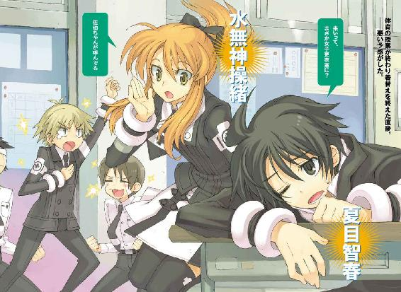
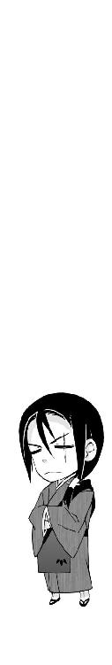

| アスラクライン（4） 秘密の転校生のヒミツ (電撃文庫) | |
| 三雲 岳斗 & 和狸 ナオ | |

本書（電子版）に掲載されているコンテンツ（ソフトウェア／プログラム／データ／情報を含む）の著作権およびその他の権利は、すべて株式会社アスキー・メディアワークスおよび正当な権利を有する第三者に帰属しています。
法律の定めがある場合または権利者の明示的な承諾がある場合を除き、これらのコンテンツを複製・転載、改変・編集、翻案・翻訳、放送・出版、公衆送信（送信可能化を含む）・再配信、販売・頒布、貸与等に使用することはできません。
φ プロローグ
その日の教室は、いつもと少しだけ違っていた。
午後の洛芦和高校一年七組。黒板を埋め尽くしているのは、意味不明の暗号としか思えない複雑な連立不等式。神経質な顔立ちの数学教師磯村が、独りごとのような口調でぼそぼそと説明を続けている。普段と変わらぬ、退屈な授業の光景だ。
天気は良くもなく悪くもなく普通。気温もたぶん平年並み。制服が夏服に替わるのはもう少し先の話で、このあとなにか特別な学校行事が予定されているわけでもない。小声で私語を交わしている生徒がいるのも、いつもと同じ。
なのに、なぜか教室内には微妙な緊張感が漂い続けていた。
『......臨死体験？ なにそれ？』
唐突につぶやいたのは、僕のすぐ隣に座っている女子生徒だった。
全体的に色素が薄い印象の少女である。
西洋人形のような端整な横顔は、黙っていればどこか神秘的ですらある。肌は透けるように白く、ほっそりとした身体は体重をほとんど感じさせない。
それどころか、実際に彼女の肌を透かして背後の景色がうっすら見えていたし、彼女の身体は重力を無視して少しだけ空中に浮いていた。
もちろん普通の人間に真似できることではない。
彼女の正体は射影体。正式には、量子的に投影された副葬処女の疑似感覚入出力デバイス、という。簡単にいえば幽霊のようなものである。透きとおっているし、宙に浮いてるし、気まぐれに勝手に姿を消したり、壁をすり抜けて現れたりする。
三年前。飛行機事故に巻きこまれて、僕の幼なじみだった水無神操緒という少女が行方不明になった。そして、それ以来、僕は彼女の幽霊に取り憑かれているのだ。
幼なじみの幽霊が、僕と同じ教室で授業を受けている。
そんな非常識な現実に、僕は軽い頭痛を覚える。
教室内に漂う微妙な緊張感の元凶も、彼女だった。
操緒が転校生扱いでこのクラスに編入してきたのは先週のこと。ほとんどのクラスメイトは、まだ彼女の存在に慣れていない。
そもそも幽霊が普通に授業に出ている時点で、明らかになにかが間違っている。
しかし世の中には、そういうことをまったく気にしない種類の人間というのも存在する。
「──臨死体験ってのは、ま、あれだ。いわゆる死後の世界ってヤツ。死にかけた人が運良く生き返ったりすると、たまにそういうのを覚えてたりするだろ。三途の川とかお花畑とか」
『ああ、あれかあ......うん、わかるけど、操緒はそういうの記憶にないなあ。それより死後の世界なんて、そんなの本気で信じてるの？ バカみたい』
「......いや、バカみたいって......」
人格を全否定するような罵倒を喰らって情けない表情を浮かべたのは、樋口琢磨だった。
樋口は重度のオカルトマニアだが、それでも操緒にバカ呼ばわりされたくはないだろう。どう考えても死後の世界より、こんなところで高校の授業を受けている幽霊のほうが非常識だ。
それでも樋口は、すぐに気を取り直して顔を上げ、
「まあいいや。それより水無神って、三年前から智春に憑いてたんだろ？ なんでまた今になって急に姿が見えるようになったんだ？」
『んー......それはですね......』
意外にも鋭い樋口の指摘に、操緒が真面目に考えこむ。
授業を聞いていたはずのほかの生徒たちが、一斉に操緒たちの会話に耳をそばだてた。
さすがにみんな、そのことが気になってはいたらしい。
『ね、智春。言っちゃってもいいのかな？』
振り返った操緒が、いきなり僕に訊いてきた。
いいわけないだろ、と僕は唇の動きだけで返事をする。
操緒が突然、普通の人間にも見えるようになったのは、彼女の本体を封印している僕の機巧魔神が〝スタビライザ〟とかいう部品を取りこんでしまったせいである。
機巧魔神とは悪魔を滅ぼすために生み出された機械仕掛けの悪魔のこと。いつ暴走するともしれないそんな化け物を僕が自分の影の中で飼ってるなんて、そんなことを説明できるはずがない。
ただでさえ僕は、幽霊憑きとして気味悪がられているのだ。この上、機巧魔神のことがバレたら確実に危険人物の変質者扱いだろう。まともな高校生活を送るという、ささやかな僕の願いすらもはや絶望的だ。
『ごめんね、樋口。智春がダメって言ってるからそれは言えないんだ。まあ成り行きというか、オトメの秘密ってことで』
「なっ......」
操緒の適当すぎる言い訳を聞いて、僕は小さく呻き声を上げた。教壇の磯村がその声に反応して、ぎろりと僕を睨んだ。
あわてて机に突っ伏しながら僕は、アホか、と操緒に無言で抗議する。なにがオトメの秘密だ。そんな言い方したら樋口たちに誤解してくれと頼んでいるようなものではないか。
「秘密って......まさか、智春になにかされたとか？」
予想したとおり、必要以上に驚いた表情で樋口が訊く。
操緒は、んー、と唇に指をあて、
『や、実はあたし、そのとき意識が朦朧としてたんで記憶が曖昧なんだけどね』
「意識が朦朧......つまり抵抗できなかったってことか」
『ちょっと違うけど。ま、智春のせいといえば智春のせいかなあ』
「むう。まさか......無抵抗な幼なじみに対して、あの智春が具体的な行動に出るとは......」
まぎらわしい樋口のつぶやきを聞きつけて、クラスメイトたちがざわめいた。数学教師磯村が、ゴホゴホとわざとらしい咳を繰り返す。
強烈な視線を感じて振り返ると、佐伯玲子が窓際の席からものすごい目つきで僕を睨んでいた。なにか完璧に誤解したらしい。
この誤解をどうにかできるとすれば、すべての事情を知っている嵩月奏だけ。しかし彼女は、操緒たちの雑談にも気づかず、黙々とノートを取っていた。基本的に真面目な性格なのである。
「そういや、水無神って智春以外の誰かにも取り憑けるの？」
ふと真剣な表情になって樋口が訊く。
『んー、無理。操緒は智春の守護霊だからね』
操緒はさらりと返答した。なにが守護霊だ、と僕はこっそりとため息をつく。
操緒が僕から離れられない理由は、彼女が僕の脳を利用してこの世界に自分の姿を投影しているからである。したがって、操緒がなにかしら僕を守護してくれているという事実はあまりない。むしろ苦労させられることのほうが確実に多い。
「え、それって二十四時間ずっと智春と一緒にいるってことか？」
さすがに驚いた声で樋口がつぶやいた。
『そうだよ。まあ、お風呂のぞいたりはしないけど』
あっけらかんと操緒がうなずき、再び、ざわっ、と教室内の空気が揺れた。
操緒は僕が知っている限りの、ほぼすべての情報を持っている。それが意味するところに、ようやくクラスメイトたちも気づいたのだ。
「ってことは、体育のときに男子だけで話してた内容とかも？」
『んー......それってこないだのクラスの女の子の美脚ランキングとかのこと？』
「待った。それ以上は言うな、言わなくていい。それより、中学のときに智春とちょっと噂になってた女子がいたろ。あいつのことを智春ってホントはどう思って──」
「うわっ」
おまえらいい加減にしろ、と僕は操緒めがけて消しゴムを投げつけた。
実体のない操緒の身体をすり抜け、消しゴムはその向こう側にいた樋口の眉間を直撃する。
「痛でっ......てめ、智春、よくも......」
樋口が額を押さえたまま、自分の筆箱を振り上げた。
教科書を盾にして僕は防戦。樋口の放った定規や下敷きを迎撃する。
そのまま静かな攻防がひとしきり続いた。間に挟まれる形になった操緒は、教室の上空に浮かび上がって避難する。
「あー......夏目」
そのとき、誰かが僕の名前を呼んだ。反撃のために上履きを握りしめたままの姿勢で、僕は動きを止めた。教壇の上の磯村が、こめかみに青筋を浮かべて僕を睨んでいた。
「おまえ、しばらく廊下に立ってろ」
磯村の厳かな声が響き渡る。
「え......僕？」
廊下に立ってろ、ってアンタ。高校生にやらせることですか。てか、それよりも、
「ちょ......ちょっと先生。授業中に私語をして騒いでたのは操緒と樋口で、僕は無関係......」
「なに言ってる。水無神はおまえの背後霊だろうが。おまえが責任とれ」
「ええっ......!?」
僕は絶句して立ち尽くす。ふと気づくと、操緒はいつの間にか自分の席に戻って、真面目に授業を聞いているフリをしていた。一瞬だけ僕のほうを振り返り、ごめん、と両手を合わせて舌を出す。ちょっと待て。ごめん、て。それで済ます気かオイ。
やれやれ、と首を振り、僕は仕方なく廊下へと向かった。
ようやく振り返った嵩月が、とぼとぼと教室を出て行く僕を、心配そうに見つめていた。
嵩月の視線に気づいて軽く肩をすくめ、そして僕は彼女の斜め前の席に目をとめた。
そこに座っていたのは杏だった。中学時代からの友人の大原杏。
いつも無駄に元気で、授業中も決しておとなしいとはいえない彼女が、なぜか今日は僕のほうを振り向きもせず、頑なに背中を向けている。
初めて目にする物憂げな横顔が、少しだけ気になった。
そんな五月下旬のことだった。
一章
操緒の編入が認められた理由は簡単だ。
旧約聖書『伝道の書』に曰く、塵は元の大地に帰り、霊はこれを授けた神に帰る──すなわち肉体を離れた死者の魂は、再び神の一部に戻るということだ。そもそも厳密なキリスト教の教義では、幽霊の存在を認めていない。
そして洛芦和高校は、あまり知られてないが実は名門のミッション校である。
そんな名門校の校内を、女子高生の幽霊なんかがうろつくのを認めるわけにはいかない、と思った偉い人がいたのだろう。
しかし現実問題として、操緒は誰にでも見える姿で学校内をうろついており、存在しないと言い張るのは明らかに無理がある。ここで重要になるのが、操緒の法律上の扱いだ。
戸籍の上では操緒は『死亡』ではなく、『行方不明』という立場になっていた。
死亡していないということは生きているということであり、存命中の女子が高校に通うのは宗教的にもまったくなんの問題もない。しかも操緒の学力は、洛高生の平均よりも上だった。
それなら、というわけで、操緒はなかば無理やり正式な生徒にさせられてしまったということらしい──以上、証明終わり。
「学校側の事情は、どうせそんなことだろうと思ってたけど」
業務用の大型冷蔵庫に新しい缶ビールを詰めながら、僕は投げやりにつぶやいた。時刻は午後七時を少し過ぎたあたり。いつもの大原酒店でのバイト中である。
レジの前ではメイド風エプロンドレス姿の操緒が、杏の母親の背後で客に愛想を振りまいている。なんで酒屋の店員がメイド服、と思わないでもないが、客たちは喜んでいるみたいなので文句は言わないことにする。
「うちのクラスの連中は、なんで平然と操緒を受け入れてるんだ？ 普通、もうちょっと違う反応があるだろ。驚くとか怯えるとか......あっさりなじみ過ぎじゃないか？」
「いや、あんなもんじゃないッスか。七組だし」
へらへらと笑いながら答えてきたのは、真日和秀だった。金さえ払えばどんな依頼も受けるという便利屋集団、洛高第二生徒会の会計担当だ。
「七組だし、ってどういうことだよ？」
空になった段ボールを折りたたみながら、訊き返す。すると真日和は、ちょっと意外そうな表情を浮かべ、
「あれ、夏目くん、気づいてなかったッスか？ 特殊監理クラスのこと」
「いや......知らないけど」
なんだその物騒な名前の学級名は。
「洛高には、悪魔とか機巧魔神の演操者とかの特殊能力者が多いッスからね。一般の生徒に被害がでないように、そういうのに耐性がある生徒だけ一カ所にまとめて隔離してるッス」
「は？」
「や、だから、過去に超常現象を体験したことがあるとか、オカルト好きとか、身内に悪魔の契約者がいるとか、そんな感じの関係者だけをまとめて」
「......それって、七組に変人だけを集めてるってこと？」
「わかりやすく言うとそういうことッス。ほかの学年にも似たようなクラスがあるッスよ」
「......」
僕は脱力してその場に屈みこんだ。言われてみれば思いあたることが多すぎた。
オカルトマニアの樋口を筆頭に、高位の悪魔である嵩月と、演操者の兄を持つ佐伯玲子が同級生だったり、担任教師が悪魔の契約者だったり。あれは今回みたいな非常事態の対策だったのか。
「まあ、一般の生徒も半年くらいあの学校に通ってたら、たいていの怪奇現象には慣れるんで、問題になるのはこの時期だけッスけどね。だから留年組のオレらは普通のクラスだし」
「......なんでそんな勝ち誇った顔してんだよ」
つくづく奇妙な学校だ、と僕はため息をつく。
それでもいちおう納得はした。全員が全員とはいわないまでも、幽霊程度では驚かない連中がうちのクラスには集められていた、ということか。
「それはそうと、なんで真日和がここにいるんだ？」
「なんスか、その迷惑そうな扱いは。いちおう客ッスよ。魚肉ソーセージ買いにきたッス」
「は？」
僕は怪訝顔で、真日和がぶら下げている近所のスーパーのポリ袋を見た。すでにその中にはぎっちりと十人分ぐらいの魚肉ソーセージが詰まっていた。
「それだけじゃ足りないってこと？ なんでそんなもの買い占めてるんだ？」
「ヴィヴィアンの夜食ッス。好物なんスよ」
「なるほど......って」
僕は驚いて真日和に顔を近づけた。
「おまえ、あの使い魔に今度はなにをやらせるつもりだ？」
ヴィヴィアンというのは、真日和の使い魔の名前だった。
見た目はただのばかでかい犬だが、その実体は風獣と呼ばれる強力な怪物だ。先日は嵩月と派手な戦闘を繰り広げ、鳴桜邸の庭を半壊させた。
「仕事ッス。今回のヤツはまともな依頼ッスよ。下着泥棒の捜索ッス」
特徴的なタレ目を細めて、真日和は笑う。今イチ信用しづらい笑顔である。
「下着泥棒？」
「そうッス。依頼人の名前は言えないッスけど、しばらく前からこのあたりで派手に動いてる下着ドロがいるんスよ」
「......そういうのって警察の仕事じゃないの？」
僕は疑わしげにつぶやいた。真日和に限ってタダ働きってことはないはずで、たかが下着ドロのために第二生徒会を雇う者がいるとは思えない。しかし真日和は真面目な声で、
「いや、こいつがタダ者じゃないんスよ。うちらが一週間近く動いてるのに被害続出で、いまだに犯人の足取りがつかめてなくて。警察なんかの手に負える相手じゃないッス」
「それで使い魔まで持ち出したのか」
「まあそうッスね。このままでは巡礼者商連合の信用に関わるってことで」
「ふーん」
いちおう納得する。ここで真日和が僕にウソをつく理由もなさそうだ。それに、下着泥棒が相手なら、僕たち科學部の部員にとばっちりが来る可能性も低い。
「まあいいや。魚肉ソーセージなら隣の棚だよ。箱ごと買うなら、少し安くしてあげられると思うけど」
「おお。いいッスね。そういう値引き交渉とか大好きッスよ」
真日和が声を弾ませながら、おつまみ類の陳列棚へと向かった。店の自動ドアが開いたのは、その直後だった。いらっしゃいませ、と言いかけて、僕は入ってきたのが客ではないことに気づいた。洛高の陸上部のジャージを羽織った小柄な影だ。杏だった。
「ただいま」
レジに立っている母親と操緒に気づいて、杏は素っ気なくつぶやいた。
いつもの快活な彼女とは別人のような、弱々しい声だった。愛想よく手を振る操緒にも軽く会釈しただけで、そのまま自宅へと入っていってしまう。傍目にも元気がないのは明らかだ。
「どうしちゃったッスか、彼女」
真日和が好奇の光で目を輝かせて、思いきり無視された恰好の僕に訊いてきた。
「なんか怒ってたみたいッスね。あれって、こないだ夏目くんに桃缶を投げつけてた子でしょ」
「うん......まあ」
そういえばそういうこともあったなあ、と思い出す。
意外に怒りっぽいところがある杏だが、そのぶん怒りが冷めるのも早い。だから今回もどうせすぐに忘れるだろうと思っていた。しかしその考えは甘かったらしい。
「やっぱ、夏目くんが自分の射影体のことを彼女に内緒にしてたのがまずかったんじゃないんスか？」
真日和が意外にもっともな指摘をする。
たしかに操緒の姿が見えるようになって、いちばんショックを受けたのは杏かもしれない。
彼女とはつき合いも古いし、オカルト大好きの樋口と違って杏は幽霊否定派だったのだ。僕に裏切られたような気分になっても無理はない。しかし、
「......そんなこと言われてもな」
杏が勝手に信じなかっただけで、僕はべつに操緒のことを隠していたわけではないのだ。今さら謝るのも不自然だと思う。仮に僕から謝るにしても、なにから説明すればいいのか、さっぱり思いつかない。
「ふっふっふ、お悩みッスね。もしよかったら相談に乗るッスよ。似たようなケースは前にもあったッスから、我が巡礼者商連合に任せておけば間違いないッス」
「......商連合に任せるって、まさか僕からも金取る気か？」
「正当なカウンセリング料金ッス。今ならスタンプカードも無料で作るッスけど」
「いやいい。遠慮する」
僕は迷わず言い切った。
操緒は相変わらずレジの前でにこやかに微笑んでいる。杏の母親も、娘の不機嫌さを特に気にかけている様子はない。そもそも操緒自身がこの問題の原因なわけで、彼女たちに相談しても徒労に終わることは容易に想像できた。
僕は気落ちしてため息をつく。下着泥棒の騒ぎなんかに巻きこまれるまでもなく、この世界は十分に苦労で満ちているらしかった。
○
忘れかけていた下着泥棒事件のことを僕が思い出したのは、翌々日のことだった。
金曜日の午後である。その日最後の授業は体育で、授業を終えて教室に戻った僕たちは、ほとんど屍のような姿を晒して、ぐったりと机に突っ伏していた。
「女子が温水プールを使ってるときに男子の体育がマラソンってアリかよ。くそ......体育教師どもの悪意を感じるぜ......やっぱこないだ流したヤツらのホモ疑惑がまずかったか」
弱々しい声でつぶやいたのは、樋口だった。脱水症状寸前らしく、唇が土気色にひからびている。更衣室ではまだ女子が着替え中のはずだが、のぞきにいく気力も残ってないらしい。
「くっ......嵩月......せめて嵩月の水着姿を一目......」
樋口が全身を震わせながら立ち上がる。
「よせ、樋口！」
「その身体では無理だ。気持ちはわかるが......死ぬぞ！」
樋口と、彼の仲間のエロ男子どもが、ぶわっ、と涙を流しながら叫んでいる。つき合いきれんなあ、と僕は醒めた目で彼らの三文芝居を眺めていた。
そもそも嵩月は今日、学校に来ていない。なにか事情があって欠席らしい。当然、水泳の授業にも参加しておらず、今さら樋口たちがどうあがいても、嵩月の水着姿を目にすることはできないのだ。
『......なんの騒ぎ？』
空中に透き通った波紋を描いて、溶け出すように現れたのは操緒だった。教室で騒いでいる樋口たちを見て、呆れたように目を細める。
『わっ......なに、この教室!? 汗臭ーい！』
「仕方ないだろ。よりによってこの時期に長距離走なんかするから」
『うわ......悲っ惨。それより智春、着替え終わった？』
「まあいちおう。それがどうかした？」
僕は投げやりに訊き返した。終わっていなかったらどうするつもりだったのだろう。
『んーとね、佐伯ちゃんが呼んでる。智春にちょっと来てくれって』
「僕に？ 来いって、まさか女子更衣室に？」
『そうそう。ちょっと問題があってね』
操緒は少し真面目な顔でうなずいた。なんだそれは、と僕は顔をしかめる。漠然と嫌な予感がした。問題って、まさかまた機巧魔神がらみじゃないだろうな？
『違うと思うよ。ここじゃちょっと言えないけど』
操緒が思わせぶりな口調で告げる。僕は仕方なく立ち上がった。この疲れているときに傍迷惑な話だが、佐伯妹の命令を無視すると、もっと面倒な結果を招く気がする。
「待て、智春。なんでおまえだけ女子更衣室に呼び出されるんだ!? 俺も行く」
疲労で死にかけていたはずの樋口が、僕の前に立ちはだかって叫んだ。僕には特に反対する理由はなかったが、
「いいのか？」
いちおう操緒にお伺いを立ててみる。と、
『いいんじゃない？』
意外にもあっさり承認されてしまった。
考えてみれば時間的にも女子の着替えは終わっているはずだし、佐伯妹が生着替え中の更衣室に僕を呼び出すはずもない。操緒が言ったみたいに、なにか問題が起きているのだとすれば、人手は多いほうがいいのかもしれなかった。
それにしても着替えが終わっているはずなのに、うちのクラスの女子が誰一人教室に戻ってこないのはなぜだろう。まあいい。行ってみればわかることだ。
「──夏目、遅いっ！」
そして佐伯玲子は、女子更衣室の前に仁王立ちで僕を待ちかまえていた。いきなり人を呼びつけておいて、ずいぶん身勝手な言い種である。
僕のあとについてきた樋口に気づいて、彼女は一瞬むっと目を細めた。しかしすぐに気を取り直したように、荒々しく息を吐き捨てると、
「あんたも来たの、樋口。まあいいわ。これでアリバイの確認と監視する手間が省けたから」
「は？」
なんだそりゃ、と樋口が首を傾げた。僕も思わず眉間にしわを寄せた。佐伯妹が不機嫌なのはいつものことだが、アリバイだなんて、なにか殺人事件でも起きたみたいな口振りだ。
しかしもちろん女子更衣室で、殺人が起きた気配はない。そもそもそんな大事件なら、僕なんかではなくて警察だか名探偵だかを呼んでくるべきだろう。
呼び出されるままに来てみたものの、事情がわからず立ち尽くしている僕に、
「じゃあ、行くわよ」
佐伯妹は説明もなしにそう言った。もうまったくわけがわからない。困った顔で操緒を見上げると、操緒は少し楽しそうに微笑み、肩をすくめた。
佐伯妹は荒っぽい足取りで廊下を歩いていく。そのときになってようやく僕は気づいた。
彼女は制服のスカートの下に白いスパッツをはいていた。
運動部員がユニフォームの下に着るような短いスパッツだ。べつに変ではないが、この季節にしてはめずらしい。プールで腰でも冷やしたのだろうか？
「違うわよ」
だいたいなにを考えてるのかわかるけど、と前置きして佐伯妹は短く告げた。
彼女が向かった先は、来客用の昇降口だった。生徒は普段、あまり立ち寄らない場所である。
古い大理石の彫刻が飾られた無駄に豪華なホールには、神父風の服を着た男が気配もなく立っていた。その男の顔を僕は知っていた。
『あ......あの人......』
操緒が目を大きくしてつぶやいた。僕は思わず立ち止まり、無意識に逃げ場を探して周囲を見回す。あの偽神父は、たしか奥沼とかいう佐伯家の執事だ。しかもただの執事ではない。機関銃を振り回し、嵩月一家の若衆たちと互角の銃撃戦を繰り広げる化け物だ。できれば二度と顔を見たくないと思っていたのだが。
「お嬢様」
奥沼は、佐伯妹に気づいて恭しい仕草で頭を下げた。
「頼まれたお荷物をお届けに上がりました。各種用途とサイズを取りそろえて二十人分」
「ご苦労です、奥沼。忙しいときに邪魔して悪かったわね」
「いえ、護衛が行き届かず申し訳ありません。お嬢様もくれぐれもお気をつけて」
奥沼はそう言って、佐伯妹のほうにトランクケースを差し出した。銀色の巨大なトランクだ。
またこれか、と僕はげんなりした。この手のケースはもう見飽きた。うんざりだ。
「なにやってるの、あなたたち。さっさと運んで」
ぼんやりと立っている僕と樋口を睨んで、佐伯妹は言い放つ。
「ちょっと待て、佐伯。おまえ、これを運ばせるために俺たちを呼んだのか？」
さすがにムッとした様子で樋口が言った。
それを見ていた奥沼執事が、かすかに片眉を震わせた。佐伯妹に対する樋口の態度を不快に思ったらしい。うわー、と操緒が目元を覆い、僕はあわてて樋口をなだめにかかった。気持ちはわかるが、あのオッサンのいる前で佐伯妹に逆らうのはまずい。
そして佐伯妹はあくまでも高飛車に、
「そうよ。なんだと思ってたの？ ていうか、べつにあんたは呼んでないけど」
「うっ、ぐっ」
苛立った表情で樋口がうめき、
「それよりもクラスメイトが困ってるんだから、ちゃきちゃき運びなさいよ。そんなに重くはないはずよ」
「......佐伯、この中身ってなに？」
反論しようとした樋口の口をふさいで、僕は訊いた。たしかに彼女の言うとおり、それほど重くない。機巧魔神を封印していたイクストラクタとかいう装置とは違うようだ。
「下着よ。新品の」
重々しいため息とともに佐伯妹は返答した。一瞬、なにを言われたのかよくわからなかった。
「え......下着って？ ブラとかパンツとか？」
なんでそんなものを奥沼のオッサンが運んでくるのだ？
『盗まれたんだよ。クラス全員ぶん。更衣室から』
言いづらそうにしている佐伯の代わりに、操緒が言った。
「えっ」
僕はちょっと唖然とした。
「盗まれたって、もしかして真日和が言ってた下着ドロってヤツか？ クラスの女子の下着が根こそぎ？ あ、じゃあ、佐伯がはいてる白スパッツって」
「うるさい。じろじろ見るなっ」
スカートの裾を押さえて、佐伯妹が怒鳴る。彼女が恥じらうように頬を染めている姿というのはちょっとめずらしい光景だ。そんな可愛らしく照れるところでもないと思うが。
まあ、なんとなく話が見えてきた。
つまりうちのクラスの女子が水泳の授業を終えて戻ってきたら、更衣室の中から一枚残らず下着が消えていた、と。それで佐伯妹は大至急、奥沼執事に命じて新品の下着を用意させ、自分はたまたま残っていたスパッツを下着がわりに外に出てきたというわけか。
『濡れた水着で校内をうろうろできないしね。動けるのは操緒と佐伯ちゃんだけだったんだよ』
操緒がため息混じりに苦笑した。
なるほど。それが僕が荷物運びとして選ばれた理由か。
僕の背後霊である操緒が、理由なく僕を呼び出しても誰も怪しまない。つまりクラスの男子が女子更衣室で起きた異変に気づいて騒ぎ出す心配もないということだ。
「そういう事情なら仕方ないけど」
僕はあきらめてトランクケースを持ち上げた。理由はどうあれ、操緒が同級生に頼られるのは喜ばしいことである。
樋口も今度は文句を言わずに、トランクケースの反対側に手をかけ、
「下着ドロか......それは、許せんな」
めずらしく真剣な表情でつぶやいた。
おや、と佐伯妹が彼のほうを振り返る。下着泥棒のような犯罪者に対して義憤を感じている樋口のことを、少し見直した、という表情だ。
実際、樋口は本気で腹を立てているらしく、
「くそ、忌々しい。この俺の知らないところで、うちのクラスの女子どもの下着を並べて比較分類したり、被ったりしてるヤツがいると思うと、むかっ腹が立ってしようがないぜ。だろ、智春！ 下着ドロの野郎、自分だけがよければそれでいいのか!?」
「いや......それはちょっと怒るところが違うんじゃ......」
ていうか、僕に同意を求めるなよ。
「せめてもの救いは嵩月の下着が無事だったってことだな。あれが奪われていたら、暴動が起きていてもおかしくない。人類の文化遺産の大いなる損失だ」
「文化遺産って......下着ドロの話だろ。べつに嵩月のとか関係ないんじゃ......」
「バカ、智春。人類の下着がすべて平等だとでも思ってるのか。だったら嵩月のパンツと俺のパンツ、どっちか被らないと殺すと言われて、おまえ、どっちを被るよ？」
「そういう小学生みたいな喩え話はやめろって」
いちいち相手するのも虚しいが、いちおう突っこんでおく。でないと、佐伯妹がブチ切れそうだった。
まあ、なんというか樋口も動揺しているのだろうと好意的に解釈しておく。殺人事件には及ばないが、これはこれで大問題であるのは間違いない。
「でも、こんな昼間に学校内で下着ドロって、けっこう危険だよな？」
ふと思いついて、僕はつぶやく。だね、と操緒はうなずいた。
『しかも持っていったのが、クラスの女子全員ぶんってのも大胆だと思うよ。いくらなんでも隠し持ってられる量じゃないし。盗まれたってことがバレバレだし』
それもそうだ。盗まれたのが一枚だけなら、泥棒の仕業だとすぐに断定することができないが、これでは犯行時間のごまかしようがない。
「......柱谷やんには？」
「柱谷先生にはいちおう伝えてあるわよ。お兄様にも」
ふてくされたような声で佐伯妹が言う。
彼女の兄というのは、すなわち第一生徒会の会長、佐伯玲士郎その人だ。
急進的なカトリック信者を中心に組織された第一生徒会は、神聖防衛隊という物騒な別名を持っている。学校内の治安維持が彼らの主な任務であり、場合によっては平然と校内で銃器をぶっ放したりもする。屈強な体育会系クラブの猛者たちを大量に抱えた彼らの包囲網から、下着泥棒ごときが逃れられるとは思えない。
「でも、連絡したのはあたしたちの授業が終わったあとだから......その前に学校外に逃げられてしまったら、いくらお兄様たちでもどうしようもないわ」
沈んだ声でそこまでつぶやいて、佐伯妹はいきなり柳眉を逆立てた。
「ああもう、むかつくわ。あの第二生徒会の無能ども！ 高い料金ふんだくっておいて、下着ドロ一匹捕まえられないなんて！」
「えっ」
子どものように地団駄を踏む佐伯妹の言葉を、僕は少し驚いて聞いた。びっくりした表情の操緒と、思わず顔を見合わせる。
「真日和たちに下着ドロの退治を依頼したのって、佐伯だったのか？」
「そうよっ。なんか文句あるの!?」
「いや、そういう意味じゃないけど」
僕はあわてて首を振った。べつに文句はないが、すると佐伯妹が下着ドロの被害に遭うのは二回目か。なるほど、それは怒るわけだ。しかし、あの奥沼がいる佐伯家から下着を盗み出すというのは、並大抵の技術でできることではない。もしかしたらこの下着泥棒、実は相当な大物かもしれない。
「第二の連中が、さっさと犯人を見つけ出してたら、こんなことにはならなかったのに......もういいわ。こうなったら、夏目、あたしたちで犯人を捕まえるわよ」
「は？」
まるで当然のように名前を呼ばれて、僕は思いきり面食らった。
「あたしたち、って、もしかして僕も頭数に入ってるのか？」
「あたりまえでしょ。か弱い女の子だけで、どうやって下着ドロを取り押さえろっていうのよ。あんた機巧魔神の演操者でしょうが──」
「なっ、バカ......」
僕はあわてて佐伯妹の言葉を遮った。彼女は本気になったオカルトマニアの恐ろしさを知らないのだ。樋口なんかに機巧魔神のことを知られたら、下手すると僕が解剖されかねない。
「なんで僕なんだよ。そういうのは、佐伯のとこの兄貴が専門だろう」
「お兄様はお忙しくてそれどころじゃないのよ。下着ドロなんかより大変な事件がたくさんあるんだから」
佐伯妹は唇を尖らせながらそう言った。
そうなのか、と僕は沈黙した。まあ、佐伯兄がなにをしているかなんて知りたくもないので、深く追求するのはやめておく。
「わかった。俺も協力するぜ、佐伯。絶対、犯人は捕まえてやる。ヤツだけにいい思いをさせてたまるかっ」
拳を突き上げて宣言したのは、樋口だった。なぜかみょうなやる気を燃やしている。
「え、あ......そうなの......？ べつにいいけど」
佐伯妹は少し戸惑ったような表情でつぶやいた。やる気になっている理由はともかく、樋口の情報網には侮れないものがある。そのことは彼女にもわかっているのだろう。
僕としても協力する気がないわけではない。この手の事件では警察はあまり役に立たないというし、自分たちの手で犯人を捕まえようと佐伯妹が考える気持ちは理解できる。
それに、真日和たちがいまだに犯人を特定できていない、というのも少し気にかかる。白昼堂々、学校から下着を盗み出した手際のよさといい、おそらくこの犯人はただ者ではない。
「あんたたちはもう帰っていいわよ。操緒は、こいつらの監視。よろしく！」
女子更衣室の前まで来たところで、佐伯妹は僕たちが運んできたトランクケースを奪い取った。一人でずるずるとトランクを引きずって、更衣室の中へと入っていく。新しい下着の到着を待ちかねていた女子たちの歓声が、廊下にまで聞こえてきた。
そのとき僕はふと奇妙なことに気づく。
「なあ、操緒。犯人ってどこから女子更衣室に入ったんだ？」
『んー......それが謎なんだよね』
操緒はわざとらしく考えこむふりをした。
『更衣室の窓には鉄格子がはまってるんだよ。入口の鍵はちゃんとかかってたし、鍵は見学の子が持ち歩いてたから、誰かが途中で出入りするのは不可能だったと思うんだけど......』
「密室か」
話を聞いていた樋口が、真面目な口調でつぶやいた。たしかに、密室といえばそういうことになる。本気で事件っぽくなってきた。
『でもさ、下着泥棒が入ったのはバレバレだし、わざわざ密室にする意味はないでしょ』
操緒が冷静に指摘する。僕はうなずく。そのとおり。体育の授業が終わったら、犯行があったことはすぐに露呈するのだ。わざわざ鍵をかけ直す意味があるとは思えない。どうにもこの犯人の行動には謎が多すぎる。
どこから情報が漏れたのか、すでにほかの男子にも下着ドロの噂は伝わっていた。おかげで教室内は騒然としている。
しばらくして、着替えを終えたクラスの女子がぞろぞろと教室に戻ってきた。
その中には大原杏の姿もあった。下着を盗まれたことにショックを受けたのか、物憂げな表情で落ちこんでいるように見えた。盗まれた下着がどういう使われ方をするかわかったものではないのだから、不安になるのも無理はない。
ふと思う。僕と操緒が、彼女のために下着泥棒を捕まえたら、杏は喜んでくれるだろうか。仲直りのきっかけとしては、それは、たぶん悪くない。
「あのさ、杏」
目の前を通り過ぎる彼女に、僕は思い切って呼びかけてみた。
だが、杏は僕のほうを振り返りもしなかった。そのまま素通りして自分の席へと戻っていく。これ以上ないくらい見事に無視された形である。
あちゃー、と操緒が顔を覆ってつぶやいた。
僕は途中まで手を上げた中途半端な姿勢で、呆然と硬直する。
予想外にショックだった。まさかそこまで嫌われているとは。
へこむ。
○
下着泥棒を捕まえる、といっても、さしあたって僕がなにかできるわけではない。
佐伯妹は学校側の現場検証の立ち会い。樋口も情報収集と言ってどこかに行ってしまったので、取り残された僕と操緒は、なんとなく科學部の部室へと向かった。
操緒が佐伯妹から聞き出しておいた情報によれば、この付近で下着泥棒の被害が出始めたのは今月に入ってからのことらしい。
この犯人の特徴は、なんといっても一度に大量の下着を盗み出すことである。
すでに市内の大学の女子寮や、多くの中学高校が被害に遭っており、盗まれた下着の量は、なんと最大でパンツ六百枚にも及ぶという。その噂は各地に広まって、洛高でも警戒を強めていた矢先の出来事だったらしい。
犯人の目的は一切不明だ。手口は大胆かつ繊細。どんな厳重な警備をもかいくぐり、神出鬼没でまったく証拠を残さない。その容赦ない略奪ぶりを知った同業の下着泥棒たちからは、ハーメルンと呼ばれて恐れられているらしい。
「......ハーメルン？」
下着泥棒らしからぬ気取った名前に僕が眉をひそめると、
『たぶん、ハーメルンの笛吹き男になぞらえているんだと思うけど。ほら、グリム童話の』
操緒は興味なさそうな口調で説明した。なるほど、ハーメルンの下着男というわけか。
ハーメルンの笛吹き男が町中の子どもたちを攫ったのと同様に、今回の下着男は、市内の下着を根こそぎ奪い去ろうとしている──理屈はわかるが、中世ドイツの大事件と下着泥棒を一緒にするのはどうかと思う。
ともかく、同業者からもそれほど恐れられているとは、やはり今回の犯人はただ者ではない。真日和たちが手こずっていたのも納得だ。
本当ならこんなときこそ第一生徒会の出番なのだろうが、佐伯妹の話を聞いている限りでは、彼らにもあまり期待できそうにない。こんな状況で頼りになりそうな人といったら、あとはもう朱浬さんしか思いつかなかった。
「や、トモハル。ちょうどいいところに」
意外なことに、放課後の化学準備室には先客がいた。
怪しげな黒衣をまとった朱浬さんが、おっとりとした微笑を浮かべている。それは見慣れたいつもの光景だ。しかし準備室中央の作業机には、朱浬さんのほかに部外者一名が座っていた。
見るからに頼りない風貌の男性教師。うちのクラスの担任の柱谷である。
「......なんで柱谷やん先生が？」
思わず入口で立ちすくんで僕は訊いた。こないだの中間テストの追試は終わったし、進路指導の季節にはまだ早い。部室で担任教師に待ち伏せされるような心あたりはないのだが。
「あの、言っときますけど、下着泥棒の件なら僕はなにも」
「......下着ドロ？」
朱浬さんが怪訝そうに目を細めた。どうやらその話ではないらしい。
「あ、いや、違うんだ」
柱谷は頼りない愛想笑いを浮かべて僕を見上げ、
「実は今日は、ちょっとした仕事、というほどでもないのだけど、個人的な......いや、個人的でもないのだが、お願いというか、頼みがあって来たんだ。科學部に。というか、主に夏目くんに」
「は？」
僕は警戒心を剥き出しにして柱谷を見た。
わざわざ科學部の部室に乗りこんできてまで僕に依頼なんて、怪しいにもほどがある。
『あの......まさか、夫婦喧嘩の仲裁とかですか？ また由璃子さんが家出したとか？』
疑り深そうな目つきで柱谷を睨んで、操緒が訊いた。柱谷は、あわてて首を振り、
「いや、違うよ。そうじゃない。いや、あのときは迷惑かけたね、あはは」
気弱な笑みを浮かべて頭を下げる。ここの夫婦は、洛高一年生全員を巻きこんだあげくに、科學部の全戦力を投入してようやく収拾するという、壮大な痴話喧嘩を繰り広げた前科があるのだ。しかしどうやら、それ以来、夫婦仲はうまくいっているらしい。
「あの......それで僕たちに依頼というのは......」
このままほっとくと柱谷がのろけ話を始めそうな気配があったので、僕は仕方なく自分から訊いた。柱谷は、本来の目的をようやく思い出したらしく、危なっかしい手つきで薄っぺらい書類と高速バスのチケットを取り出した。空港行きのチケットである。
「実は来週から、うちのクラスに転校生が来ることになっているんだよ」
取り出した書類を僕に差し出して、柱谷は言った。
『転校生？』
「また、ですか？」
操緒と僕が同時につぶやいた。幽霊を頭数に数えるのはどうかとも思うが、同じクラスに立て続けに編入生というのは、どう考えても不自然だと思う。
「留学生なんだよ。彼女がうちのクラスに入るのは、前から決まっていたことなんだ」
あわあわと必死な口調で柱谷が言い訳する。彼女、ということは、その留学生は女子なのか。
「実はそれで、彼女の出迎えをきみたちに頼みたいんだ」
「......出迎え？」
「彼女は明日の昼前に日本に到着する予定なんだけど、彼女の滞在先まで案内してあげて欲しいんだよ。ほら、知らない土地で地理に不慣れだし、誰かが世話してあげないと......ね？」
「はあ。それはわかりますけど......なんで僕たちに？」
そういうのは普通、学校側の仕事なのではないだろうか。でなければ学級委員長とか。
「うん。これは、きみたちを信用して特別に話すことなので、いずれわかることだとはいえ決して他言しないで欲しいのだけれど、つまり彼女は普通の転校生とは違うというか、もちろん留学生だから普通と違うのはあたりまえで日本の文化習慣を学びにきたという事情もあるのだけれど、それとはべつに彼女の体質的な問題として、あ、差別するつもりでこういうことを言うつもりではないので誤解しないで欲しいのだけど──」
「悪魔、なのよ。彼女も」
回りくどい柱谷の説明を黙って聞いているのに飽きたのか、朱浬さんが、要点だけを簡潔に告げた。彼女、というのは当然、問題の留学生のことだろう。その留学生が悪魔だって？
「彼女──アニア・フォルチュナを洛高に呼び寄せたのは、王立科学狂会なの」
「科学狂会......って、第三生徒会？」
僕たち科學部が所属しているという、洛高の三つの公認生徒会の中の一つである。
その実体については、実は僕にもよくわからない。しかし、悪魔などの超常的な存在を積極的に保護して調べているという時点で、たぶんまともな組織ではないと思う。怪しさにかけては、すべての生徒会の中でも断トツだ。
「ちょっとした取引があって、玲士郎たちの神聖防衛隊にも彼女の編入を認めさせたらしいわ。科學部にも正式に依頼が来てるわよ。彼女を護衛するように」
「はあ......護衛」
僕は弱々しくうなずいた。その依頼の理由は聞かなくてもわかる。なにしろ入学した翌日に、悪魔と接触したという理由で学校内で殺されかけたのは、ほかならぬ僕自身だ。
しかし、嵩月に続いて留学生の悪魔までうちのクラスに転入してくるとは。どうやら真日和が言っていたとおり、一年七組というのは変人をまとめておくためのクラスらしい。
「担任である僕が彼女を迎えにいければよかったんだけど、護衛にしても、監視にしても、ある程度の戦闘能力が必要だからね。だからといって、キャメロンを連れ歩くわけにはいかないし」
情けない表情を作って柱谷はため息をついた。
キャメロンというのは、彼の使い魔の名前である。でたらめに強力な雷獣で、しかも縮んだ状態でも子牛並みにでかい。あんなものを連れて空港なんかに入っていったら、留学生の出迎えよりも、逮捕されるほうが先だろう。
「いや、まあ、迎えにいくのはべつにいいですけど」
普段から世話になっている科学狂会の依頼でもあるし、交通費も出してくれるというのなら、特に不満はない。だがしかし、
『......言葉が通じない気がするんですけど？』
操緒が僕のかわりに指摘した。
コピー用紙に印刷された資料によると、アニアという少女は中欧出身。ルーマニアの田舎に住んでいたらしい。英語はたぶん通じないと思う。たとえ通じたとしても僕が英語を話せない。
「ああ、そのことなら心配しなくていいよ。彼女が日本語を話せるはずだから」
柱谷が、めずらしく教師らしい笑顔を浮かべて言った。
「そうなんですか？」
それはすごいな、と僕は素直に感心した。考えてみれば、わざわざ高校に留学してくるくらいだから、日常会話くらいの日本語はできても特に不思議ではない。
「詳しいことは、その資料に書いてあるからね。なにかあったら学校のほうに電話して」
柱谷はそう言うと、ぺこぺこと朱浬さんに頭を下げながら科學部の部室を出て行った。これではどっちが教師なのかよくわからない。
『科学狂会が呼び寄せた、って言ってましたよね？ この留学生って、何者？』
柱谷に渡された書類を眺めながら、操緒が訊いた。
朱浬さんはマイペースにコーヒーをすすりながら、魅惑的な瞳を優しく細め、
「災厄の王フォルチュナ辺境伯の末姫」
まるで詩の一篇を読み上げるように、おっとりとした口調でつぶやいた。そして微笑み、
「金髪の美少女だって噂だけど、潮泉のお爺様の同類よ」
「......は？」
変人としか表現しようのない渦巻きフェチ爺さんの姿を思い浮かべて、僕は困惑した。あの干涸らびかけた老人の映像と、金髪美少女という単語が、どうやっても頭の中でつながらない。
「機巧魔神の専門家ってことよ。アニア・フォルチュナは天才少女だと聞いているわ」
『天才少女......あ、それで』
操緒が大きく目を瞬いた。朱浬さんは静かにうなずいて、
「うん。日本語だけじゃなくて、ほかにも何カ国語か話せるみたいよ」
「うわ......」
僕は無意識に顔をしかめた。その留学生がどうというわけではないが、天才と呼ばれる人種が僕は苦手なのだ。やはり天才と呼ばれていた、うちの兄貴の影響である。
「あの......朱浬さんに同行してもらうというわけには......」
一縷の望みを託して聞いてみる。
なにやら恐ろしげな名前の悪魔の一族で、しかも天才。絶対にまともな性格ではないと確信できる。彼女がトラブルを引き起こしたときに、僕と操緒だけで事態を収拾する自信はない。
しかし朱浬さんはあっさりと首を振り、
「ごめんね。ここんとこ、ちょっと忙しくて動けないの」
「......わかりました。まあ、なんとかしてみます」
僕は力なくうなずいた。考えてみれば、トラブルが起きたときに朱浬さんがいても、被害が拡大するだけでべつに事態は好転しないような気がしないでもない。
しかし、科学狂会の任務よりも優先される朱浬さんの用事というのはなんなのだろう。そう言えば佐伯兄もここのところ忙しいというようなことを言ってたけれど。
「あ、そうだ。トモハル」
ぼんやりと考えこんでいた僕に、朱浬さんが呼びかける。この人がこの手の含み笑いを浮かべているときは、大抵なにかしら重要なヒントを匂わせているときだ。
「──ニアちゃんを迎えに行くときには、もう二、三人連れてったほうがいいかもよ」
「え、なぜです？」
その助言は、しかし意味がよくわからない。二、三人余分に連れて行けと言われても、もしかしてそのぶんの交通費は僕が出さなきゃいけないのか？
「べつに確信があるわけじゃないんだけど、ま、保険かな。なるべく殺しても死にそうにない人たちがいいと思うけど」
「は？」
思わず訊き返す僕を見て、朱浬さんは感情の読めない微笑を浮かべた。そんな物騒なことをにこやかに言われても困るのだ。
朱浬さんはその後なにも語らなかったので、結局その件は自動的にうやむやになった。忙しいという言葉のとおりに、彼女はそれからあわただしく帰ってしまったのだ。
下着泥棒の話を伝え忘れていたことに僕と操緒が気づいたのは、朱浬さんがいなくなって、ずいぶん経ってからのことだった。
○
そんな感じでなし崩し的に部活が終了したため、僕はおとなしく下宿に戻った。
下宿というのは、鳴桜邸という名の古いお屋敷のことである。ホラー映画に出てくる無人の洋館を、そのまま住宅地に運んできたような、そんな建物だ。近所のガキどもがつけたあだ名はもちろん『幽霊屋敷』で、その命名はあながち間違いではない。
敷地は広いが、なにしろ古い建物なので家賃は安い。留学中の兄貴が借りたこの建物を、今は僕が又借りする形で住んでいる。
部活もバイトもない日というのは、一人暮らしの高校生にはわりと貴重だ。たまっていた洗濯を適当に済ませ、ついでに部屋も掃除する。退屈した操緒があれこれちょっかいを出してくるが、無視。普段ほったらかしのわりに家の中が汚れていないのは、この建物が、汚れる間もなくミサイルで屋根を吹き飛ばされたり、銃撃戦で壁を穴だらけにされたりして、そのたびに建て直されているからである。
慣れない家事労働をしているうちに腹が減ってきた。すかすかの冷蔵庫を漁って冷凍食品のうどんを見つけ出す。ディナーにはショボいが仕方がない。
とりあえずお湯を沸かそうと僕が鍋を探していると、ソファに投げ出していた制服のポケットから騒々しいメロディが流れ出した。
『智春、電話』
「え......誰だろ？」
液晶窓に表示されていた番号を見て、僕は首を傾げた。心あたりのない相手だった。とりあえず回線をつないで耳に当ててみると、
『──智春くん？』
意外にも可愛らしい声が聞こえてきた。聞き覚えのある声だ。
『こんばんは。潮泉です、お久しぶり』
「え？ 律都さん？」
びっくりした。律都さんはこの鳴桜邸の大家の娘さんで、嵩月奏の従姉でもある。僕は緊張してあわててその場で姿勢を正した。彼女は親切なお姉さんなのだが、僕はこの人に押し倒されてパンツを脱がされ、絶対に思い出したくないことをいろいろされた経験があるのだ。
「どうしたんですか？ もしかしてお爺さんになにかあったとか......」
『ううん、お爺ちゃんはいつもどおりよ。あいかわらずぐるぐるしてるわ』
「はあ......ぐるぐる」
それでなんとなく理解できてしまうのもどうかと思うが。
『揉めてるのは、奏のほう』
「嵩月が？」
『そう。あの子、今すごく怒って離れに閉じこもっちゃってて、手がつけられないの。昨日からろくに食事もしてないし』
「......そうなんですか？」
にわかには信じがたい話だった。あの温厚な嵩月が、手がつけられないくらい怒る姿なんて、ちょっと想像できない。操緒も僕の前で、不思議そうに眉を寄せている。
「怒ってるというのは......喧嘩でもしたんですか？」
『うん、まあ......そんな感じかな』
律都さんが、少し言いにくそうに言葉を濁した。
『でね、わたしたちでは、もうちょっと手に負えない感じなの。だから、悪いんだけど、智春くん、今からうちに来て奏の話を聞いてあげてもらえない？』
「あ、はい。わかりました」
僕は迷わず返答した。嵩月にも律都さんにも、これまでさんざん世話になっていることだし、そういう事情なら断る理由はない。
「えーと、今からだと三十分くらいでそちらに着けると思います」
あわてて一度脱いだ制服に着替えながら、僕は告げた。電話回線の向こう側で、律都さんが安堵の息を吐く気配がした。
『突然ごめんなさい。お願いね』
こちらがホッとするような優しい声を残して、電話は切れた。あんないい人に心配かけて、なにをやってるんだろう。嵩月らしくもない。
溶けかけたうどんを冷凍室に戻して、僕は家を出た。
この時間帯なら、バスよりも自転車を使ったほうが早い。僕は実家から持ってきていた古いママチャリを倉庫から引っ張りだし、チェーンを軋ませながら走り出した。
『そんな焦ることもないんじゃない？ べつに今すぐどうこうってわけでもないんだし』
あまり面白くなさそうな表情の操緒が、必死になって自転車をこぐ僕に告げてくる。
「いや、でも気になるだろ。あの嵩月が怒って喧嘩するなんて滅多にないし」
『そうかなあ......あの子、しょっちゅう怒ってるような気がするけど......』
「あー......」
そう言われてみるとそんな気もしてきた。とはいえ、嵩月が学校を休んだのも、その喧嘩が原因のようだし、やはり彼女の様子がわからないのは不安だった。
『あんまり急ぐと智春のほうが危ないよ。事故とか。ただでさえボロい自転車なんだし』
「大丈夫だよ。こんな見通しのいい一本道──」
そんなふうに僕が笑って操緒の忠告を聞き流そうとした、その直後だった。
『あ』
操緒が驚いたようにつぶやいた。
「えっ......!?」
街灯の明かりに照らされて、道路がきらきらと輝いている──と思った直後、自転車の前輪が、なにもない場所でいきなり滑った。立て直すヒマもなく転倒する。
上空で愕然としている操緒の姿が見えた。僕は悲鳴を上げながら、仰向けに転んだままの姿勢で道路を滑走した。着地した背中から、強い衝撃が伝わってくる。だが、自転車を飛ばしていたときの勢いが止まらない。下り坂というわけでもないのに速度が落ちず、常識離れしたスピードで、そのまま十メートル近く滑ってしまう。そして歩道の段差にぶつかって、ようやく僕は動きを止めた。古いマンガを見ているみたいなド派手な転倒だった。
しかし痛みはそれほどでもない。道路との摩擦熱も感じない。むしろ、これは──
「──冷てっ！ なんだこれ!?」
道路に手を突いた僕は唖然としてうめいた。
街灯の光を反射していたのは、氷だった。
付近の道路一帯が完全に凍りついている。僕の自転車がスリップしたのもそのせいだ。たとえば鮮魚店のトラックが保存用の氷をばらまいたとか、そんな生やさしい状態ではない。スケート場のリンクのように、道路そのものが見事なまでになめらかに凍りついている。
「道路が凍ってる......なんでこの季節に!?」
不安定な足場を気にしながら、僕はどうにか立ち上がった。素手でいつまでも凍った道路に触れていると、そのまま皮膚が張りついてしまいそうだ。
周囲を見回すと、凍っていたのは道路だけではなかった。
ガードレールや街路樹。信号機や電柱。民家の壁までもが、ところどころ巨大な氷塊に包まれている。高級飲食店のジュースに入っているみたいな、混じりけのない透きとおった結晶だ。
『これってもしかして......あいつらの......』
操緒が表情を強張らせてつぶやいた。僕は黙って首を縦に振った。
なにもない空間に突然現れた氷の塊。そんな芸当をやってのける非常識な連中に、一組だけ心あたりがある。
「まさか......」
彼らの名前を無意識に口に出そうとした、そのときだった。
無数の歯車が噛み合うような、異様な機械音が聞こえてきた。
僕の背後で地響きが鳴った。ほとんど同時に、道路に面した民家のブロック塀が砕け散る。
凍りついた庭木を蹴散らして現れたのは、巨大な人型の影だった。透きとおった淡緑色の鎧をまとった、機械人形だ。
盗み出した悪魔の叡智によって創り出された、機械仕掛けの人造の悪魔──
「機巧魔神！」
飛び散るブロックの破片をあわてて避けながら、僕は叫んだ。
美しい緑色の装甲を持つ機械の機巧魔神──佐伯玲士郎の《翡翠》だ。
足元にいる僕には目もくれず、翡翠色の魔神は、緑色に輝く瞳で周囲を睥睨する。
「......夏目智春か!? こんなところでなにをやってる？」
機巧魔神の背後に立っていた佐伯兄が、僕に気づいて目を細めた。
整った目鼻立ちは、彼の妹によく似ている。無駄に偉そうな口調も同じだ。違っているのは彼が着ている白を基調にした改造学生服で、それは洛高第一生徒会長の証だった。
「なにをやってるって......」
あんたにだけは言われたくないなあ、そんなこと。こんな市街地に機巧魔神を持ち出すなんて、なに考えてんだ、この人は。
「てか、なんなんです。これ？ まさか先輩の仕業ですか──？」
凍りついた地面を指さして、僕は喚いた。この超広範囲にばらまかれた無差別トラップのせいで、自転車ごと転倒して危うく死にそうな目に遭ったのだ。文句を言う権利くらいは僕にもあるだろう。つか、いつかみたいに僕を殺すのが最初から目的だったのではないだろうな。
「ああ。それは......」
佐伯兄は、素っ気ないほどの無表情で転倒したままの僕の自転車を眺めた。
それから突然、異様に鋭い目つきで僕のほうを睨み、
「──翡翠っ！」
自らの機巧魔神の名前を呼んだ。
「え!?」
獣の咆吼に似た駆動音とともに、翡翠色の魔神が振り返った。緑色の瞳が眩く発光し、巨大な腕が僕の目の前に突き出された。
「伏せろ、夏目智春っ！」
佐伯兄に怒鳴られるまでもなく、僕は本能的に身を屈めた。その頭上で、きん、と耳障りな音が鳴り響く。チューニング用の音叉を何十倍にも増幅したような高周波の残響。
機巧魔神《翡翠》の、凍てつく音色──
魔力を載せたその波動は、共振したあらゆる物体の分子を静止させる。
瞬間的に絶対零度近くまで冷却された大気が、空中に巨大な氷の壁を形成した。それはまるで城塞を守る防壁のように、僕たちの立っている場所を取り囲む。
その透明な壁を透かして僕たちは見た。
夕闇を切り裂いて飛来したなにかが、その障壁にぶつかって弾け飛ぶのを。
一瞬、鞭のようにも見えたが、その正体は鎖だった。鉛色に錆びた、金属製の古い鎖である。
鎖の太さは、成人男子の腕と同じくらい。長さはどこまであるのか見当もつかない。とても人間の力で持ち運べるようなものではない。ビル工事に使うクレーンでもなければ、振り回すのは不可能だと思う。
その長大な鎖が、蛇のように全身をくねらせて、僕たちのいる場所を襲ってくる。
氷の障壁が砕け散った。佐伯兄が、ちっ、と舌打ちする。
翡翠色の魔神が咆吼した。飛来する鎖に向かって巨大な腕を伸ばし、再びあの甲高い残響を連発する。出現したのは氷の壁ではなく、無数の氷の弾丸だった。吹雪のように荒れ狂う氷塊が、飛来する鎖を撃ち落とす。
僕と操緒は、目の前で繰り広げられている戦闘を呆然と見つめているだけだ。
これが機巧魔神の戦いか──
今さらのように恐怖を覚えて、僕は全身を震わせた。
目の前で、常識ではあり得ない破壊的な魔法戦闘が繰り広げられている。
強大な魔力の奔流が大気を震わせ、巻きこまれたら確実に死に至る攻撃が絶え間なく続く。
佐伯兄は恐ろしいほどに冷静で、機巧魔神の演操にも隙がない。
これが神聖防衛隊の隊長を務める彼の本来の力なのだろう。以前に戦ったときは不意打ちだからどうにかなったが、彼らと再戦して勝てる見込みは絶望的なまでに低そうだった。
「そこか──」
鎖の攻撃に対して氷の障壁を展開しつつ、佐伯兄は《翡翠》を素早く左側に向けた。
密集した民家の陰に、駐車場として使われている空き地が見える。鉛色の鎖を操る敵の本体は、その空き地に隠れているらしい。
『闇より静けき氷海に眠る──』
佐伯兄の機巧魔神が言葉を紡いだ。地の底から聞こえてくるような低い声。擦れ合う歯車が奏でる機械的な響き。そしてどこか細く澄んだ少女のような声。
佐伯兄の影の中から強大な魔力が噴き上がり、翡翠色の魔神の全身を包んで巨大な魔法陣が浮かび上がる。
『──其は、科学の音に凍てつく影！』
奇怪な呪文が完成した。
放たれたのは、頭が割れるかと思うほどの凄まじい高周波音だった。
駐車場の空き地を中心にして、直径数十メートルはありそうな巨大な氷柱が前触れもなく出現し、空に向かって屹立した。氷柱の中には駐車場にあった車や放置されていた荷物が、そのままの形で閉じこめられている。
佐伯兄が指を鳴らした。
一瞬遅れて、ガラスがぶつかるような甲高い音とともに、空き地に立つ氷柱が砕け散った。
氷柱内に閉じこめられていた乗用車なども、跡形も残さず粉砕される。まさに悪魔の力としかいえない、でたらめな破壊力だ。
しかし、いいのか？ こんなことをして？
「非常事態だ。やむを得ん」
氷柱の破片が雪のように舞う中を、佐伯兄は、機巧魔神を呼び出したままの状態で歩いていった。仕方なく僕も彼のあとに続いた。できればあまり関わり合いになりたくないのだが、事情もわからないままこの場を立ち去るのはもっと不安だ。
ついさっきまで駐車場だった場所は、今や草木の一本も残っていない完全な空き地になっていた。砕け散った乗用車のかわりに巨大な氷の破片がごろごろ転がっており、季節はずれのミステリーとして、明日あたりワイドショーの取材対象になりそうだ。
その氷柱の向こう側に見知らぬ人影を見つけて、僕は少なからず驚いた。
高校生とおぼしき数人の男女だ。見覚えのない顔である。よく見ると彼らの制服は、洛高のものとは違っている。それでも彼らが敵ではないとわかったのは、彼らが佐伯兄と同じ腕章を着けていたからだった。
そしてよく見ると、彼らにそれぞれ寄り添うように、操緒によく似た幽霊の少女が浮かんでいた。副葬処女の射影体──つまり彼らは、全員が機巧魔神の演操者ということだ。
機巧魔神使いが四組。いや、僕を入れれば五組だが、これだけの数の演操者が集まっている状況というのは、実は異例なことではないのだろうか。こんな大戦力を投入して、彼らはいったいなにをやってたのだ？
「首尾はどないどす？」
氷柱の陰から出てきた少女の一人が、佐伯兄に訊いた。
彼女だけは腕章をつけていない。かわりに彼女の制服には、凝ったデザインの紋章が縫いつけられている。それと同じ紋章を、僕は前にも見たことがあった。
紋章に刺繍されているのはＧＤの二文字。関東学生連盟の武装生徒指導員の制服だ。
「申し訳ありません。逃げられたようです」
佐伯兄が冷静な口調で報告する。偉そうな態度は相変わらずだが、彼が他人に敬語を使っている姿は初めて見た。まあ、いくら彼でも時と場合によっては、普通に敬語ぐらい使うだろうが、それでも意外だ。
「......そうどすか。それは残念どしたな」
たいして落胆した様子もなくそう言って、彼女は僕のほうに顔を向けた。
「で、そちらさんは？」
「ああ......洛高の生徒ですが、この件とは無関係です。問題ありません。たまたま彼が演操者だったために、人払いの結界が作動しなかったものと思われます」
「洛高の演操者......？ ああ......ほな、彼が鐵の？」
ＧＤの少女は、くす、と微笑んで僕を見た。薄暗がりの中だったので気づかなかったが、想像していたよりもずっと幼い顔立ちの女子だ。
「お初に。千代原はる奈です。瑤からお噂はいろいろ聞いとりますえ」
「あ......夏目智春です。こっちは操緒」
やけに楽しそうな表情の彼女を見て、僕は困惑しながら頭を下げた。同じＧＤとして、彼女が雪原瑤と交流があっても不思議ではないが、その笑顔の意味は気がかりだ。いったいあのヅカ王子は、僕のことをどういうふうに同僚に説明したのだろう。
『......結局、これってなんだったわけ？』
操緒が、挑戦的な目で佐伯兄を睨んで訊いた。自分たちだけなにもわからないという状況が面白くないらしい。
「気にするな」
しかし佐伯兄は冷たく言い放つ。
「さっきも言ったが、きみたちには関係のないことだ。これ以上の面倒に巻きこまれる前に、さっさと自宅に帰りたまえ」
『関係ないかどうかわかんないでしょ』
むっ、と操緒が唇を尖らせた。佐伯兄に正面からガンを飛ばして、
『さっき翡翠が戦ってた相手って、機巧魔神よね？ もしかしてあんたたち、またなにも知らない演操者に悪魔を滅ぼせとかって無理難題を吹っかけてるんじゃないの？』
「悪魔を滅ぼせ......か。それなら話は簡単だったのだがな」
佐伯兄はめずらしく自嘲気味に微笑んだ。
「心配は無用だ。我々の任務はその逆だ。不本意ながら、今は悪魔を守るために動いている」
『......どういうこと？』
憮然とした表情で操緒が訊いた。それは僕も知りたいことだ。いったいどんな心境の変化で、強硬派の佐伯兄がそんな任務を請け負うことになったのだろう？
「簡単な理屈だよ。我々が追っているのは、悪魔よりも危険な存在ということだ。高位の悪魔を凌ぐ戦闘能力を持ち、無差別に悪魔を襲う凶悪犯罪者。そんな危険な存在を野放しにしておくわけにはいかないだろう？」
「無差別に悪魔を襲う犯罪者......って......」
なんだそれ。そんなものが街をうろついているなんて聞いてない。兄は忙しい、と佐伯妹が言っていたのは、このことか？
たしかにそんな恐ろしい犯罪者がいるのなら、さっさと捕まえて欲しいとは思う。が、悪魔を凌ぐ戦闘力を持ち、機巧魔神四体がかりで相手をしなければならない存在ってのは、
何者だ？
「──〝魔神相剋者〟どすえ」
まるで僕の心を読み取ったように、ＧＤの少女が、はんなりとそう告げた。
○
佐伯兄のいる神聖防衛隊は、存在を危険視された悪魔や演操者の生殺与奪権を持っている。
ただし、それは洛芦和高校の学区内だけの話だ。学区外での戦闘については他校の生徒会との利害調整の点からも、より強大な権限を持つ上部機関が指揮を執る。
その上部機関というのが関東学生連盟であり、ＧＤとは実際の戦闘において各校の演操者たちを統括する前線指揮官。わずか十人しかいない最強クラスの演操者──なのだそうだ。
まあ、僕にとってはどうでもいい話である。
悪魔を無差別に襲っているという凶悪犯はたしかにおっかないが、神聖防衛隊だのＧＤだのの偉い人たちが動いているのだから、僕ごときの出る幕ではないだろう。
千代原とかいうウソくさい京都弁の少女は、
「手伝うてくれはるんやったら、歓迎しますえ」
などと言っていたが、それは迷わず丁重にお断りした。佐伯兄の言うとおり、どう考えても僕は今回の件とは無関係なのだ。というか、そんな凶悪犯の相手は絶対無理。僕は下着泥棒の相手をするだけでもう精一杯なのである。
千代原嬢が告げた魔神相剋者という言葉の意味もわからなかった。佐伯兄が教えてくれなかったのだ。まあそのことはべつにいい。犯罪者の通り名など、知りたいとも思わないし。
「智春くん、こっちよ」
潮泉家のお屋敷に辿り着くと、裏門の前に立っていた律都さんが可愛らしく手を振って僕たちを出迎えてくれた。ふわふわと空中を漂っている操緒を見ても、彼女はまったく動じずに目を細めて笑う。
「操緒ちゃんも、元気だった？」
『こんばんは。お久しぶりです』
平然と挨拶を交わす操緒たちの姿に、僕はこっそりとため息をついた。うちのクラスの連中もそうだが、僕の周りにいる連中は順応性が高すぎる。気を遣っている僕が馬鹿みたいだ。
「来てくれてありがとね。助かったわ」
律都さんは、本気で救われたように胸の前で手を合わせた。
彼女からの電話を受けたとき、僕は嵩月と喧嘩したのは律都さん本人だと思ってしまったのだけど、どうもそういうわけではないらしい。
だとすると、嵩月の喧嘩相手はあの渦巻き爺さんか。なんだか面倒な話になってきた。
「あ、いえ。それで嵩月の様子というのは......」
「そうね、今は少し落ち着いてるかな。まだ自分の庵にこもったままなんだけど」
「そうですか。じゃあ、とりあえず話してきます」
「あ......」
嵩月の自室へと続く神社の境内みたいな道を歩き出した僕を見て、律都さんはなぜか困ったような表情を浮かべた。
「え......と、なにか？」
なにかまずいことでもあるのだろうか。てっきり嵩月を説得するために僕が呼ばれたのだと思ったのだが。しかし僕が振り返ると、律都さんは一瞬で表情を笑顔に切り替えて、
「ああ、ごめんなさい。いいのいいの。気をつけてね」
ひらひらと白い手を振った。よくわからん。うちの兄貴の知り合いだけあって、どうもこのお姉さんの考えてることも今イチつかめない。
潮泉家の屋敷は広大で、敷地の中には神社の跡地だという山がすっぽりと含まれている。
山の中腹には古い能楽堂があり、それに隣接する小さな茶室が、嵩月の棲んでいる庵だった。
傾斜の急な細い山道を、僕は息を弾ませながら上っていく。街灯のない夜道は驚くほど暗く、懐中電灯を持ってこなかったことを少し後悔した。気をつけてね、と律都さんが言うのも納得だった。下手に道を踏み外したりすると、最悪、遭難するのではないかと思う。
人ん家の庭先で遭難なんて間抜けな結末だけはなんとしても避けたい。そんなことを真剣に願っていたので、嵩月の庵の窓の明かりが見えたときには、心の底からホッとした。
しかし安堵していられる時間は、そう長くは続かなかった。
「──侵入者を発見！ Ｂ４からＣ３方面に移動中」
闇の中に突然、男の声が響き渡った。無線機に向かって叫んでいるような、くぐもった声だ。
僕は思わず足を止め、操緒と顔を見合わせた。
侵入者、というのはもしかして僕たちのことか。いや、そんなはずはない。僕たちは律都さんに呼ばれて同級生の嵩月に会いに来たわけで。侵入者なんて、そんな、まさか。
しかし、得てしてこの手の悪い予感は、想像を上回る形で的中する。
僕の行く手を遮るように、数人の男たちが現れた。全身を黒っぽい迷彩服に包んだ連中だった。防弾ベストと暗視ゴーグルらしきものを身につけ、腰だめにサブマシンガンを構えている。どこかの国の特殊部隊といった雰囲気だ。やけに重そうなサブマシンガンが、使いこんだ感じに薄汚れているのが、ものすごく気にかかる。
そして僕たちの背後にも数名、似たような姿の男たちが現れる──包囲された、のか。もしかして。
「動くな。少しでも動けば、即、発砲する」
男たちの中の一人が、事務的な口調で告げた。僕はおろおろと身体を硬直させた。
発砲するという単語が、発泡酒、に聞こえて唐突に笑い出したくなってしまったのだが、笑ったらやっぱり撃たれるのだろう、と思って必死に我慢する。
というか、こいつら何者だ。なんで潮泉家の敷地内にこんな連中が──
『智春......この人たちってもしかして......』
なにかを思いついたらしい操緒が、僕に顔を近づけようとした。
たぶん普通の人間の目に彼女が見えてなかったころのクセだろう。操緒の動きはあまりにも不用意で、そして男たちの反応は機敏だった。
操緒がわずかに動いた瞬間、彼らは容赦なく彼女に向けて発砲した。
前後から同時に撃ち放たれた数十発の弾丸が、操緒の浮かんでいた場所を貫いた。
普通の人間ならその一瞬で原形をとどめないくらいに破壊されて即死だろう。しかしもちろん射影体である操緒には傷一つなく、ただ呆然と目を大きくして立ちすくんでいるだけだ。
彼女以上に驚いていたのは迷彩服の男たちで、そしてそれ以上に驚愕していたのが僕だった。
たしかに動いたら撃つとは言ってたけれど、威嚇射撃も警告もなしに本当に撃つとは思っていなかった。しかも彼らの銃はやはり本物だ。潮泉家のガードマンとか、絶対にそういうまっとうな職業の人間ではない。
「──弾丸がすり抜けた!? 射影体か!?」
「演操者だ！ 男のほうを狙え！」
迷彩服の連中は、すぐさま立ち直って銃口を僕のほうへと向けた。ちょっと待て。男のほう、というのはつまり僕のことか？
考えるよりも先に身体が動いた。僕は後先考えずに、近くの崖っぷちに向かって駆け出した。恐怖を感じている余裕はなかった。肩をかすめていく弾丸の風圧を感じながら、孟宗竹の植わった茂みへと飛び降りる。尖った枝があちこち当たってメチャメチャ痛いが、鉛弾よりかはなんぼかマシだ。
「追いますか？」
「いや。演操者が相手では我々だけでは不足だ。先生をお呼びしろ」
崖の上から男たちの声が聞こえてきた。なにがどうなっているのかわからない。が、状況が悪化しつつあるのは確実らしい。しかも竹林に逃げこんだのはいいが、密生した竹に行く手を阻まれて思うように身動きがとれなかった。おまけにこう暗くては、どっちに逃げればいいのかさえもわからない。
「つか、先生ってのはなんなんだ!?」
『こういう場面で先生っていったらあれでしょ。ほら、用心棒の先生』
「な......大昔のヤクザ映画じゃないんだから......そんな......」
『──智春！』
操緒がハッと驚いて顔を上げた。つられて僕も頭上を見上げた。
月明かりが照らす夜空を、一瞬、魔物じみた黒い影がよぎった。
美しい真紅の閃光が、闇を裂いて迸り抜ける。
その直後、巨大ななにかが僕の眼前に落下してきた。
竹だった。切り裂かれた太い竹の幹が降り注ぐように倒れてきて、僕の退路を塞いでしまう。
あまりにも荒々しいその切断面に、僕は背筋を凍らせた。
巨大な獣が力任せに鉤爪を叩きつけたように、ぶっとい孟宗竹が引き裂かれている。先生と呼ばれていた用心棒の仕業か。とても人間業ではない。
身動きのとれなくなった僕が、あわてて元来た道を戻ろうとしたとき、
どん、と鈍い銃声が響いた。
『きゃ』
弾丸は、透きとおった操緒の身体を貫通し、彼女の背後の地面をえぐった。剥き出しになっていた地下茎が、爆破されたように四散する。シャレにならない破壊力だった。こんなものの直撃を喰らったら、僕の身体などひとたまりもなく挽肉に変わるだろう。
「──ちっ」
頭上から乱暴な舌打ちが聞こえてくる。僕が銃撃を避けたことに気づいたのだ。
続けざまに撃ちこまれる爆発的な威力の弾丸を、僕は必死で地面に伏せてかわした。
このままでは死ぬ。確実に殺される。もはやなりふりかまっている場合ではない。くそっ。
「く、鐵っ！」
僕は引きつった声で叫んだ。操緒の霊体が薄れて夜闇の中に吸いこまれるように消えた。
同時に僕の影の色が変わった。
黒く、影よりも暗い闇の色に。
その影を無理やりこじ開けるようにして、僕の足元から腕が現れる。僕の身体よりも巨大な、機械仕掛けの鉄の腕。
どことも知れない空間から現れた漆黒の魔神は、僕の盾となるように立ち上がり、撃ちこまれた無数の弾丸を闇色の装甲で弾き飛ばした。
邪魔な竹林を拳の一閃で薙ぎ払い、機械仕掛けの悪魔が咆吼する。
「──機巧魔神か！」
例の人間離れした用心棒が着地した。
黒衣を脱ぎ捨てたシルエットは意外に細身だ。竹藪を透かした闇の中に、真紅の双眸がぎらぎらと輝き、巨大な鉤爪で小枝を斬り払いながら疾走する。
あんな生き物の攻撃をこのまま喰らい続けたら、たとえ機巧魔神が耐えられても僕が保たない。その前に敵を倒すしかない、と僕は機巧魔神を前進させる。
「鐵っ」
僕の声に反応して、漆黒の魔神が巨大な拳を振り上げた。
「発射──っ！」
同時に、用心棒も鋭く叫んでいた。ほっそりしたシルエットの両肩あたりで、金属ハッチの開放音が鳴り響き、無数の影が炎を吐きながら射出される。
ミサイルだ──と僕が気づいたときには、鐵がすでに反応していた。
機巧魔神の腕を中心に青白い魔法陣が描き出され、そこから出現した闇の障壁が、すべてのミサイルを撃ち落とす。が、
そのミサイルの爆炎にまぎれて、用心棒の身体が舞っていた。機巧魔神の死角から、銀色の鉤爪を閃かせて僕の眼前へと着地する。
鐵が振り返って裏拳を放った。だが遅い。
用心棒の右手の鉤爪が、正確に僕の喉笛に向かって突き出され、頸動脈を引き裂く寸前、
「......トモハル？」
場違いなほどおっとりした声とともに、鉤爪の動きが止まった。
薙ぎ払われた竹林の隙間から月光が射しこみ、用心棒の端麗な顔立ちを照らし出す。肩口で優雅に揃えた艶やかな黒髪。そしてセルフレームの眼鏡で隠された、真紅の瞳。
「朱浬さん......なんで......」
僕は脱力してその場にへたりこんだ。
そこに立っていたのは洛芦和高校の二年生、科學部部長代理の黒崎朱浬だった。
夕方、学校で別れたはずの彼女が、なにゆえこんなところで武装した男たちの用心棒なんかをやっているのかさっぱりわからない。
しゃきん、となめらかな金属音を残して、彼女は鉤爪を引っこめる。
微笑して立ち尽くす彼女の背後で、漆黒の機巧魔神が、ずぶずぶと僕の影に沈んでいった。
二章
翌朝、僕は出来たての味噌汁の匂いで目を覚ました。
台所のほうから、小気味いいリズムでネギを刻む包丁の音が聞こえてくる。
鳴桜邸の見慣れたリビング。カーテンの隙間から射しこむ眩しい朝陽に目を細め、僕はのそのそと起き出した。平日ならとっくに授業が始まっている時間だが、かなり深刻な寝不足だ。昨晩の無意味な戦闘のせいで、全身に泥のような疲労がたまっている。
いまだに焦点の合わない瞳で部屋の中を見回していると、僕の視界の端をふわりと長い黒髪が横切った。ぱたぱたとスリッパを鳴らして歩いていたのは、エプロン姿の嵩月奏だった。
「あー......お、おはよう」
上体を起こした僕に気づいて、嵩月が振り返る。「......よく眠れた？」と訊いてくる彼女に、間の抜けた顔でうなずき、僕は首を傾げた。まだ完全に覚醒しきれていないせいで、なにがどうなっているのか思い出せない。なぜ嵩月が僕の家にいて、朝ご飯を運んできているのだ？
ぼんやりとした表情のまま、嵩月の後ろ姿を見つめていると、
『──なに見とれてるの』
イヤな感じに声を低くした操緒が、僕の耳元でつぶやいた。うわ、と僕は背筋を硬直させて、それでようやくこれが夢ではなく現実なのだと知った。
『いつもの制服の上にエプロンつけてるだけじゃない。なんでそんなニヤけた顔してるのよ？』
唇を左右非対称に歪めて、操緒は半開きの目で僕を睨む。
そういう彼女はチェックのパジャマにぼさぼさの髪という、いかにも寝起きというスタイルだった。なんで幽霊のくせにそんな恰好なのか理解に苦しむ。嵩月は嵩月であまりにも理想的というか、ちょっとやり過ぎという気もするけれど。
リビングのテーブルに並べられていた朝食は、炊きたてのご飯に焼き魚に納豆という純和風だった。味噌汁の具材は豆腐と長ネギだ。だし巻き卵の見た目はプロ並みだし、ぱりっと炙られた海苔の匂いが食欲をそそる。
「この朝食って、もしかして嵩月が作ってくれたの？」
僕は少し驚いて訊いた。茶碗の中ではお米が一粒一粒立っていて、とても同じ電気釜で炊いたご飯とは思えない。まるで高級旅館の朝餉を見ているようだ。
こんなものを毎朝食べさせてくれる女子高生がいるのなら、それだけで今すぐ結婚を申しこみたい気分になってしまう。
「あ......それは」
だがしかし、嵩月はふるふると首を振り、申し訳なさそうに台所のほうへと視線を向けた。僕もつられて振り返る。そのとき、
「おはようございます、夏目さん」
長身の男性が、すっと気配もなく台所の奥から現れた。
端整な顔立ちをしているが、奇妙に鋭い目つきの男だった。こめかみから頬にかけて大きく古い傷跡が走っている。嵩月組の若頭──八伎さんだ。
彼は着流しの着物にたすきを掛けて、料理人のような前掛けを腰に巻いていた。いかにも職人という雰囲気でめちゃめちゃ恰好いいが、しかしそれ以上におっかない。穏やかで物静かな雰囲気だけに、迫力が増幅されている気がする。
「僭越ながら炊事場をお借りして、朝食の支度をさせていただきました。お口に合えばいいのですが」
「わ......いえ、そんな、こちらこそすみません。ありがとうございます」
僕はあわてて飛び起きて、頭を下げた。この人が朝食の準備をしている隣の部屋で、自分が隙だらけで寝こけていたのかと思うと、それだけで全身に脂汗が滲み出てくる。
「いえ。うちの若い衆が昨日は大変失礼いたしました。あのような状況とはいえ、夏目さんに銃を向けるとは......彼らは私のほうできちんと教育しておきますので」
「いやそれは、あの......どうかお手柔らかに」
僕はあたふたと首を振った。八伎さんのいう「教育」というのがどういうものか、想像するのも恐ろしかった。
ソファの上に正座して固まる僕を見ても、彼は無表情のまま、
「しかし、彼らはお嬢様の護衛として派遣した選りすぐりの兵隊だったのですが、その包囲を易々と突破するとは......さすがですね、夏目さん。社長も感心しておりました。あの雪原瑤と互角に戦っただけのことはある、と」
社長、というのはたぶん嵩月の親父さんのことだろう、と思う。威圧感というものをそのまま人間の形にしたような嵩月組組長の顔を思い出し、僕はますます身を硬くした。しかも僕がＧＤのヅカ王子と互角に戦ったとか、なにやら話がでかくなって伝わってるし。
「おかげさまで、私どもも安心してお嬢様をお任せできます。私はこれで退散させていただきますので、奏お嬢様をどうかよろしくお願いします」
八伎さんはそう言うと僕に深々と頭を下げた。その隣で嵩月も同じようにお辞儀する。
なんとなく成り行きで、僕と操緒も彼らに頭を下げ返した。よくわからない光景だ。お願いします、と言われても、べつに嫁入りするとかそういうことじゃないんだから。
しかし、おかげで完全に目が覚めた。
八伎さんが早朝からうちにいた理由にも心あたりがあった。
彼は嵩月を送り届けに来たのだ。
そもそもの発端は例の悪魔襲撃事件だった。無差別に悪魔を襲う犯罪者がいる、という噂は、もちろん嵩月組の耳にも入っていたらしい。この地区一帯を仕切る悪魔結社の元締めとして、彼らも学生連盟などとはべつに犯人を狩り出すために動き出していた。
しかしそれはそれとして嵩月の親父さんが心配したのは、実家を飛び出し、一人暮らしをしている愛娘のことである。
親父さんは自分の手下の中から軍隊仕込みの荒っぽい連中を選りすぐり、嵩月の護衛として派遣した。それが、昨夜、僕が潮泉家の裏山で遭遇した迷彩服の男たちの正体だった。
娘を心配する親父さんの気持ちも理解できなくはないのだが、そんな父親の押しつけがましい愛情に怒ったのが、嵩月である。
もともと彼女は父親の稼業を嫌っている。むしろ、それが原因で、家を離れて祖父の屋敷に居候しているのだ。その寄宿先にまで父親の手下が銃器を抱えて押しかけてきたのだから、嵩月の機嫌を損ねるのも無理はない。
護衛たちのせいで嵩月は登校することもままならず、それに抗議するために庵に籠もってハンストを始めた。それを見かねた律都さんが、僕に電話してきた、というわけだった。
そんな込み入った話を、さらにややこしくしたのが朱浬さんである。
娘の護衛に万全を期すために、嵩月の親父さんは対悪魔戦闘のエキスパートを用心棒として雇った。それがよりによって朱浬さんだったのだ。
おかげで僕はショットガンで追い回され、ミサイルの一斉射撃を喰らったあげくに頸動脈を狙われて危うく死にかけた。
まあ、そんな感じで。
僕を本気で殺そうとした張本人は、ふわ、と大きくあくびをしながら、鳴桜邸の階段を下りてくるところだった。
「あれ......若頭、帰っちゃったの？ 仕事の打ち合わせをしようと思ってたんだけどな」
八伎さんを玄関で見送ったあとの僕らを見て、朱浬さんはおっとりとつぶやいた。
彼女が身につけているのは僕のワイシャツだけだった。無防備に胸元をはだけさせたまま、両腕を上げて背伸びする。ほとんど自宅も同然のものすごいくつろぎっぷりである。
そもそも僕がリビングのソファで寝ていたのは、彼女に僕の部屋のベッドを占領されてしまったせいだった。外見だけだと完璧な美人のお姉様という風情の朱浬さんだが、私生活ではこんなふうに意外に隙だらけだったりする。
これはこれで綺麗なお姉さんの舞台裏という感じで趣深いといえなくもないが、記憶をなくしていたころのおとなしかった彼女がたまに懐かしくなるのは、僕の罪ではないと思う。
『あれ......朱浬さんのお仕事って？ 嵩月さんの護衛じゃないの？』
不思議そうに彼女を見上げて、操緒が訊いた。
朱浬さんは、赤い目を細めて首を振る。
「違うよ。奏っちゃんのとこの用心棒は、ちょっとしたついでだもの。真日和んとこじゃないんだから、お金で雇われてボディガードなんかやらないわよ」
「え、そうだったんですか？」
朱浬さんの言葉は、僕にとっても少し意外だった。まあたしかに、同じ部の後輩を護衛して金を稼ごうというのは、あまりにもえげつないし、それはそうか。
「用があったのは、悪魔狩りをしてる犯人のほうよ。できれば、玲士郎やＧＤに見つかる前にそいつの身柄を取り押さえたいの。そうすれば奏っちゃんも安全で、一石二鳥でしょ」
「ああ......」
妙に納得して僕はうなずいた。それはなんというか、非常に朱浬さんらしい理由だった。彼女は基本的に悪魔関係の特殊な技術──いわゆる〝黒科学〟の探究家で、そのほかのことは、わりとどうでもいい人なのである。しかしまた、
「......なんで悪魔狩りの犯人なんかを？」
「え、だって興味あるでしょ？ 悪魔狩りの目的とか。ＧＤ級の演操者やら嵩月組みたいなのが束になっても捕まえられないってのも、ちょっと気になるしね」
「......はあ」
それはよくわからない。その手の、どう考えても怪しいヤツには近寄りたくないというのが、一般的な女子高生の心理だと思うのだけど。
「まあ、そんな事情だから、奏っちゃんの護衛はお願いね、トモハル」
僕の困惑などまったくお構いなしに、朱浬さんは気楽な口調でそう言った。
そうだった。なぜかそんな方向で話がまとまってしまったのだ。
とにかく強力な護衛をつけて娘の安全を確保したい嵩月の親父さんと、普通の女子高生として暮らしたい嵩月。そんな二人に対する折衷案として、「トモハルたちに護衛させれば？」と無責任なことを提言したのが朱浬さんだった。
なぜか僕のことを買いかぶっている八伎さんがそれに賛成し、僕が雪原瑤と引き分けたという尾ヒレのついた噂を信じている嵩月組の若衆も、それなら文句はない、と自分たちだけで勝手に納得した。そしていつの間にか、この悪魔狩り事件が片づくまで、僕たちが嵩月を鳴桜邸で預かるということまで決まっていた。
もちろん僕と操緒の意見は無視である。というか、あの場で、嵩月と一緒に暮らすのは嫌だ、などと言い出そうものなら、即座にコンクリ詰めにされて海に沈められていたと思う。
まあそんな経緯で、僕はひどい寝不足に陥り、操緒は不機嫌になり、嵩月は朝からエプロン姿で鳴桜邸の中をかいがいしく動き回っていたというわけだった。
「あら、朝ご飯。いただいちゃっていいの？」
ただ一人いつもと変わらぬ態度の朱浬さんが、リビングをのぞきこんで嬉しそうに微笑んだ。
「あ、はい......今、お茶を淹れますね」
嵩月は再びスリッパを鳴らして台所に戻っていき、朱浬さんはリビングのソファで無造作に足を組む。シャツ一枚でそういう恰好をされると、裾のあたりからあれが見えそうなんですが。つまり、その、青と白のストライプのヤツ。
とにかく目のやり場に非常に困る。というか、こないだから思っていたのだが、ワザとやってるんじゃないだろうな、この人は。
「あのですね......朱浬さん」
台所の嵩月に聞こえないように、僕は声をひそめて朱浬さんを呼んだ。
「嵩月の護衛の件ですけど、やっぱり朱浬さんにやってもらったほうが良くないですか？」
嬉しそうに納豆をかき混ぜていた朱浬さんは、訝しげに眉を上げ、
「え、どうして？ 奏っちゃんと一緒に住むの、嬉しくない？」
「いえ......嬉しいとか嬉しくないとかそういうことではなく」
僕は背後から睨んでいる操緒の視線を気にしつつ、首を振る。
「なんかあったときに嵩月を守りきる自信はないですよ。魔神相剋者とかって凶悪犯相手に」
「......魔神相剋者」
朱浬さんが、すっと目つきを鋭くした。急に大人っぽい雰囲気になった彼女に、僕は戸惑う。納豆をかき混ぜていても美人は美人だ。
「トモハル......どこでその言葉を知ったの？」
「え？ 昨日会ったＧＤの女の人が......えーと、変な京都弁の」
「千代原か......あのまろ眉、余計なことを......」
朱浬さんはむっと鼻の頭にしわを寄せた。ヅカ王子だけかと思ってたら、千代原はる奈とも過去に一悶着あったらしい。なんとなくわかるような気もするが、意外に敵の多い人なのだ。
「ま、護衛の件に関しては、そんなに心配することもないと思うわよ。どうせ玲士郎のとこの手下が、この地区を巡回してると思うし。奏っちゃんが名指しで狙われてるわけでもないしね」
「はあ。それはそうかもしれないですけど」
「悪魔を滅殺すこと自体が目的というわけでもないみたいだしね......そっちのほうは詳しい情報がないんでアレだけど、基本的には拉致されて、そのあと発見されたときには重傷を負って昏睡状態とかそんな感じみたい」
「......それってやっぱり凶悪事件なんじゃ......」
僕は顔をしかめながらつぶやいた。昨夜の時点では今イチ実感していなかったのだが、急に恐ろしくなってきた。機巧魔神が相手では警察は無力だし、狙われているのが悪魔だけとはいえ、僕が嵩月を守ろうとすれば当然そいつと戦うことになる。正直めちゃめちゃ恐いんですが。
『じゃあ、智春たちも、朱浬さんと一緒に行動するというのは？』
名案を思いついた、とばかりに操緒が発言した。
それは意外に悪くない考えだと思う。戦力的にも有利だし、いつ現れるかわからない凶悪犯を怯えながら待つより、こちらから追いかけるほうが精神的に楽だ。
しかし朱浬さんは、柔らかく微笑んで首を振り、
「ダメ。トモハルたちにはもう一人、護衛してもらわなきゃいけないもの」
「もう一人？」
「そう。留学生のお迎え、まさか忘れてないわよね？」
「あ......」
時計を見上げて僕は絶句した。操緒もめずらしく青ざめていた。留学生が着くのは正午前だと柱谷は言ってたはず。そういえば正確な予定表ももらっていたが、まだ目を通してもいなかった。いやだって昨夜はいきなり律都さんの呼び出しを喰らって、いろいろと大変だったのだ。
ここから空港まで、高速バスを使ってもけっこう時間がかかるはず。バスターミナルまでの所用時間も計算すると、今すぐ家を出ても昼前に空港に着くのは不可能な気がする。しかも目の前には八伎さんお手製の凝った朝食。箸もつけずに残したことを知られて、あの人に睨まれたりなんかしたら、それだけで確実に心臓が止まる。
「送ってあげようか？」
朱浬さんは、あわてふためく僕と操緒を見ながら、クス、と笑った。
けっこうです、と僕は迷わず首を振った。
送ってくれるといっても、どうせ例の背中のジェットエンジンだろう。こないだ危うく墜落しかけたときの恐怖はまだ忘れていない。たぶん、一生忘れないと思う。
「......留学生？」
ただ一人事情を知らない嵩月が、のんびりと急須を傾けながら、不思議そうにつぶやいた。
○
空港の到着ロビーは真新しくて広かったが、意外にもかなり混んでいた。
「──ったく、留学生の出迎えを忘れるなんて、間抜けにもほどがあるわ。感謝しなさいよ」
僕に人差し指を突きつけて、恩着せがましく告げたのは佐伯妹だった。
多少ムカつくが、今回ばかりはそう言われても仕方がない。公共交通機関では飛行機の到着時刻までに空港に辿り着けないと判断した僕たちは、彼女に事情を話して、佐伯家のリムジンで空港まで送ってもらったのだ。佐伯妹が、たまたま下着ドロの件でうちに電話してきたおかげで助かった。
「柱谷先生にも困ったものよね。こんな重大な任務を科學部なんかに任せるなんて」
「......重大任務かなあ」
頼みもしないのに一緒についてきた佐伯妹を、僕は疲れた表情で見返した。
今日の彼女は、なぜか気合いの入った振り袖姿である。おそらくは、留学生を日本の伝統衣装で出迎えるつもりなのだと思われる。外国人がめずらしかった鎖国時代じゃないんだから、なにもそこまでしなくても。
「重大任務よ。だってその留学生ってうちのクラスに来るんでしょ？ それなのに出迎えたのが幽霊と幽霊憑きのヘタレ男子ってのは、いくらなんでも失礼じゃないの。うちの学校の品位が疑われるわ」
「ヘタレって......」
そこまで言うかオイ。おまえのほうがよっぽど失礼だ、と思ったが、今日のところは助けてもらった立場上、あまり強く言い返せないのがつらい。
「あの......やはり、わたしも正装で来るべき......でしたか？」
同行してきた嵩月が、僕を見上げて不安そうに言った。僕は自信を持って首を振る。佐伯妹の世迷いごとを本気で相手にしてやる必要はない。そもそも見合い写真の撮影か新手のコスプレとしか思えない佐伯妹の振り袖姿より、純和風美少女であるところの嵩月の制服姿のほうがよほど国際交流向けな感じである。
嵩月と同じ制服の操緒も、やはりちょっと呆れたように首を振り、
『それよりさ......今度の留学生も悪魔だって話だけど、佐伯ちゃん的にはそれはいいの？』
「そうね、気に入らないけど、お兄様が認めているのだから文句は言わないわ。だけど監視はさせてもらうわよ。そのために下着ドロ対策を棚上げして来たんだから」
監視のつもりだったのか、と僕は不必要に着飾った佐伯妹の姿を、爪先から頭頂部まで二往復ほど眺めた。どう考えても、金髪美少女の留学生に張り合おうとしているとしか思えない。
「それよりも、あのバカにはそのあたりのこと、ちゃんと伏せてあるんでしょうね？」
突然口調を変えた佐伯妹に訊かれて、僕は困惑した。あのバカとはどこのバカのことだ。
『あ......樋口』
操緒が、ちょっと驚いたような声を出す。
到着ロビーのゲート近くで、樋口琢磨が僕たちに向かって手を振っていた。しかも佐伯妹に匹敵するほど注目度の高い恰好で。
樋口が着ていたのは、不良中年向けファッション誌から抜け出してきたような黒スーツ。そして小脇には真紅のバラの花束が抱えられている。似合ってないとはいわないが、たしかにバカという言葉がよく似合う。どこのコメディ映画の撮影かと思ってしまった。
「──遅えぞ、智春！ 飛行機の到着が遅れたからよかったけどな、でなかったら出迎えに間に合わないとこだったぞ」
開口一番、僕たちに向かって樋口は言った。
「えーと......なんでいるんだ、樋口？」
真っ先に浮かんだのはその疑問だった。僕自身、昨夜は忙しくて出迎えのことを忘れていたくらいなのだ。樋口に声をかけている余裕なんかなかった。
もしかして留学生の噂は、樋口の誇る怪しい情報網ですでに広まってたりするのだろうか。
「いや......昨日、科學部の部室に行ったらこの紙がおいてあったけど？」
むしろ不思議そうな顔で樋口が言った。彼が持っていたのは、僕が柱谷に渡されたものと同じ留学生の資料だった。どうやら資料のコピーを柱谷がうっかり忘れていったらしい。
「中欧から来た金髪美少女留学生ときたら、やっぱ出迎える側にもそれなりの礼儀があるだろ？ 智春ももうちょっと気合い入れた恰好してこいよ」
バラの花束を軽く振りながら、樋口は言った。それを聞いていた佐伯妹は、苦々しい表情を浮かべて樋口を睨みつけ、
「なにが礼儀よ。張り切っちゃってなにを期待してるのかしらないけど、そんな下品な服装で出迎えなんて恥さらしもいいところだわ。留学生が訪日早々この国に絶望する前に、あんたは帰りなさい。花束だけは渡しておいてあげるから」
「......佐伯？ なんだおまえ、その恰好？」
振り袖の佐伯妹を見て、樋口はぽかんと口を開けた。あまりにも場違いな服装に惑わされて、彼女の正体に気づいていなかったらしい。
なんだおまえ呼ばわりされた佐伯妹は、ぴくり、とこめかみに血管を浮かべ、
「あなたに言われたくはなくてよ、バカ樋口。どうせほかのクラスメイトより先に留学生と仲良くなって、あわよくば口説こうとか、友達の女の子を紹介してもらおうとか思ってたんでしょうが」
「ぐ......悪いかコラ。おまえこそそんな無駄にめかしこんで、なに狙ってんだこの百合娘！」
「ちょっとやめてよ！ あんたがそういう変な噂を流すから中学のときは後輩の女子が寄ってきて大変だったんだからね」
『......どっちもどっちだと思うなあ』
派手な扮装で怒鳴り合う二人を醒めた表情で眺めて、操緒がぼそりとつぶやいた。同感だ。
人の好い嵩月だけは二人の低レベルな争いをおろおろしながら見ているが、彼女もそのうち慣れるだろう。こいつらのコントに毎回つき合ってたらこっちの身が保たない。
そういえば留学生の出迎えには、二、三人余分に連れていったほうがいいと朱浬さんが言っていた。どういう意味かはわからなかったが、図らずも彼女の助言どおりになったわけだ。
『それより、肝心の留学生はまだなのかな？』
操緒が少し退屈そうにつぶやいた。僕はふと不安になって、
「浮かんだりするなよ」
『んー......わかってるけどさ、不便だなあ』
不自由そうに背伸びしながら、操緒は唇を尖らせる。ちょっと前までの彼女なら、こんなときには迷わず上空まで浮かび上がって人捜しをしていただろう。しかし、普通の人間にも見えるようになった彼女が、こんな一般人の多いところでそんなことをしたら確実にパニックだ。
『スタビライザの弊害だよねえ。あの装置って、今イチなんの役に立つのかわからないなあ』
たしかに、と僕はうなずいた。とりあえず僕としては、操緒と話をしているときにぶつぶつ独りごとを続けている怪しいヤツだと思われることがなくなったのはありがたい。のだが、おかげで本物の幽霊憑きということが周囲にバレてしまったわけで、メリットと言い切れるかどうかは微妙なところだった。
『あ......』
その操緒が、到着ゲートから出てきた人影に気づいて笑顔を浮かべた。大きな荷物を抱えた旅行客たちが、ぽつぽつとロビーに現れる。
こんな辺境の地方空港からヨーロッパまでの直行便が出ているはずもなく、留学生はどこかの国際空港で飛行機を乗り換えてくることになっていた。だからゲートをくぐってきた乗客のほとんどは日本人である。留学生が前評判どおりの金髪美少女なら、特に意識するまでもなく見逃す心配はないだろう。僕たちはロビーの隅っこに立ち尽くしたまま、ゲートから出てくる乗客たちの姿をまったりと眺めていた。
樋口が突然、素っ頓狂な声を上げたのはそのときだった。
「うおっ、加賀篝隆也！」
愕然とした様子の樋口を見つめて、僕たちは一斉に奇妙な表情を浮かべた。相手が美女ならともかく、男を見て驚いている樋口というのはちょっとめずらしい。
樋口が見ていたのは、係員から手荷物を受け取ろうとしている若い男だった。革のジャケットに渋いサングラスをかけた、なかなか見栄えのいい兄さんだ。
「誰？ 知ってる人？」
僕が何気なく訊き返すと、樋口は大げさに姿勢を崩した。いわゆるずっこけた、という状態である。樋口はそのまま唖然とした表情で僕を見返して、
「うそだろ、智春？ ギタリストの加賀篝隆也を知らないのか？ 世界的な有名人だぞ？」
『カガカガガ......？』
操緒が早口言葉を読み上げるような口調でつぶやいた。有名かどうかは知らないが、変わった名前であるのは間違いない。
「いや、知らない。あんま音楽聞かないし。曲を聴いたらわかるのかもしれないけど」
いちおう真面目に僕は答えた。僕の隣で、嵩月も同じようにうなずいている。佐伯妹は、値踏みするような目つきでじろじろとギタリストの兄さんを見つめ、
「まあまあ恰好いいと思うけど、うちのお兄様ほどではないわね」
ふっ、と勝ち誇ったように笑う。僕が文句を言うことではないが、相変わらず変な兄妹だ。
「おまえら、常識なさすぎだ......ああ、くそ。色紙とサインペン持ってくるんだった」
樋口は一人で無駄に興奮して騒いでいる。そんな彼の様子を見ているだけで、加賀篝という兄さんが相当な大物であることは僕にも理解できた。
『......そんな有名人がなんでこんな地方都市に？』
操緒がもっともな疑問を口にする。
「この近く......たしか片撚浜あたりに別荘があるんだよ。防音のスタジオなんかもあって、新曲を作るときには毎回そこに何カ月も籠もるって、いつか雑誌のインタビューで答えてたな」
「へえ」
海辺の別荘地に籠もって曲作り。なるほど、それは大物っぽい。
操緒も感心したようにうなずきながら、
『あ......じゃあ今話しかけてる女の人がマネージャー？ それとも恋人とか？』
「え、どれだ？」
樋口が到着ゲートのほうに身を乗り出した。スクープの匂いを感じ取ったのかもしれない。しかしその努力は無駄だった。なぜならゲートの自動ドアが開いた瞬間、ロビーで待ち構えていた加賀篝隆也の女性ファンたちが、ものすごい勢いで彼の許に殺到したからだ。
ガラス壁が震えるほどの喚声がロビーを満たした。津波のように押し寄せるファンたちを、わずかな数の空港係員が必死で制止しようとする。その様子を僕たちは呆然と見つめた。
空港の規模の割にやけに出迎えの女性客が多いとは思っていたが、彼女たちの目的は加賀篝氏を待ち伏せすることだったらしい。騒いでいるファンの人数はざっと数えただけでも二百人を超えており、一般客の女性たちもつられて騒ぎ出している。
どうやってファンの包囲網を抜け出したのか知らないが、係員に先導された加賀篝隆也が逃げ出していく。カメラのフラッシュを焚きながら、それを走って追いかけるファンたち。
似たような景色はテレビのワイドショーなどで見たことがあるが、その現場がこれほど壮絶だとは思っていなかった。さながら獲物を奪い合う飢えた猛禽の群れのような、悪夢にでも出てきそうな光景である。樋口も圧倒されて言葉をなくしている。
『......あの人が大物ってことは、よくわかったよ』
操緒がぽつりとつぶやいた。僕は無言で同意する。加賀篝氏には悪いがちょっと面白かった。あとでクラスメイトたちに自慢しよう。
「それで......留学生は？」
しばらく放心していた佐伯妹が、思い出したようにそう言った。
「あ......」
僕はあわてて周囲を見回した。また危うく忘れそうになってしまったが、それが空港に来た本来の目的だったのだ。
加賀篝隆也の追っかけがいなくなった到着ロビーは、いきなり閑散としていた。手荷物受け取りカウンターに残っている乗客もあまり多くない。
これなら留学生を見つけ出すのは難しくない、と思ったのだが、それらしい人物の姿はやはりどこにもいなかった。女子大生風の三人組、出張中のサラリーマン、孫に会いに来たという感じの熟年夫婦、そして小学生くらいの女の子。そのほか数えるほどしかいない乗客の中に、交換留学生らしき容姿の人物は存在しない。
『もしかして飛行機の乗り換えに失敗したとか......？』
操緒が不吉なことをつぶやいた。なるべく考えないようにしていたのだが、それは僕も心配していたことだった。もしそんなことになっていたら、もはや確実に僕たちの手には負えない。とりあえず柱谷に連絡してみるか、と僕が携帯を取り出しかけたとき、
「おい」
乱暴な言葉とともに、ロビーにいた小さな女の子が僕たちのほうに近づいてくるのが見えた。
○
彼女は、クラシカルな雰囲気の編み上げドレスをまとっていた。丈の短いケープコートにリボン飾りのついた帽子を合わせており、外出中の貴族のお嬢様といった雰囲気である。
全体的に西洋人形っぽい外見だと思ったらそのはずで、少女は東洋人ではなかった。帽子に隠れていた髪は銀色に近い金髪で、瞳は灰色がかった青。よくわからないが、東欧系の顔立ちだと思う。
年齢はたぶん十一、二歳くらい。人種の違いを計算に入れると、もっと幼いかもしれない。身長は百四十センチ弱といったところか。どう見ても間違いなく小学生である。が、
「その制服──おまえたち、洛芦和高校の生徒だな？」
彼女は、流暢な日本語で僕たちにそう呼びかけた。
まあ、正直に言えば僕は面食らった。人形のような姿かたちの可愛らしい少女に、初対面でおまえたち呼ばわりされたら普通は驚く。
とはいえ相手が外国人で日本語に慣れていないことを思えば、言葉遣いのことはべつにいい。
僕たちが困惑したのは彼女が洛芦和高校の名前を出したことだった。まさかこれが留学生、ってことはないだろうが、留学生が妹を連れてくるという話も聞いていない。
すると別口の洛高の関係者の家族だろうか？
少なくとも佐伯妹はそう判断したらしかった。
「あなたは？ もしかして迷子？ 家の人とはぐれちゃったの？」
少女のほうに歩み寄って、彼女は訊いた。
わざわざ中腰になって少女と目線の高さを合わせてやっている。基本的にお人好しというか世話やきなのだ。
しかし少女は、派手な振り袖姿の佐伯妹を訝しげに眺め、
「......なんだおまえは？」
まあ、少女がそう言いたくなる気持ちもわからないではない。
佐伯妹は一瞬、ひくっ、と頬を引きつらせたが、
「こら。おまえじゃなくて、お姉さんでしょう。あなた、お名前は？」
ぎこちなく微笑んで、少女の額を指で突いた。
子ども扱いされたことが不満だったのか、少女はムッと眉を寄せた。彼女はなにも言わずに優雅に一礼すると、そのまま佐伯妹の腕をとって手の甲に静かにキスをした。
そして、あら、と満更でもない様子の佐伯妹にニヤリと微笑み、
「アニアだ。アニア・フォルチュナ・ソメシュル・ミク・クラウゼンブルヒ──覚えておけ」
「え？」
佐伯妹は大きく目を瞬いた。驚いたのは僕たちも同じだ。アニア・フォルチュナというのは、僕たちが迎えにきた留学生の名前なのだ。
「──違うの。あなたのお姉さんの名前ではなくて、あなたのお名前は？」
「だからそれが私の名だと言っている」
「え......それって......」
佐伯妹が戸惑ったように僕を見た。その彼女が突然、がくん、と姿勢を崩した。僕には最初、なにが起きたのかわからなかったし、佐伯妹はもっとそうだろう。
彼女が姿勢を崩した原因はカートだった。
空港利用客の一人が押していた荷物運搬用のカートが、たまたま屈みこんでいた佐伯妹の振り袖を引っかけてしまったのだ。
「なっ!?」
カートに引きずられて佐伯妹がよたよたと後退した。
事故に気づいた客はあわててカートを止めようとしたが、重そうなスーツケースを載せたカートはすぐには止まらなかった。むしろよけいにバランスを崩して、佐伯妹を遠心力で振り回す形になってしまう。そして吹っ飛ばされた佐伯妹がぶつかったのは、空港ロビーに設置されたエスカレーターだった。
そして彼女の真の不幸はそのあとに訪れた。
エスカレータの手すりの駆動部が、カートにぶつかったときにすでに着崩れていた佐伯妹の振り袖の帯を挟みこんでしまったのだ。
「ちょ、ちょっと......！」
振り袖の帯を引っかけても、エスカレータの動きは止まらなかった。手すりは情け容赦なく機械的な力で動き続け、佐伯妹の帯を解いていく。
僕はもちろん反応できなかった。あまりにも現実離れしたその光景に、嵩月ですらおろおろとうろたえるだけだった。
結局、安全装置が働いてエスカレーターが自動的に止まるまでの数秒間、佐伯妹は時代劇コントに出てくる舞妓のように悲鳴を上げながらくるくる回り続け、最終的に長襦袢だけの姿で床に転がった。常識ではちょっと考えられないくらいの、ものすごい不幸の連鎖であった。
「あっ......」
ようやく我に返った嵩月が、目を回している佐伯妹に駆け寄った。なかば呆然としたまま、僕も彼女がばらまいた振り袖やら小物やらを拾い集めた。
自らアニアと名乗った少女は、その光景を、たいした興味もなさそうに眺めていた。そして小さくため息をつく。
「──アニアって......おまえがうちのクラスの留学生？ ウソだろ？ だっておまえ何歳だ？」
樋口が少女に歩み寄って、彼女の帽子をポンポンとはたいた。頭に手を置くのにちょうどいい身長差なのだ。
「待った、樋口。そういえば柱谷やんが、留学生は天才少女だって言ってた」
「は......？ 天才？」
樋口がうさんくさいものを見る目で僕を見る。僕は黙ってうなずいた。こっちだってまだ半信半疑なのだ。
柱谷に話を聞いたときは、日本語を含めた数カ国語が話せるという意味で天才少女と呼ばれているのだと思っていた。けれど、本当はもっとすごかったのかもしれない。小学生くらいの年齢で高校への編入が認められるような女の子がいたら、それは間違いなく天才である。
「──ウソだろ、おい。留学生が金髪美少女っていうから楽しみにしてたんだぜ？」
樋口はそう言って、再び少女の頭をポンポンとはたいた。
いやまあ、たしかにアニア・フォルチュナ嬢は金髪で、美少女といっても差し支えのない顔立ちをしているが、樋口の想像していたような人物とはかけ離れた姿だったのは間違いない。
「なんでこんなチビすけがうちのクラスに入ってくるんだ？ どう考えてもおかしいだろ、だってガキだぞ、ガキ。わざわざ出迎えに来て損したぜ......あ、そうだ。おまえ、歳の離れたお姉さんとかいない？」
途中で楽しくなったのか、ネコの脇腹をさするように少女の頭をぐりぐりと撫でながら樋口が訊いた。アニアはむっつりとした表情のまましばらくされるままになっていたが、
「痛でっ！」
突然背伸びして、がぶり、と樋口の指に噛みついた。その辺の行動もますますネコっぽい。
「なにすんだチビすけてめえこら！」
どうにかアニアを振りほどいた樋口が、くっきりと歯形のついた指を押さえて涙声でうめき、けっこう本気の形相で彼女を睨んだ。
子どもと本気で喧嘩してどうする、と僕が止めに入ろうとした、そのとき──
「すみません、どいてください！ すみません！」
空港の清掃員の異様な叫び声が響き渡り、僕たちはぎょっとして振り向いた。
なにか白くて四角くてでかいものが、ものすごい勢いで突っこんでくるのが見えた。
空港ロビーなどでよく見かける掃除カートだった。床を磨くブラシのついた電動の作業車だ。しかしシート上には清掃員の姿がない。誰も乗っていない掃除カートが、なにかのきっかけで暴走したらしい。
そして暴走した掃除カートは運悪く、呆然と立ち尽くしている樋口に突っこんできて撥ね飛ばした。
「な......なんじゃこりゃああああっ！」
西部劇に出てくる罪人のようにカートに引きずられ、樋口はそのまま、はるかロビーの彼方まで連れ去られてしまう。あわててそれを追いかける清掃員たち。
僕たちはそれを呆然と見送った。
樋口の悲鳴がしだいに遠くなっていく。佐伯妹は目を回して倒れたままだ。
ただの不運で片づけるには、あまりにも偶然が重なり過ぎていた。
『あなたが......やったの？』
アニアと名乗った少女を見つめて、操緒が訊いた。
少女は、樋口が落としたバラの花束を拾い上げると、ふん、と鼻を鳴らし、
「射影体か。演操者を迎えに寄越すとは、科学狂会め......私の監視のつもりか？」
青い瞳を半開きにしたまま、落ち着いた口調でそう言った。そしてニヤリと、唇を吊り上げ、
「私はなにもしておらん。すべてはそいつら自身の不運が招いたことだ」
「いや......でも、なんでいきなり......」
僕は困惑しながらつぶやいた。アニアと接触したすぐ直後に、佐伯妹も樋口も悲惨な目に遭っている。たしかに不運な事故が重なっただけのようにも思えるが、二人まとめてというのはやはり異常だ。
「あの......夏目、くん」
嵩月が、ふいに背後から僕の袖を引いた。彼女は特に怒った様子も怯えた気配もなく、正面から淡々とアニアを見つめ、
「彼女には、気をつけてください」
「え？」
それって、やはり彼女が樋口たちを悲惨な目に遭わせた張本人ということか。えーと、たとえば念動力とかそんなので清掃カートを操って。
しかし嵩月はふるふると首を振り、
「彼女......クレウゼンブルヒの家系は、たぶん運喰らいです」
「うんく？」
「変なところで省略するのはやめろ」
なぜか顔を真っ赤にしたアニアに怒られた。そんなことを言われても、初めて聞く言葉だし。
「あー......運喰らいは、他人の運気を吸う能力を持つ悪魔、です」
「運気って......幸運ってこと？ それを吸われたらどうなるんだ？」
「あの......さっきの佐伯さんたちみたいに......」
不幸になる、というわけか。なるほど。非常にわかりやすい。
しかしそれって、ものすごく迷惑な存在なのではなかろうか。
「いえ、必ずしもそういうわけでは......」
嵩月が言葉を選ぶようにぼそぼそと告げた。アニアは偉そうに胸を張り、
「私が生きていくための緊急避難的な措置だ。我慢しろ」
「緊急避難......？」
「......運喰らいの一族は、自分では運気を創り出せないんです。他人から少しずつ運をわけてもらわないと」
「ああ」
嵩月の説明で僕も納得した。
つまりは吸血鬼みたいなものか。吸血鬼は血を吸うが、運喰らいは他人の運気を吸う。吸血鬼に噛まれると吸血鬼の下僕になるが、運喰らいに噛まれると不幸になる。うーん、どっちもどっちだなあ。
『日本でいうところのさげまんというか疫病神というか、そんな感じだね』
操緒が、ぽろりと核心を突いた発言をする。それは僕もそう思ったが、しかしそういうことを本人の前で言うのはどうか。
予想どおりアニアは、ぴきぴきとこめかみを引きつらせて操緒を睨んでいた。
「いえ......運喰らいの存在自体は邪悪ではない、です」
嵩月が困ったような顔で言った。
「過ぎた幸運や大きすぎる不幸は周囲を巻きこんで本人を滅ぼす、から......それを調整するのが運喰らいの存在意義だと聞いてます」
『ああ、そうなんだ......へえ、なんかの保険みたいだねえ』
操緒が感心したようにつぶやいた。どうやら運喰らいの存在は、世界に対する一種の安定装置みたいなものらしい。大勢の人々から少しずつかき集めた幸運で、巨大な不幸を穴埋めするとか、つまりそういうことなのだろう。
褒められたことに多少気をよくしたのか、アニアは満足そうにうなずき、
「少しは我が一族の偉大さがわかったようだな」
偉そうに告げた。
「それに、さっきの二人にはいちおう手加減しておいたやった。日本風にいえば、おみくじで大吉だった人間がせいぜい凶になったくらいの運気しか吸っていない。大怪我するようなことはないから安心しろ」
「はあ......」
それはなんと言っていいのか。凶でアレなら、大凶とかそれ以上になったらどうなるんだ。
アニアは僕の表情を読み取ったようにニヤリと笑い、
「決まっているだろう。運を吸い尽くされた人間に訪れるのは、不幸な死だ」
うわ、と僕は顔をしかめた。
目の前のあどけない少女が、悪魔と呼ばれる存在だということをようやく実感する。嵩月の〝炎〟みたいな直接的な戦闘能力ではないが、ある意味、実に悪魔らしい能力だといえる。
緊張する僕を見て、アニアはちょっと意地悪く笑った。
「安心しろ。おまえたちは少しは見所があるようだ。あの二人から吸った運気で私も満腹だしな。今日のところは手出しはしない」
「はあ......どうも」
何人か余分に連れていけ、という朱浬さんの助言はそういう意味か。しかし今日のところは、というのが非常に気になる。安心していいことなのだろうかそれは？
「それより、おまえたち、私の出迎えに来たのではないのか？ さっさと案内しろ」
小柄な身体に不釣り合いな、大きな革のスーツケースを引きずってアニアが言う。どうやら本当に彼女が天才少女の留学生だったらしい。
まあいいか、と割り切って、今はそれ以上は考えないことにした。
いろいろと気がかりなことはあるが、とりあえずは彼女をホームステイ先に送り届けるのが僕の仕事だ。嵩月の話を聞く限りでは、そんなに凶悪な悪魔というわけでもなさそうだし。
それに王立科学狂会がわざわざ呼び寄せたというのだから、実は彼女にはなにか重大な役割があるのかもしれない。丁寧に扱っておいて損はないだろう。
「えーと、じゃあ、とりあえずバス乗り場に......操緒、案内してやって」
『ん......ま、しょうがないか......こっちよ、えーと、フォルチュナさん？』
「うむ。ニアと呼ぶがよい」
高飛車な口調でそう言って、アニアは歩き出した。うなされている佐伯妹を抱えて、僕と嵩月がそのあとに続いた。
そして何歩も歩き出さないうちに、
「あうっ」
動く歩道のわずかな段差に足を取られて、アニアは派手にすっ転んだ。
びたん、と派手な音を立てて、顔面を床に打ちつける。鈍くさい子どもにありがちな動きだ。彼女はそのまましばらく動かない。なにかものすごい勢いだったけれど、大丈夫か？
「ぐぐ......吸い取った運気の量が不十分だったか？」
頼りなく上体を起こしたアニアが、鼻の頭を押さえてうめく。
いや、今のは運不運というより先に、主に運動神経の問題だと思ったのだけど。
ほんとうに大丈夫なのか、この子。科学狂会もなんでこんなのを呼んだんだろうな？
○
ボロボロの佐伯妹は、佐伯家のリムジンで送り返すことにして、僕たちは当初の予定どおり高速バスに乗りこんだ。ちなみに樋口は行方不明になったままである。とりあえずメールで、先に帰ることだけ伝えておく。大きなケガはしないという話だったし、あんな醜態をさらしたあとで樋口がアニアに会いたがるとも思えない。ほっといてもたぶん問題ないだろう。
バスの乗車率は四割ほど。貸し切りとまでは言わないが、そこそこ空いていて快適だった。
ほかの乗客から離れた後部の座席に、僕たちはアニアの荷物を抱えて乗りこんだ。
「おい......おまえ。ちょっと聞きたいことがある」
僕の隣に座ったのはアニアだった。彼女は、後ろの座席の嵩月をちらちらと気にかけながら、
「あの黒髪の女、私の同類だな。それも相当に高位の血族だ」
「ああ......うん」
そうらしいね、と僕はうなずいた。嵩月のほうもすぐにアニアが運喰らいだと見抜いていたようだし、やはりそういうのは直感的にわかるものなのだろう。
そういえば、初対面の外国人の顔はあまり見分けがつかないが、日本人同士だと年齢や趣味嗜好までなんとなくわかったりするしな。そんな感じか。いや、ちょっと違うか。
それはともかく。
「なんでそんな高位の悪魔が、おまえのような演操者と一緒にいる？」
声をひそめたアニアが、なにやら真面目な口調で言った。本人としては深刻な会話をしているつもりなのだろうが、なにせ見た目が小学生なので、なんとなく微笑ましい。
しかし、どうして一緒にいるのか、と訊かれてもな。
「えーと、今日一緒に来たのは、僕が嵩月を護衛中だからなんだけど」
「護衛？ なぜ演操者のおまえが悪魔の娘を護衛するのだ？」
そこをつっこまれるとは思わなかった。いやホントなんでなんだろう。それはできれば僕が知りたいところだ。
「まあ、成り行きというか......べつに悪魔だからとかじゃなくて嵩月は同級生だし、同じ科學部だし。困ってたら普通に助けると思うけど」
「......貴様ら」アニアが僕を睨んで唐突に訊く。「まさかつき合ってるのではないだろうな？」
「は？」
僕はものすごく困惑した。いや、特にそのような事実はありませんが。
それはたしかに嵩月みたいな子が彼女だったら嬉しいだろうが、正直それどころではないというのが現実だった。佐伯兄妹には監視されているし、嵩月の親父さんは恐いし、朱浬さんが持ってきたわけのわからない仕事にも巻きこまれるし。あと、なんか知らんが操緒も怒る。つか、なんでいきなりそんな話題になったんだ？
「いやだから、うちの学区内で最近ちょっと物騒な事件が起きてるらしくてさ。悪魔狩りっていうか、無差別悪魔襲撃事件っていうか、そんな感じの。それで、いちおう僕が嵩月の護衛みたいなことを」
たぶんアニアにも伝えておいたほうがいいんだろうな、と思って僕は説明した。実際には、僕が護衛としてあまり役に立ちそうにないことは黙っておく。
「悪魔狩り？」
「あー......うん。学生連盟なんかの演操者が犯人を捜してるから、それほど心配することもないと思うけど、いちおうきみも気をつけて」
「悪魔狩りか......気に入らんな」
アニアは特に怯えた様子もなく、そう言った。
「犯人の目的はなんだ？」
「さあ、なんだろ。僕も、そういう凶悪犯がいるってことを昨日聞かされたばかりなんで......なにか心あたりはない？」
「あるわけないだろう。私はさっきこの国についたばかりだぞ」
そりゃそうだ。到着早々、小さな女の子を脅すような話をして悪かったとむしろ反省する。
金髪の天才美少女は、それでもなにか考えこんでいたようだが、しばらしくして、
「ふん。まあいい、命拾いしたな。おまえが彼女とつき合ってるなどとぬかしたら、この場でおまえの運気をすべて吸い尽くしてやるところだった」
いきなり僕を睨みつけて、そう言った。
「え......ど、どうして？」
なんで突然そんな展開に？ さっきあんた、運気をすべて吸われた相手は死ぬとか言ってなかったか？
「当然だ。悪魔の娘が不幸になるのを、むざむざと見過ごすわけにはいかん」
「いや......不幸て」
べつに結婚しようってわけじゃないんだし、たかが高校生の交際くらいで、そんな大げさな。
だいたいなんで僕が初対面の女の子に、そんなごくつぶしのヒモ男みたく言われなきゃならんのだ。
「──馬鹿者。演操者なんかとつき合ったら不幸になるに決まっているだろうが。私はおまえたちの交際は絶対に認めないからな」
「いや......まあ、べつにいいけどさ」
この調子では、一時的にでも嵩月をうちに居候させていることは、内緒にしておいたほうが良さそうだ。そんなことを考えているうちに、ふと気づく。
「あ......そういえば、ニアさんの滞在先ってどこ？ そこまできみを送り届けるように言われてるんだけど、住所とかわかるのかな？」
「うむ。案ずるな。高校の近くにある同級生の住まいにステイさせてもらうことになっている。私の友人の紹介だ」
「同級生って......うちの学校の生徒の家ってこと？ あ、そうなんだ」
洛高の近くということは、うちからもそれほど離れていないはずだ。それはわかりやすくて非常に助かる。
それに紹介してくれた人がいたということは、アニアの年齢や見た目についての情報もたぶん伝わっているはずで、それが実にありがたい。少なくとも空港のときのような騒ぎには巻きこまれずに済みそうだ。
「でも、よくそんな都合のいい受け入れ先があったね。友人ってどんな人？」
「そやつも洛芦和高校の卒業生だと聞いている。だから私よりはだいぶ年上だな」
「まあ......それはわかるよ」
普通、高校の関係者といったらあんたよりはたいてい年上だ。
「日本人だが、やつとは不思議と気が合ってな。私が尊敬するに値する数少ない人間の一人だ。昨年、あの男がふらりと私の故国に立ち寄って、そのときに知り合った。いちおう日本の大学に籍を置いてあるが、今は海外留学中らしい」
「へえ」
どっかで聞いた話だな、とふと気にかかった。そういうの、流行っているのだろうか。
アニアは、荷物の中から横文字で書かれた手紙を引っ張り出す。その中に目的の住所が書かれているらしい。どことなく見覚えのある筆跡である。
「私に紹介してくれたステイ先というのは、実はその男が借りている下宿でな。今はやつの弟が一人で住んでいるそうだ。悪魔にも理解のある男だし、部屋は大量に余っているから好きなのを使ってくれと──」
「............」
アニアの言葉を最後まで聞かずに、僕は自分の膝の上に突っ伏した。今の話、心あたりがありすぎる。
「あのさ......訊いていいかな」
おそるおそる僕は質問してみる。アニアは怪訝そうに眉を寄せ、
「なんだ？」
「もしかして、そのきみの友人というのは、夏目直貴という名前じゃなかった？」
「ほう、知ってるのか？ そうか、あれほど頭の切れる男だからな。高校の後輩が名前を知っていてもべつに不思議はないか」
「いや、そうじゃなくてさ......兄貴なんだよ、直貴は。僕の」
「......なに？」
アニアは少し驚いたように僕を見た。そういえば空港で会ったときには、バタバタしていてまともに自己紹介も済ませていなかったが、
「夏目智春っていうんだけど......聞いてないかな？」
問い返す僕の顔をアニアはじっと睨みつけ、それから彼女は持っていた手紙に目を落とした。
手紙の文面はほとんどが僕の知らない言葉で書かれていたが、ところどころ読める部分もある。ローマ字で書かれた僕の名前と、鳴桜邸の住所とか。
「ずいぶん雰囲気が違うので気づかなかったが......そういえば、やつの面影があるような気もするな。なるほど......そうかおまえがあの......」
そう言ってアニアは、なにかを思い出したように小さくプッと吹き出した。
ちょっと待て。今のは笑うところじゃないだろう。あのクソ兄貴、外国まで行って、いったい実の弟のことをどんなふうに噂しているんだ？
『え、なに......ニアちゃんって直貴くんの知り合いなの？』
にゅうとシートを突き抜けて顔を出した操緒が、驚いた口調で訊いてくる。アニアは、ふん、と少し愉快そうに唇を吊り上げ、
「どうやらそういうことらしい──というわけで、しばらく世話になるぞ、智春」
いつもの偉そうな態度でそう宣言した。
ウソだろ、おい。
○
問題点を整理する。
まずは操緒が普通人の目にも見えるようになったこと。たぶんそのせいで杏が怒って、口も利いてくれなくなったというのが、とりあえずの直接的な被害である。これはどう対処すればいいのかわからないので放っておく。
第二の問題は下着泥棒のこと。こちらは佐伯妹が張り切っているようだし、彼女が復活するまで保留にしておいてもあまり問題はないだろう。本来は警察の仕事なのだ。
第三の問題は悪魔狩り事件のこと。これは、どう考えても僕の手に負える問題ではないので、あまり気にしないことにする。千代原はる奈や佐伯兄が、頑張ってくれるのを祈るだけである。
むしろ恐いのは、嵩月をうちで預かっていることをクラスメイトに知られることで、そんなことになったら嫉妬に狂った男子どもになにをされるかわかったものではなかった。昨夜は八伎さんたちがいたせいでそこまで頭が回らなかったが、実はとんでもないことを引き受けてしまったような気がする。
そして第四の問題は、鳴桜邸の前に立って、ものめずらしそうに古びた洋館を眺めていた。
「これが直貴の借りていた下宿か。ふん......ボロい建物だが地脈の状態は悪くないな」
家主であるはずの僕に荷物を運ばせて、アニアは勝手に門をくぐっていく。
ここまで一貫して態度がでかいと、不思議と腹も立たなかった。考えてみれば彼女は貴族のお嬢様で、しかも天才少女なのである。このくらいのふてぶてしさは、むしろ当然という気もしてくる──などと思っていたら、敷石の段差に蹴躓いて彼女は派手に転倒した。
ま、仕方ないか。子どもだしな。少しくらい鈍くさいほうが、可愛げがあるというものだ。
『地脈って、風水みたいなやつ？ ニアちゃん、そういうのわかるの？』
好奇心に満ちた表情で操緒が訊いた。一般的な女子高生の例に漏れず、占いやおまじないの類が気になるタイプなのである。幽霊のくせに。
「当然だ。運気が読めなければ、それを吸うこともできないからな」
嵩月の手を借りて起き上がりながら、アニアは少し自慢げに言った。よくわからないがそういうものらしい。
「それよりも、おい、智春」
僕が玄関の鍵を取り出していると、アニアが近づいてきて僕の袖を引いた。いきなり呼び捨てかよ。まあ、いいけど。
「嵩月の娘が付いてくるのはどういう理由だ？ おまえたち、まさか一緒に住んでいるのか？」
「一緒に住んでるというか、一時的に嵩月を預かってて......いや、ほら嵩月の護衛のために」
「ただの護衛なら庭にでも隠れて外で寝泊まりすればいいだろうが！ 貴様らやはり──」
「なんでそこまでしなきゃなんないんだよ。部屋があまってるって兄貴も言ってたんだろ」
今にも噛みついてきそうな目でアニアが睨むので、僕は必死で弁解した。こんなくだらない成り行きで、不幸な死に方はしたくない。
「それにほら、操緒も一緒だし。べつにそんな心配するようなことはなにも......」
「ふん。演操者の言うことなどあてにならん。おまえの射影体には......少し興味があるが......」
そう言ってアニアは、一瞬だけ大人びた瞳で操緒を見た。だがすぐに、険しい表情で僕のほうへと向き直り、
「まあいい、これからは私も二十四時間態勢で貴様を監視するからな。少しでもあの娘にイヤらしいことをしてみろ、干涸らびるまで運気を吸ってやる。まともな死に方ができるなどと思うなよ」
「だから違うってのに......」
小学生レベルで考えるイヤらしいことってなんだよ、と愚痴りながら、僕は鳴桜邸の玄関を開けた。そしてその場で固まった。
出かける前とは邸内の雰囲気が変わっていた。
知らない間に家具が移動されていたとか、汚れていたとか、決してそういうことではない。しかしものすごい違和感があった。
違和感の正体は、廊下に落ちていた衣服だった。
掌にすっぽりと収まってしまいそうな小さな布きれ。青と白のストライプ。それは女性用のパンツに見えた。というか、それ以外の何物でもない。
「......夏目智春......貴様やはりこの家で嵩月家の娘に不埒な振る舞いを......」
地の底から響いてくるような声がした。犬歯を剥いた金髪の少女が、背後から僕を睨んでいる。ものすごい殺気だ。シャレにならん。
「ちょっと待った。僕は無実だ。僕たちが出かける前は、こんなものは落ちてなかったんだ。てか、誤解だ。このパンツは嵩月のじゃなくて朱浬さんのだし！」
『......なんで智春がそんなこと知ってるの？』
操緒が冷静に訊いてくる。僕は咄嗟の返事に詰まる。今は話がややこしくなるから、そういうことは指摘しないで欲しい。
それにしたって、いくら朱浬さんが粗忽者とはいえ、着用済みのパンツを廊下のど真ん中に置き忘れていったりするとは思えない。わざとやってる、という可能性ならありそうだが、
「てか、この家の中、なんか荒らされてないか？」
「くだらん言い訳を......それで誤魔化したつもりか、夏目智春」
「いや、違うって。そうじゃなくて、本当に──ほら」
僕はあわただしく靴を脱ぎ捨てて、家の中に上がりこんだ。手近な部屋のドアを開けると、中にあるタンスやクローゼットが、片っ端から開け放たれているのが目に入ってきた。
『泥棒!? でも、玄関の鍵はかかってたよね？』
「うん。たぶん」
僕は握ったままのキーホルダーを見つめてうなずいた。
それに電化製品や預金通帳なんかの金目のものが盗み出された形跡もない。うちの兄貴が残していった、難解な蔵書や実験器具が目当てというわけでもなさそうだし、ほかに盗られそうなものってあったっけか。
『待って、智春。朱浬さんのパンツが落ちてたってことはさ......』
「あ」
操緒の指摘で、ふと心あたりを思い出した。僕はアニアたちを置き去りにして、二階の屋根裏にある寝室へと向かった。そこには、嵩月と一緒にうちに押しかけてきて、勝手にベッドを占領して眠った朱浬さんの荷物があるはずなのだ。
『やっぱり......！』
操緒が怒ったような声でうめいた。
部屋の中は壮絶に散らかっていた。いかにも朱浬さんらしい黒い革張りのスーツケースが、僕のベッドの上に全開状態で放置され、中に入っていた衣服がすべてばらまかれている。洛高の制服から、見慣れた黒い防弾コートまで。少なく見積もっても数十着はあるだろう。
どうやったらこれほど大量の衣服をケース一個に詰めこめるのか不思議だったが、今はその疑問を解明している場合ではなかった。問題なのは、これだけの数の衣服が散らばっているのに、下着類が一枚も残されていないということだ。
「下着ドロか......！」
僕は部屋の窓を見た。採光用の天窓を含めた三カ所の窓は、どれも内側から鍵がかかっている。不審者が出入りした形跡はない。まさに神出鬼没という感じだった。下着泥棒の同業者がハーメルンの下着男と呼んで恐れているというのもよくわかる。
「だけど......ハーメルンは大量の下着がある場所しか狙わないんじゃなかったのか......？」
高校の更衣室とか、女子寮とか。朱浬さんがいくら衣装持ちでも、パンツを一人で何十枚も持ち歩いているとは思えないが。
『智春......地下は？』
「冥王邸!? まさか......」
僕はあわてて階段を駆け下り、今度は一階奥の物置へと向かった。物置の床には地下室へと続く隠し階段があり、そこから続く地下室は科學部の秘密基地になっている。
地上にある鳴桜邸に対して、冥王邸と呼ばれるその地下室にあるのは、大量の武器弾薬と、怪しげな機械装置。そして朱浬さんが趣味で集めた、膨大な量の下着類だ。
「うわ」
『......ひどいね、これは』
無理やりこじ開けられた隠し通路のハッチを見て、僕と操緒は唖然とした。
分厚い鉄板を埋めこんだ床板が、ものすごい力でねじ曲げられて、無理やりこじ開けられていた。機巧魔神なみの怪力でなければ、絶対に不可能な芸当だ。
そして地下貯蔵庫の金属コンテナも同様に破壊され、中にあった下着類が根こそぎ持ち去られている。ブラやショーツだけでなく、キャミソールやパニエ、ガーターベルトに、ストッキング類まで。全滅だ。
噂以上の下着男の実力に、僕は正直驚いていた。痕跡を残さずに密室に出入りしたかと思えば、力ずくでハッチをこじ開けたり──恐るべき能力を持った下着泥棒である。これほどの力を持っていながら、なんのために下着をかき集めているのか、理解に苦しむ。
しかし、ひとつだけわかっているのは、これで下着男は朱浬さんを敵に回したということだ。いくらヤツが凄腕でも今回ばかりは相手が悪い。僕としては朱浬さんと下着泥棒の戦いに、自分が巻きこまれないことを祈るだけだ。
本当は盗難届を出すべきなのだろうが、非合法な重火器がごろごろしている地下室に警察を呼ぶわけにもいかないだろう。とりあえず朱浬さんにだけは連絡しておこうと、僕たちは再び地上に戻った。
廊下では、取り残されたアニアがぽつんと一人で座っていた。
彼女は落ちていた朱浬さんの縞パンツを拾い上げ、なにやら真剣な目つきで調べていた。撫でたり、光に透かしたり、ゴムを伸ばしてみたり──そのうち匂いを嗅ぎ始めかねない勢いである。
「......なにやってんだ、ニア？」
思わず眉間にしわを寄せて、僕は訊いた。彼女が幼い少女だからギリギリ許されているが、普通だったら完璧に犯罪だと思う。さすがに自分でもヤバいという自覚はあったのか、
「ご、誤解するなよ。今のはちょっと気になることがあってだな......なぜ、この一枚だけが残されていたのかちょっと調査をしていただけで......持ち主には言うなよ。いいか、命令だぞ！」
「いや、まあいいけどね」

頬を真っ赤に染めて怒るアニアに、僕はため息をつきながら言った。それからふと気づいて、
「あれ......嵩月は？」
「うむ。あの娘なら......」
アニアはなぜか少し怯えたような表情で、隣の部屋を指さした。
普段は空き部屋になっているその客間を、嵩月は昨日から寝室として使っていた。開きっぱなしになっているドアから、僕たちはそっと顔を出して室内をのぞき、
『うわぁ』
操緒が、見てはいけないものを見てしまった、という感じであわてて目をそらした。僕は逆に身体がすくんで動けない。
嵩月は空っぽの旅行鞄を開けたまま、背筋を伸ばして正座をしていた。
彼女の隣には、鞄に入っていたはずの服が綺麗に畳まれて置かれている。しかし、その中にあるべき下着類はどこにも見あたらない。考えてみればあたりまえの話で、地下貯蔵庫のコンテナまでこじ開けた下着泥棒が、嵩月の下着を見逃すはずがなかったのだ。
下着泥棒の被害に遭った嵩月は、端整な横顔を無表情に凍らせて空っぽになった鞄を見つめ、
「......許しません」
ぽつり、と声もなくつぶやいた。ぞおっ、と僕の背筋が凍りつく。普段がおとなしいだけに、こういうときの嵩月は本当に恐い。
僕はなにも見なかったことにして、そっと部屋のドアを閉めた。
身じろぎもせずに正座する嵩月の全身からは、ゆらゆらと陽炎が立ち上っていた。

三章
翌々日の月曜日。僕と操緒は、普段よりも一時間ほど早く登校した。転校の手続きをしなければならないアニアを、職員室に送り届けるためである。
嵩月には少し遅れて来てもらうように頼んであった。幽霊とお子様はともかくとして、嵩月がうちに居候していることを誰かに知られたら、たぶん学校中が大変な騒ぎになる。それだけは避けなければならなかった。嫉妬に狂った嵩月ファンの男子に吊し上げられたら、もはや彼女を護衛するどころではなく、僕の命が危ない。
幸い鳴桜邸には朱浬さんもいたし、悪魔狩りの犯人だってこんなマンデーブルーな早朝から嵩月を襲うほど非常識ではないだろう。
「早いな、智春」
ほかに誰もいない教室で僕がぐったりと机に突っ伏していると、早朝からテンションの高い声がした。樋口だった。
「うわ......なんだ、おまえその顔。メチャメチャやつれてるぞ。また熱でも出たのか？」
「いや、そういうわけじゃないんだけど。疲れてるだけ」
それだけ告げると、僕は再び机に倒れこんだ。説明するのも億劫だった。それをするだけの体力が惜しい。
『いろいろあったんだよ。ニアちゃんとか下着泥棒とか』
僕のかわりに操緒が面倒くさそうに説明した。めずらしく操緒も疲れた顔をしていた。消耗しているというか陰気というか、ある意味、幽霊らしいといえなくもない。いつもよりも更に透明度が上がっているようにも見える。
「ニアって......あのチビすけか。そういや、あんなガキを出迎えにいったせいで空港ではヒドイ目に遭ったぜ。カートに撥ねられて全身ワックスまみれにされて、医務室に担ぎこまれたら担当医に消毒液を頭からぶっかけられて、帰りのバスではチカンに間違われて......携帯は壊れるし財布はなくすし、人生最悪の一日だった」
「うーん......」
さすがにそれは樋口に同情する。しかも、その不幸が本当にアニアのせいだというのがまた悲惨だ。この様子では、佐伯妹もあのあと相当に苦労したと思われる。とりあえず少しは運気が回復したようでなによりだ。
「それでおまえらは、なんでそんなに弱ってるんだ？」
「ああ......いや、実はあのあとニアがうちにホームステイすることになって」
「はあ？」
なんだそりゃ、と樋口が訝しげに唇を曲げる。僕は疲れた表情で肩をすくめ、
「彼女、うちの兄貴の知り合いだったらしいんだよ。だからあの人の紹介で」
「ああ、そうか。あの下宿って、もともと智春んとこの兄貴が借りてるんだもんな」
「うん。まあそういうこと」
そうなのだ。鳴桜邸の正統な店子はうちの兄貴で、僕は彼が留守の間にタダで住まわせてもらっている身分なのである。そんなわけで僕の立場は実は非常に弱い。少なくとも、兄貴の正式な客であるアニアを追いだす権限はない。
とはいえそれだけならば実はたいした問題ではない。無駄に広い鳴桜邸には、今でも部屋が有り余っているからだ。
問題なのはアニア自身だった。お嬢様育ちの彼女のワガママは、僕の想像を絶していた。
夕飯に、と彼女が勝手に注文したのはスシ、スキヤキ、天ぷら、刺身に季節はずれのおせち料理。嫌がらせとしか思えない量の豪華料理がうちに届けられ、おかげで二晩経った今でもまだ少し胃がもたれている。アニア曰く、日本に来たら一度は食べてみたかった、ということだが、到着初日にすべて注文するあたりが、いかにも我慢のきかない子どものやり方だった。もちろん代金を支払ったのは僕である。
部屋の割りあてでも、彼女の身勝手ぶりは存分に発揮された。自分が、一階中央の一番広い部屋を使うと強硬に主張したのである。なんでも風水的にその部屋が最も優れているのだそうで、彼女の希望を叶えるために、僕は真夜中までかかって物置代わりに使われていた部屋の片づけや掃除をさせられた。
そのほかにも、翻訳しろといわれて夜遅くまで日本の民話伝承に関する本を読まされたり、真夜中に叩き起こされてトイレットペーパーの交換を命じられたり、ここ二日ほど毎日そんな感じで、精神的にも肉体的にも僕はかなり弱っていた。
それは嵩月も同様だった。彼女の場合は主にアニアの身の回りの世話が担当だ。具体的には、アニアの着替えの手伝いなどである。彼女は一人では服も満足に着られないのだ。さすが子どもだ。もっとも同じ悪魔ということでアニアも多少は遠慮しているらしく、嵩月自身は、特にアニアに対して不満を抱いているわけではないようだった。
まあ、そのぶんのしわ寄せは主に僕に来るわけだが。
「苦労してるな、おまえも......そりゃ四六時中あのチビすけのお守りをしてたんじゃ、疲れるのも無理ないか。わかるぜ」
めずらしく真剣に哀れむような口調で樋口が言った。まったく樋口の言うとおりだったので、僕はなにも答えない。操緒がかわりにため息をついてくれた。
「それで、下着泥棒ってのは？」
「ああ......それは、主に朱浬さんが被害に遭って」
嵩月の名前を出すと、また面倒なことになりそうなので黙っておく。
「下着泥棒って......こないだのと同じヤツか？ ハーメルンの下着男？」
「そう......なんかメチャメチャ怒ってる」
一昨日の夜の朱浬さんの姿が脳裏をよぎって、僕はぞくりと全身を震わせた。あれは思い出したくもない恐怖の体験だった。
朱浬さんは下着泥棒を見つけて八つ裂きにすると息巻いていたが、しかし彼女自身は、悪魔狩りの犯人を追いかけているために自由に動けない。というわけで、実際に下着泥棒を捕まえるためにこき使われたのが、彼女の手下である僕たちだった。
昨日の日曜日を一日潰して僕がやらされたのは、泥棒の被害にあった現場周辺への聞きこみ捜査である。なんでも朱浬さんが言うことには、犯人には犯行現場に戻ってくる習性があるのだそうだ。そんなかなり適当な根拠で市内中を走り回らされて、異常に疲れた。
本当なら、そんな朱浬さんの無茶をたしなめてくれるはずの嵩月も今回は壊れていたので、まったく心の安まる暇がない。
「そうか。それで俺のとこにも連絡が来たのか......ほら」
そう言うと、樋口は鞄からごそごそと一枚の地図を取り出した。市内周辺の白地図をＡ３の用紙に縮小コピーしたものだ。ところどころにチェックが入って、樋口の筆跡で日付が書かれている。チェックが入っている住所のいくつかは、昨日、僕が聞きこみ捜査をした場所だった。
「......これって、もしかして下着泥棒の被害があった場所？」
「そう。調べるの、けっこう大変だったんだぜ。この手の情報はネットにはあんま流れないから、知り合いにそっち方面の専門家を紹介してもらったり警察の内部情報にアクセスしたり」
寝不足気味の目をこすりながら、樋口が言う。こいつもこいつで苦労したらしい。しかし、この情報の早さと正確さはさすがだ。
「え......と、これって、下着泥棒の次の犯行地点を予測するための......？」
そういえば前にも似たようなことをやってたな、と思い出して、僕は訊いた。あれはたしか土琵湖のＵＭＡ事件のときに、未確認生物の上陸地点を割り出そうとしたのだ。
「そうなんだけど......ダメだな。これは」
樋口は残念そうに首を振った。
「犯行現場の選び方に、目立った法則性がない。移動の順序も非効率的だし、犯行時間も不規則だし。普通の下着泥棒なら、そいつの趣味とか嗜好である程度ターゲットが絞れるんだけど、こいつは無節操に数を集めるタイプだからな......」
『んー......襲撃された場所も、女子中学からＯＬ向けのスポーツクラブまでバラバラだね」
ふんふん、とうなずいて操緒が言う。すると犯人の対象年齢は、少なく見積もっても十歳以上の幅があるというわけか。これはたしかに次の犯行地点を絞りこむのが難しそうだ。
普通の下着泥棒なら、どうしても襲撃しやすい施設に目標が限られるのだろうが、圧倒的な犯罪手腕を誇る下着男にはそれがない。どんなに警戒が厳重な施設からでも、やすやすと下着を盗み出している。そのせいで次の犯行地点を予測するのが、ますます困難になっていた。真日和たちが手こずっていたのも納得だ。
これはダメかもな、と僕は思う。しかし犯人をどうにかして捕まえないことには、朱浬さんや嵩月の怒りが収まりそうにない。どうしたものか、と僕が悩んでいると、
「夏目くん......少し訊きたいことがあるのだが、いいかな」
登校してきた男子生徒に声をかけられた。
同じクラスの大前田と、ほか数名。実は大前田はクラス委員だったりするのだが、佐伯妹みたいな生まれついての仕切り屋の陰に隠れて、今イチ影が薄い男だ。
「今日からうちのクラスに留学生が転入してくるという話は、聞いてるかな？」
大前田は、眼鏡のズレを直しながら真面目な顔で訊いてきた。
「──きみが留学生を空港まで迎えにいったという噂が流れているのだが」
「ああ、うん。柱谷やんに頼まれて......それがどうかした？」
僕は不審顔で彼らに訊き返した。またアニアがらみのトラブルか、と警戒する。アニアが彼らと接触するような機会は、まだなかったはずだと思うのだけど。
しかし大前田の取り巻きの一人が、いきなり本気の涙声になって、
「そんなのずるいよ、夏目くんばかり！」
「......は？」
「困ったものだな、柱谷先生も。クラス委員の僕を差し置いて、そんな重大な任務をきみに依頼するとは」
大前田が、顎に手をあててわざとらしくため息をついた。
「聞くところによれば、留学生は中欧出身の金髪美少女で貴族の娘らしいな。ほかのクラスメイトを出し抜いて、そんな女性と仲良くしようというのは、きみにはクラスの一員としての自覚や協調性が欠けているのではないのかね？ それでなくてもきみは嵩月さんや水無神さんと一人でいちゃついてクラスの団結を乱しているというのに」
「べ、べつにいちゃついてるわけでは......」
「そもそも所得の再分配という制度には極端な所得格差を是正して社会的弱者に対する最低限の権利を保障することで貧困層に希望を与え、治安と秩序を維持するという目的があり、このようなシステムが適正に働いていないということが現代の社会不安を助長し、人々の生活意欲を減退させるという弊害を生んでいるということだ。つまりだな──」
「あの......ゴメン、言いたいことはだいたいわかったから」
ほっとくといつまでも続きそうな大前田たちの抗議を、僕はうんざりと遮った。つまり彼らが主張しているのは、僕だけが抜け駆けしてアニアと仲良くしているのが、けしからんということらしい。
アニアについての知識には多少の誤解も含まれているようだが、不公平だと主張する彼らの気持ちは理解できる。たしかにアニアが悪魔だという事実は一般人には秘密だし、そうなるとなぜ僕が彼女の出迎えを任されたのか、うまく説明する方法は思いつかない。
「あのさ、大前田。だったら、クラスでアニアの世話をする担当者を決めればいいんじゃないのかな。立候補でも投票でも好きにしてさ」
「......担当者？」
「そうそう。彼女、日本に来たの初めてだし。学校内の案内とか、ほかにもいろいろ世話してあげることがあるだろうし」
あんなお子様の世話をさせられた上にクラスの男子の恨みをかうというのは、どう考えても割に合わない。アニアがうちにホームステイしていることは動かしようのない事実だが、それ以外で少しでも公平さを感じてもらうには、けっこういい方法だと思う。学校内で彼女のワガママにつき合わなくて済むのは、正直、僕としてもありがたい。
アニアの正体を知っている樋口と操緒が、アホくさ、とばかりにため息をつく。
しかし大前田たちは、悪くない、とうなずいて、
「なるほどね。アニアさんの担当者......略してニアたんってわけだ」
真面目な表情でうなずいた。いや、べつに無理に略す必要はないと思うけど。
「うむ。ではさっそく朝のＳＨＲで提案してみよう。立候補者がいなければ、クラス委員であるこの私がその責任を負うのもやぶさかではないし──」
大前田がどことなく弾んだ口調でそう言いかけたときだった。
「──おい、智春」
教室のドアが勢いよく開いて、偉そうだがどこか舌足らずな声がした。
振り返るまでもなくわかった。アニアだ。留学生の金髪美少女が、着慣れない洛高の制服を七五三の子どものように着こなして立っていた。
それを見た樋口は嫌なヤツに会ったとばかりに顔をしかめ、操緒は苦笑し、大前田たちは唖然とした表情で、かくん、と顎を落としている。
「柱谷が呼んでいるぞ。私が座る椅子と机を空き教室から運んで欲しいそうだ。早く来い」
「ああ。うん......そのことだけどさ、ニア」
「なんだ？」
「えーと、委員長たちの提案で、学校にいる間のきみの世話は僕じゃなくて担当者が──」
「......担当者？」
アニアは露骨に怪訝そうな態度で、僕たちの顔を端から順番に見回した。そして彼女の碧眼で睨まれた大前田が、やや引きつった無理やりな笑顔を浮かべ、
「そうなんだ。えー、今ここで話し合った結果、この夏目智春くんをうちのクラスの代表として正式なアニアさんの担当者にすることになったから。存分にこき使ってやってください」
「......は？」
僕はあわてて大前田のほうを振り向いた。しかし大前田は素知らぬ顔で僕から目をそらし、気づくとほかの連中は離れた場所から、僕に向かって「頑張れ！」と親指を突き出している。さっきまでの話はなんだったんだ。社会的弱者を救済してくれる制度じゃなかったのか？
「──べつにおまえたちに言われなくても、最初から智春には働いてもらうつもりだ」
アニアは、ふん、と鼻を鳴らして、可愛げのない口調で言い放つ。
「なにをしている。急げ、智春」
「............」
まあいいさ、と僕は嘆息した。最初からどうせこうなるだろうと思ってたし。
アニアに睨まれて、僕は渋々と立ち上がる。
とにかく、こんな感じでアニア・フォルチュナの転校初日目は始まったのだった。
○
朝のＳＨＲを終えて退屈な授業が始まったとき、僕は心の底から安堵した。
べつになにか問題が起きたわけではない。恒例の転校生の自己紹介を、アニアはそれなりに無難にこなした。いや、正確に言えばアニア本人はいつもと変わらぬ傲岸不遜な態度で、かなり場違いなことを口走っていたのだが、それを聞いていたクラスメイトのほうに彼女の言葉を受け取る余裕がなかったのだ。
なにしろ金髪留学生は身長百四十センチであり、満十歳であり、本来なら小学校に通っている年齢だ。そんなものがいきなり転校生として現れて、自分は大学院生レベルの学力を持っていると豪語したところで、どういうリアクションをするべきか普通は迷う。
おそらくクラスの半数以上が、これがどこまで現実なのか、困惑し続けていたのだろう。
結局、アニアには誰も声をかけることができないまま、そのまま一時限目の授業が始まった。
話しかけられなかったのには、ほかにも理由がある。アニア本人がむっつりと口をへの字に曲げて、教室の最後列に座っていたこと。そして彼女の出身地が、誰も知らない中欧の辺境だったこと。ただでさえ声をかけづらい雰囲気なのに加えて、共通の話題がなにひとつないのだ。
見た目は小学生のガキんちょで、なのに自分たちよりはるかに頭のいい天才少女──なんとも微妙な立場の転校生であり、生徒たちが関わり合いになるのをためらうのも当然だった。
『......杏ちゃんが、智春のこと怒ってなかったらよかったのにねえ』
ぽつり、と僕にだけ聞こえる声で操緒が言った。
それは僕もそう思う。こんなときに頼りになるのは、実は樋口でも佐伯妹でもなく大原杏だ。
幼いころから商売している両親の背中を見て育った杏は人懐こくて、誰にでも分け隔てなく声をかけられる。彼女自身に友人も多いし、物怖じしないわりに気が利くところもあって、僕も彼女にはこれまで何度も助けてもらった。
見た目小学生の金髪美少女なんて面白そうなクラスメイトを、普段の杏が放っておくとは思えない。しかし、今日の杏は窓際の席で物憂げにうつむいたまま、アニアにはほとんど関心を払っていなかった。やはりまだ怒っている、ということか。
『智春は杏ちゃんのこと放置しっぱなしだし、仲直りする理由はないよねえ。日曜日はバイトも休んだしさ』
「仕方ないだろ。下着ドロの件でそれどころじゃなかったんだし」
僕はぼそぼそと反論した。大原酒店のバイトも無断欠勤したわけではなく、前もって大原母に事情を説明してある。留学生がホームステイ、まあ大変、と大原母は明るく笑って休ませてくれたのだけど、その結果、娘である杏に負担がかかったのは確実で──たしかにこれでは彼女が機嫌を直す理由はなにひとつない。
早めに謝ったほうがいいのはわかるが、こういうのはタイミングが重要だ。少なくともアニアのせいで緊張感漂う教室でするような話ではない、と思う。
そんなこんなで僕がなにもできないまま時間だけは過ぎ、いつの間にか午前中最後の授業になっていた。
このまま昼休みに突入すれば、結局また僕と嵩月がアニアの面倒をみることになるのだろう。そのことを想像して正直うんざりする。
教室では数学教師磯村の授業が続いていた。
僕は高校に進学して初めて、この退屈な授業ができる限り長く続いてくれと祈った。とりあえず授業を聞いている間は、精神力と体力の消耗を最小限に食い止めることができる。それに考えをまとめる時間も欲しかった。
僕が考えていたのは、一昨日の下着泥棒のことだった。
なぜ下着男は鳴桜邸に侵入することができたのか。
たとえば洛校の女子更衣室が狙われたのは、べつにいい。使用中だった女子更衣室に女子の下着がある。そこにはなんの論理的な破綻もない。
しかし鳴桜邸は事情が違う。あの洋館に住んでいたのは、幽霊である操緒をべつにすれば、基本的には僕ひとりだ。嵩月と朱浬さんがうちに泊まっていたのは偶然で、それも前日の夜に成り行きで決まったことである。つまり、あの日、うちに女性用の下着があることを知っていた人間は、きわめて少ないはずなのだ。
地下にあった朱浬さんの下着コレクションを最初から狙っていた、という可能性はゼロではない。が、それでは地上に置かれていた荷物が被害に遭った理由が説明できない。
犯人には女性用下着の在処を特定するなにか特殊な能力があるのか、それとも鳴桜邸が狙われたべつの理由があるのか。このあたりに下着男の謎を解く鍵があるような気がしていた。
しかし年齢層を問わずに女性用下着をかき集めているような変態に、そんな論理的な思考を求めてもな、という気もしなくもない。
結局、樋口にもらった地図と同じだ。この犯人については、本当になにもわからない。
「それでは、アニア......アニア・フォルチュナくん」
数学教師磯村が唐突に留学生の名前を呼んだ。その声に、僕の思考は現実へと引き戻された。
黒板には、初歩的な平面幾何の図形が描かれている。円の中から何本も線が引かれていて、それらに囲まれた図形の面積を求めよ、とかそんな問題だ。アニアを黒板の前に呼び出して、その問題を解かせようということらしい。
噂の天才少女の実力を確かめよう、という魂胆なのかもしれない。おそらくアニアは、そんな磯村の意図を敏感に感じ取ったのだろう。明らかに不快そうな表情を浮かべて、傲然と黒板に歩み寄る。
「あ......」
そこで磯村は己のミスに気づいた。数学の図形問題を解くには、アニアは身長が足りない。黒板の半分くらいまでしか背が届かないせいで、問題の図形に補助線を引くこともできないし、計算式も三、四行書くのが精一杯だ。
「すまん。誰か踏み台を用意してくれ」
「──無用だ」
磯村の申し出を乱暴に却下して、アニアは黒板を睨みつけた。
そしておもむろにチョークを手に取ると、意外な達筆で計算式を書き始めた。
式の長さはわずかに二行だけだった。アニアの身長でも余裕で書ける長さである。高校一年の数学ではあり得ない見知らぬ記号が多用されていて、僕にはまったく中身が理解できない。たぶん定積分の高度なやつとか、そんな感じ。
理解できないのはクラスにいるほとんどの生徒が同様だったらしい。誰もひとことも言葉を発さずに、唖然とした表情を浮かべている。
磯村が、神経質そうに眼鏡のズレを直して、アニアの計算式を凝視した。そんな解法が存在することを、数学教師である彼も気づいてなかったらしい。そんなバカな、いやしかし、などとぶつぶつ一人でつぶやきながら必死で検算を続け、しばらくして、
「せ......正解」
打ちひしがれた声でつぶやいた。クラス全体が、おおっ、とどよめいた。なるほどなあ、と僕は感心した。さすが天才少女と言うだけのことはある。
「もう戻っていいのか？」
「あ、はい。どうぞ」
アニアが乱暴な口調で質問し、磯村はあわてて彼女に道を譲った。なぜか磯村のほうが敬語になっていた。
むしろそれが当然であるかのようにアニアは鷹揚にうなずいて、自分の席へと戻ろうとした。
「お」
そのとき彼女の小さな頭がぐらりと揺れた。教壇の段差を踏み外したのだ、と僕が気づいたときには、アニアはすでにものすごい勢いですっ転んでいた。
受け身をとろうという努力もないまま、鈍くさくも両手を投げ出して、アニアは短い悲鳴とともに自らの後頭部を床に直撃させた。ものすごい音がした。
最前列の席に座っていた生徒たちが、おそるおそる彼女の顔をのぞきこむ。
仰向けに倒れたままのアニアに、起きあがろうとする気配はない。見なくてもわかる。目を回して気絶しているらしい。
磯村はやれやれと首を振りながら、
「あー......夏目。彼女を保健室まで連れて行ってあげなさい」
僕のほうを振り向きもしないままにそう言った。唐突に名前を呼ばれて僕は驚いた。
「え、僕ですか？」
「おまえ、彼女の担当者だろうが」
そして磯村は厳かに告げた。
「............」
僕は反論する気力もなくして立ち上がった。
幸いアニアの体重は軽い。保健室まで運びこむだけなら僕一人で十分だ。アニアの小柄な身体を担ぎ上げ、僕はとぼとぼと教室を出て行く。
少しでも長く授業が続けばいいと思っていたのに、まさか追いだされるとは思わなかった。不幸のバリエーションの豊富さには、今さらながら舌を巻くばかりである。
どこかホッとしたような同級生たちの気配を背中で感じながら、僕は保健室へと向かった。
出て行く僕に気づきもせず、杏は不機嫌そうに窓の外を見つめていた。
○
「......帰った？」
昼休みになって教室に戻ってきた僕は、杏が早退したことを樋口に聞かされた。
アニアは保健室に置いてきた。彼女は後頭部に大きなたんこぶをこさえていたが、それはたいした怪我ではなかった。気持ちよさそうに眠っていたので、今は養護教諭の滝原女史に預けてある。そして僕が保健室まで往復しているわずかな時間に、杏は荷物をまとめて帰ってしまったらしい。
「あの単純な女がめずらしく不機嫌そうな顔してたけどな。声をかけても無視されたし。智春、おまえなんかやったのか？」
最近の杏の異変には、樋口も気づいていたらしい。心あたりがありすぎて困る。僕は曖昧にうなずいて、教室の時計を見上げた。
磯村の授業が終わったのはほんの二、三分前だ。今から追いかければたぶん追いつくと思う。
「ちょっと行ってくる。ニアが戻ってきたら、よろしく」
「あ、おい智春！ 俺は嫌だぞ、あのガキんちょの世話なんか......おーい！」
叫んでいる樋口を無視して、僕は教室を飛び出した。
『智春......どうしたの、急に』
疾走する僕の肩にくっついて操緒が訊いてくる。ゆらゆらと宙に浮かぶ彼女を見て、廊下にいた生徒たちが唖然としていたが、とりあえず今は気にしていられない。
「ニアのこともあるし、早めに謝ったほうがいいと思って。今なら、ニアとか、ほかの連中に邪魔されないで杏と話せるだろ」
というか、今を逃すと当分こんな都合のいい機会は訪れないのではないかと思う。
『なるほどね』
「おまえも出てくるなよ。話がややこしくなるからな」
『ええっ』
操緒は不服そうに唇を尖らせたが、これは譲れない条件だった。杏が怒っている原因の最有力候補は彼女なのだ。次点が朱浬さんで、アニアはその次の次くらい。まあ、直接的には僕がいちばん悪いということになるのだろうが。
『まあ、いいけど......それで肝心の杏ちゃんは？』
「えっと、どっちだ？」
昇降口で靴を履き替え、校門の外に出たところで僕は立ち止まった。杏の自宅に帰る道順は二通りあって、遠回りだが買い物に便利な商店街経由と、人通りの少ない公園経由。
軽く逡巡して、僕は後者の道順を選んだ。商店街の店主たちには、杏の古くからの知人も多い。無断早退した女子高生は、たぶん知り合いに会いたくないと思うのではないか、というのがその理由。
しかし五分ほど走って追いかけてみたが、杏の姿は見あたらなかった。いくら陸上部員でも速すぎる。どうやら僕の読みは外れたらしい。完璧に杏を見失った。
『智春、今からじゃもう追いつかないよ。あきらめたら？』
操緒が冷静に指摘した。僕は杏の追跡を諦め、息を弾ませたままゆっくりと立ち止まった。
目の前には穏やかな水面が広がっていた。市民公園のほぼ中央にある大きな池だ。
貸しボートなどの営業もやっているはずだが、平日の昼間ということもあってか、客の姿は見あたらない。地味な配色の水鳥たちの群れが、退屈そうに泳いでいるだけだ。
「悪い、操緒......ちょっと休む」
乱れた呼吸を整えるために、僕はその場に腰を下ろして芝生の上に寝っ転がった。
仕方ないなあと苦笑して、操緒は僕のすぐ隣に正座する。もしかしたら膝枕しているつもり、なのかもしれない。
たしかに、このまま昼寝でもしていたい気分だったが、空はよく晴れていて、眠るには少し陽射しが強すぎる。それに考えなければならないことが多すぎた。
結局、杏には謝れないままだし、今ごろ学校ではたぶんアニアが騒いでいるだろう。下着泥棒は、いまだに捕まえる手がかりさえ見つからない。せめて悪魔狩りの犯人だけでも早く捕まって欲しいものだと願いつつ、僕はぼんやりと流れる雲の数を数えていた。
ギターの音が聞こえてきたのは、それからしばらく経ってからだった。
「......この曲」
僕は思わず聴き惚れた。知らない曲だったが不思議と心に残る。
たぶん作曲の途中なのだろう。たまに同じ旋律を何度も繰り返しているのがわかる。音楽に詳しくない僕にも、演奏者が相当な腕の持ち主だということは理解できた。
弾いている人間の顔が見たくなって、僕はむくりと身体を起こした。振り返ると、近くのベンチに座っていた長髪の男と目が合った。
おや、と男が微笑んだ。年齢はたぶんうちの兄貴と同じくらい──二十代半ばのなかなか恰好いい兄さんだ。革のジャケットの胸にサングラスをひっかけて、使いこんだ雰囲気のエレアコを抱いている。
「フ......済まない。誰もいないと思っていたのでね......なにか邪魔してしまったかな？」
低く錆びた魅力的な声で男は言った。僕はあわてて首を振る。
「あ、いえ」
「悪かったね。今ちょっといい感じの曲を思いついたので、試してみたくてね」
彼はそう言って、印象的なリフの部分を軽く流して弾いた。しなやかな指先が、指板の上をなにかべつの生き物のように美しく踊っている。
『智春......この人って......』
操緒が声を低くしてつぶやいた。僕もうなずく。アニアを迎えにいったとき、空港で出会った有名人──加賀篝隆也。
「フ......ま、こんなものか」
加賀篝は、ふっと微笑んでギターを置いた。立ち上がって、軽くジーンズの埃を払う。それから彼はサングラスをかけ直して僕を見た。
そして少し眉を寄せるような仕草とともに、
「ところで少年......きみの隣にいる彼女は何者だい？」
「え？ あ......」
僕は操緒の顔を見て青ざめた。
忘れていた。今の操緒は、普通の人間にも姿が見えるのだ。
こんな明るい陽射しの下では、操緒の身体が透けていることは隠しようがない。おまけに相手は有名人だ。最悪、科学狂会の力でももみ消せない、全国的な騒ぎになる可能性もある。
しかし加賀篝はたいした興味もなさそうに首を振り、
「いや、答えたくなければべつにいい。ずいぶん自己主張がはっきりしている幽霊だったから、驚いただけ──フフ、じゃあね」
そう言って加賀篝は背中を向けた。ギターを背負って立ち去っていく彼の後ろ姿を、僕たちは黙って見送った。容姿といい立ち振る舞いといい、絵になる人だ。
『んー......たしかに恰好いいね。さすが有名人』
「うん。操緒を見といてあの反応ってのはすごいな」
『......なにそれ。どういう意味？』
「いや。べつに」
恐い目つきの操緒から目をそらして、僕は軽く肩をすくめた。携帯電話を取り出して時刻を確認する。昼休みの残り時間は十五分ほど。今さら昼食を食べる暇があるとは思っていないが、そろそろ戻らないと午後の授業に間に合わない。ほったらかしにしてきたアニアのことも気にかかる。
重い身体を引きずるようにして、僕は来た道をとぼとぼと戻り始めた。その直後だった。
「──うわっ!?」
前触れなく押し寄せてきた突風に、僕はよろよろと後退した。
遮るもののなにもない公園の遊歩道のど真ん中に、強烈な風が渦巻いていた。
巨大な質量を持ったなにかが、空気を巻き上げながら飛来してくる。僕と操緒は、その光景をただ呆然と眺めていた。
光を屈折させていた乱気流の壁が、周囲の大気をかき乱しながら消滅する。
その向こう側に現れたのは、金色の毛並みを持つ巨大な獣だった。
競馬用サラブレッドほどの大きさを持つ、犬科の動物──自然界に存在している生き物ではない。悪魔との契約によって召喚された異界の生物。風獣だ。
『......ヴィヴィアン!?』
操緒が驚いて風獣の名前を呼んだ。
風獣が身につけている首輪のような飾りに見覚えがある。真日和の使い魔のヴィヴィアンにたぶん間違いない。
しかし、主人であるはずの真日和の姿は見あたらない。どうして契約者の命令もないのに、使い魔だけが僕たちの前に出てくるのか理解できなかった。細かいことを言うようだが、この公園、ペットの放し飼いは禁止されているはずだ。
風獣は緑色の目を細めると、ぬっと僕のほうに顔を突き出した。
喰われる、という恐怖に僕は思わず身構える。しかし風獣には僕を攻撃する意志はないらしく、ただ僕の制服の袖をくわえて強く引っ張っただけだった。
「え......？」
バランスを崩しながら、僕は風獣の瞳を見上げた。ただの気のせいかもしれないが、風獣の表情には、焦りが浮かんでいるように感じられた。
操緒が、自信なさげな表情でぽつりとつぶやく。
『なんか......智春に、ついてこい、って言ってるみたい』
「え？」
風獣がうなずくような仕草をする。それを見て僕は困惑した。
「......もしかして、真日和になにかあった？」
僕が表情を硬くしてつぶやくと、使い魔はクゥンと弱々しく一声鳴いた。そして踵を返して、駆け出していった。僕は操緒とうなずき合って、真日和の風獣のあとを追う。
たまに立ち止まって僕たちの姿を確認しながら、風獣は走っていく。さすがに速い。元陸上部員の僕の足でも、見失わないように追いかけるのはけっこうつらい。
途中、疾走する巨大な犬もどきや僕の肩にくっついて浮かんでいる幽霊の少女を見て、散歩中の公園利用客が呆然としていたが、フォローしている余裕がなかった。これでまた変な怪談のネタになるのではないかと思うと、ちょっとげんなりする。
風獣が目指していた場所は、公園の中央通りから少し離れた雑木林の斜面だった。斜面を下りた場所にはテニスコートがあって、テニスサークルの女子大生が練習をしている。
『智春、見て！』
斜面の途中を指さして操緒が叫んだ。僕はあわてて足を止め、そして息を呑んだ。灰色のコートを着た二頭身の人形が、地面に転がっていた。壊れているわけではないが、ハロウィンカボチャみたいな頭部が地面にめりこんで身動きがとれなくなっているらしい。殺ス、殺ス、と物騒なセリフだけを、壊れたように何度も繰り返しながら手足をばたつかせている。
「第二生徒会の殺人人形......なんでこんな場所に......!?」
僕は愕然としながら周囲を見回した。テニスコートののぞきが目的なら、殺人人形なんかを持ち出す理由はない。
真日和は、ここで誰かと戦っていたのではないか──その可能性に気づいてぞっとした。もしかしたら真日和の戦闘相手が、今もこの近くにいるのかもしれない。ヤバい。
「くっ......」
僕は内心ビビりまくりながら、見通しのよくない雑木林を見回した。誰かが僕の足首をつかんだのは、そのときだった。
「う、うわあああっ！」
僕はあられもない悲鳴を上げて、そして気づいた。
僕の足元に倒れていたのは、洛高の制服を着た若い男だった。右腕に巻いたボロボロのリストバンドに見覚えがある。洛高第二生徒会所属、真日和秀だ。
「ま、真日和!? ちょ......この怪我って......」
僕は血まみれで倒れていた真日和をあわてて抱き起こした。とりあえず呼吸はしっかりしているが、すごい怪我だ。数人がかりでタコ殴りにされたあげくに十メートルくらいぶっ飛ばされたとか、そんな雰囲気。悪魔との契約者である真日和をここまで痛めつけるなんて、普通の人間の仕業だとは思えない。
だが、ちょっと待て。悪魔狩りの凶悪犯を追っていた千代原や佐伯兄が負傷する、というのならまだわかる。しかし下着泥棒を捜していたはずの真日和が、どうしてこんな戦闘に巻きこまれる──？
「夏目くんッスか......」
真日和が弱々しい声でつぶやいた。意識が朦朧としているらしく、彼の言葉の大部分は聞き取れない。かろうじて理解できたのは、前後の文脈のつながらない意味不明の言葉。
「恐い......女、恐いッス......二人目の女に気をつけるッスよ......」
そこまで言って、真日和は意識を失った。
彼が最後の力を振り絞って、僕に押しつけてきたものがあった。それを受け取って僕はどうしようもなく混乱した。もしかして、これはなにか重要な手がかりなのか？
「真日和。なんだよこれ......真日和！」
気絶した真日和の身体を揺すって、僕は途方に暮れた。彼が最後に僕に手渡したのは、レースの飾りに縁取られた小さな布きれ。
『......パンツ？』
新品らしい女性用の下着を見つめて、操緒が不思議そうにつぶやいた。
○
風獣に手伝わせて真日和を洛高の保健室まで運び、関係者に連絡をつけ、事情聴取のようなものに応じていたら、いつの間にか放課後になっていた。
「それで真日和はどうだったの？」
科學部の部室として使われている、実験室棟校舎の化学準備室。
どろり、と異様に濃厚なコーヒーをブラックですすりながら、朱浬さんが尋問する刑事のような口調で訊いてきた。自分の下着コレクションが奪われたことを、まだ根に持っているらしい。下着男関係の話題になるとずっとこんな感じなのである。
「このあと病院でちゃんとした検査するみたいですけど、たぶん二、三日安静にしてれば、退院できるらしいです。全身に数カ所の打撲と十数カ所の擦過傷ってことで。えーと、なんかものすごい力で吹っ飛ばされて、木の枝とかにあちこち激突したんじゃないかって」
「ふーん......」
朱浬さんが腕を組んで考えこむ。
どうやら真日和が戦った相手には、真日和を倒そうという意志はなく、一時的に戦闘能力を奪えればそれでよかったらしい。簡単にとどめを刺せたはずなのに、それをしなかった。
「今、ヒグっちに聞きこみをしてもらってるんだけど、市民公園のテニスコートで下着泥棒の被害が出てるみたいなのよね......ってことは、真日和が戦った相手はやっぱ例の下着男ってことだよね......でも、なんで真日和は犯人の次の犯行現場を予測できたのかしら」
「それは僕も気になってたんですけど......」
真日和は、僕が下着男の存在を知る前から事件のことを調べていた。いまだ解明されていない犯人の動機や法則性について、彼はなにか気づいていたのかもしれない。
「でも、第二生徒会の連中は企業秘密だとかいって教えてくれないんですよね。知りたければ、金を払えって感じで。今、佐伯が......妹のほうが交渉に行ってますけど」
たぶんダメじゃないかな、と僕は思う。佐伯妹はいちおう今回の件のスポンサーだったらしいが、契約はすでに打ち切っていたようだし、彼女の性格は交渉事にはあまり向いてない。
朱浬さんも同じことを考えたのか、そのことにはたいしてこだわりを見せず、
「そういえば......真日和の使い魔は無傷だったのよね？」
「あ、はい。たぶん」
そう言って僕は自分の肩に乗っている操緒を見上げる。操緒は黙ってうなずいた。真日和の風獣がダメージを負っている様子はなかった。もしも出血の痕跡などがあったら、やや貧相なあの毛並みでは隠しきれないはずだ。
「それも気になるわね......ね、奏っちゃんはどう思う？」
唐突に僕の背後を見つめて、朱浬さんが訊いた。
振り返ると、ちょうど嵩月がアニアを連れて化学準備室に入ってきたところだった。
嵩月は両手に購買部の袋を抱えており、そのあとをアニアが不機嫌そうについてきている。
「......真日和さんの使い魔のことなら......変、だと思います。たとえ契約者自身の命令でも、戦闘中の使い魔が契約者の護衛を放棄することはありません......ましてや、契約者を傷つけた敵に反撃もせずに逃げ出すなんて」
嵩月が澄んだ声でぽつぽつと告げる。朱浬さんも納得したようにうなずいた。
「そうよね。契約者の安全を守るのは使い魔の本能みたいなものだから」
「え、でも」
真日和も彼の殺人人形も倒されていたが、使い魔は無傷で、そしてたまたま近くにいた僕に助けを求めてきたのだ。べつに真日和を見捨てたわけではないし、それほど気にしなくてもいいと思うのだけど。
『ん......そういえば、操緒たちが見たときのヴィヴィアンって......たしかに少し変だったかも。焦っているっていうか、困っているっていうか』
「あ......」
言われてみれば、そうだったかもしれない。真日和の風獣はあのときたしかに混乱していた。まるで、どうして主人が倒れているのか、その理由がわかっていないようだった。
「幻術とか催眠術とか......そんな能力を警戒しといたほうがいいのかもね」
ふーん、と息を吐いて朱浬さんがつぶやく。しかしその言葉を、彼女が本気で信じている様子はなかった。その手の目眩ましのような能力だけでは、真日和の殺人人形を地面に叩きつけ、冥王邸に通じる地下通路の扉をこじ開けた下着男のパワーを説明できない。
「そうだ。真日和が気絶する直前になにかを言ってたんですけど、女が二人いる......とか」
『──二人目の女に気をつけろ』
うろ覚えの僕の言葉を、操緒が訂正する。僕はあわててうなずき、
「そう、それ。どういう意味かわかります？」
「......いえ。わからないわね、それだけでは」
ほんの少し不自然な間を置いて、朱浬さんは首を振った。にこやかに微笑んで上手く隠していたが、朱浬さんの表情が気づかないほどかすかに強張っていた。たぶん、なにか心あたりがあったのだと直感する。しかし、この様子では問い詰めたところで教えてくれるとは思えない。
嵩月は黙って小首を傾げている。彼女の場合は、本当になにもわかっていないのだろう。彼女は嘘が下手なのですぐにわかる。
「......ニアは？」
作業机の隅で一人で暇そうに、買ってきた菓子を食べているアニアに話を振ってみる。と、逆に彼女に睨まれた。
「──なぜ私に訊く。そんなこと知るわけないだろう」
「あ、うん。まあそうなんだけど、天才少女だしさ......いちおう」
「馬鹿にする気か、貴様っ！」
「だから違うって」
僕はあわてて首を振った。転校初日から、なんでこんなに不機嫌なんだこいつは。
「あー......ニアさんは、お昼休みに夏目くんが自分を置いて黙って学校を出て行ったので......それで怒ってるみたい、です」
困惑する僕に嵩月がそっと耳打ちしてくれる。なるほどね、とうなずく操緒。
それを聞いたアニアは、ぴき、と表情を引きつらせ、
「奏っ、なにをカン違いしている。智春のことなんか私は知らんぞ！ 無関係だ、馬鹿者！」
顔を真っ赤にして僕に怒鳴った。しょせんお子様、というべきか。リアクションに困るなあ、こういうの。
しかし、生温かい笑顔で見ている僕たちの態度が更に彼女の気に障ったらしく、アニアは、ぶるぶると肩を震わせて、
「貴様......吸ってやる！」
ぎらり、と白い歯を剥いて、僕に飛びかかろうとした。そしてパイプ椅子の脚に蹴躓いて、顔面から勢いよく床に激突した。
『わ、大丈夫、ニアちゃん？ ダメだよ、無理しちゃ。トロいんだから』
「失敬なことを言うな、射影体っ。私はトロくないっ！」
がば、と顔を上げてアニアが怒鳴った。赤くなった彼女の鼻から、たらり、と鼻血が流れ出す。うん、十分にトロいと思う。
あわてて嵩月がポケットティッシュを取り出してアニアに差し出し、そして倒れた彼女を、朱浬さんが左手の人差し指と親指だけでつまんで引きずり起こした。
「はいはい。じゃあ、仲直りも無事に済んだところで──」
「なっ」
なにが仲直りだ、と言わんばかりに猛然とアニアが振り返る。
しかし彼女は、そのまま沈黙して動きを止めた。朱浬さんの右手の人差し指から、鈍く輝く鉤爪が伸びて、アニアの鼻先に突きつけられていた。
呆然と固まる金髪留学生に、朱浬さんはにっこりと微笑みかけ、
「そろそろ本題に入っていいかしら？」
「うむ。そ、そうだな......」
青ざめた顔でうなずいて、アニアは倒れたパイプ椅子を戻して腰掛けた。保険委員の嵩月が、手慣れた仕草で彼女の鼻血を拭ってティッシュを詰める。忘れたい思い出がほんの少し脳裏をよぎって、僕はわけもなく天井を仰いだ。
その間に操緒は朱浬さんを見返し、
『本題って？』
「あれ、話してなかったっけ？ ニアちゃんを科学狂会が呼び寄せた理由......べつに科學部にマスコットキャラが欲しかったわけじゃないのよ」
「はあ。それはわかりますけどね」
思わず反射的につぶやいた僕を、アニアが目を吊り上げて睨みつけた。こんなクソ生意気なマスコットがいてたまるか。
「そういえば......彼女は機巧魔神の専門家......でしたっけ？」
自信なく僕はつぶやいて、アニアを見た。ふてくされた顔の少女が、文句あるか、と言わんばかりの目つきで睨みつけてくる。こんなのが黒科学のエキスパートだといわれても、今イチ実感が湧いてこない。変人という意味では、たしかに潮泉家の渦巻き爺さんに匹敵するが。
「──そう。機巧魔神は、盗み出された悪魔の叡智をもって生み出された兵器。だから、それがどうやって動いているのか人間にはいまだにわからない部分のほうが多い」
「あ......」
アニア・フォルチュナ・ソメシュル・ミク・クレウゼンブルヒ。災厄の王フォルチュナ辺境伯の末姫。見た目こそ人形めいた美少女だが、彼女の正体は運喰らい。悪魔だ。人間には伝えられていない知識や技術が、彼女の家系には伝承されている──そういうことか。
「ニアちゃんが科学狂会の招聘に応じてくれた理由は、あなたよ、トモハル」
「......僕？」
唐突な朱浬さんの言葉に、僕は焦った。またなんか嫌な話の流れになってきた。
「正確に言えば、あなたの鐵が、副葬処女安定装置を手に入れたから。フォルチュナ家の専門分野は、機巧魔神の制御系なの。特に副葬処女のシステムについて研究しているのよ」
「......副葬処女の......研究？」
僕は無意識にアニアと操緒の顔を見比べる。操緒は自分の鼻先を指さし、目を丸くしている。
朱浬さんの告げた言葉の意味を、もどかしいほどの鈍さでじわじわと理解して、僕は表情を強張らせた。
スタビライザは、副葬処女の射影体に影響する機巧魔神の拡張機能だ。本来はきわめて不安定な幽体を安定させて、魔力を持たない普通の人間にも見えるように変換する。
その変換の過程を逆にたどれば、射影体がこの世界に投影されているメカニズムを解析できるのではないかと考えられていた。それはつまり機巧魔神を制御している副葬処女というシステムそのものを解析するということだ。もしもそれが完全に解明されれば、機巧魔神の内部に生け贄として組みこまれた副葬処女を解放できるかもしれない。
なんの戦闘能力も持たないスタビライザという拡張機能。そんなものが危険視されていた理由は、副葬処女の解放が、機巧魔神の無力化につながるからである。生け贄の少女を失うことで、機械仕掛けの悪魔は、ただの機械に変わる──
「それって......鐵から操緒を解放する方法を知っているってこと......？」
狭い準備室の中にやかましい金属音が鳴り響いた。僕が蹴倒したパイプ椅子が床にぶつかる音だ。しかし僕はそのことにさえも気づかず、アニアを睨んでいた。
「......なにをすればいい？」
自分の喉から出たとは思えないかすれた声で、僕は訊いた。
機巧魔神の内部から、操緒を解放できる。
幽霊となった彼女を、もう一度、生き返らせることができる。
ずっと探していた、操緒を救う方法の手がかりがここにある、というのか。今ここに。
アニアは無言だ。青い瞳をわずかに細めて、無表情に僕を見上げている。
「待って、トモハル。話を聞いて」
朱浬さんが落ち着いた声で静かに告げた。嵩月は沈黙したまま動かない。彼女たちを無視して、僕はアニアへと一歩近づいた。
「教えてくれ......僕はなにをすればいい!?」
「こら、やめなさいってば。ニアちゃんだって、今すぐ副葬処女を取り出す方法を知ってるってわけじゃないんだから──」
朱浬さんがわずかに語気を荒くした。彼女の異様な迫力に、僕は一瞬だけ気圧された。
そのときアニアが口を開いた。気まずい沈黙を切り裂くように鋭く、告げる。
「方法なら、知ってる」
少女らしい舌足らずな口調で。しかし強烈な敵意を滲ませた冷たい声で。
あどけない唇の隙間から、ちらりと攻撃的な牙がのぞく。
「だが、教えられない。おまえたちには知る資格がない」
「な......」
僕はカッと頭に血が上るのを感じた。資格だと？
「おまえ──」
相手が幼い少女だということも、運喰らいの悪魔だということも忘れた。唇を噛みしめてアニアに詰め寄り、彼女の肩を乱暴につかもうとする。
ふいに横から伸びてきた手が、その僕の動きを遮った。
透けるように色素の薄い細い腕。
僕の目の前に立ちはだかっていたのは、操緒だった。
『ちょっと智春......落ち着きなよ。ね。らしくないって』
少し困ったような笑顔を浮かべて、操緒が言う。
つかむべき場所をなくした指を震わせて、僕は幼なじみの幽霊を見つめた。
唖然とする。
なんだそれは。
なぜおまえがそんなことを言う。
一筋の光すら届かない無限の闇。その中に囚われているはずの操緒が、どうしてアニアを庇うのだ。やり場のない憤りが僕から言葉を奪った。
アニアは感情のない瞳で僕を見ている。それが泣き出すのをこらえているような表情に見えたのは錯覚だ。彼女が悲しむ理由はない。
「......わかったよ」
僕はしらけた気分でつぶやいた。資格がない、か。いいだろう。上等だ。
だったらもう僕がここにいる理由もない。嵩月たちの護衛なら、朱浬さん一人がいればいい。
そう。彼女たちが必要としているのは、最初から僕と操緒ではなかった。鐵とスタビライザがあればそれでいいのだ。
そして僕にはもう、そんな彼女たちにつき合う義理がない。たった今、なくなった。
「だったら、あんたたちにはもう頼らない」
そうやって自分たちだけでしたり顔をして、なにも知らない人間を笑っていればいい。
怒りすら突き抜けた無気力な気分でそんなことを考えて、僕は踵を返した。
そして科學部の部室を出て行った。部屋を出る直前、嵩月と操緒が互いに視線を交わし合ったような気がしたが──たぶん気のせいだろう。
○
とはいえ、科學部の部室を出て、どこかに行くあてがあるわけではないのだった。
バイトの休みをもらってしまった手前、杏に会うために大原酒店に立ち寄ることはできない。
科學部の合宿場みたいになってしまっている鳴桜邸にも帰りたくない。喫茶店やコンビニで時間を潰すというのは不可能ではないが、その手の場所に背後霊を引き連れていくのはかなりの勇気が要る。ましてや、やたら鮮明に見えるようになってしまった今の操緒を引き連れて実家に帰ったりしたら、あの義妹が卒倒しそうだ。
考えてみれば他人の目に鮮明に見える背後霊というのは、おそろしく傍迷惑な存在なのだった。日常生活に支障をきたしまくりである。機巧魔神の設計者も、なんのつもりでこんな役に立たない拡張機能とやらを開発したのか、理解に苦しむ。鐵がスタビライザを呑みこんでしまったのは不可抗力というか、僕にも責任がないわけではないのであまり文句も言えないが。
だが、それだけの理由で、あの生意気な留学生のワガママにこれ以上つき合うつもりはない。
そんなわけで結局、僕が向かったのは、営業時間の終わった学食だった。
せめて自販機で飲み物を買おうとして、財布を化学準備室に忘れてきてしまったことに気づく。あんな捨て台詞を吐いて出てきてしまった手前、今さら取りに戻ることもできず、僕は惨めな気分で外のベンチに座った。
そして当事者のはずの操緒は、なぜかニヤニヤと楽しげな表情で、僕の肩にまとわりついていた。
「なんでそんなご機嫌なんだよ？」
僕はため息混じりでつぶやき、頬杖をつく。操緒はきょとんと目を瞬き、
『ご機嫌かな、あたし？』
そう言う声からしてすでに弾んでいる。そのことを自覚してはいるのだろう。操緒は、目を細めて、んふふ、とこらえきれないように笑い声を漏らし、
『だって、智春。さっきは操緒のために怒ってくれたんでしょ？』
「え？ いや、べつにそういうつもりでは......」
そういう気持ちがなかったわけではないが、幽霊憑きから解放されたいという思いのほうが強かった気がする。あとは操緒が生き返ってくれたら、同じ飛行機事故で自分だけ生き残ってしまった引け目がなくなるだろう、とか。
なので、そんなふうに素直に喜ばれてしまうと、ちょっと罪悪感がある。
『ほほう。だったら、アレかな。操緒が生き返ったら、生身じゃないとできないサービスをいろいろ期待してる？』
「......なんだよ、生身じゃないとできないサービスって」
『んー、それはあれですよ。遭難したときに温め合ったりとか、うっかりぶつかったりして、きゃっ、ちょっとどこ触ってんの的なサービスですよ』
「いや......よくわかんないから、それ」
遭難するの前提かよ、と僕は憮然と首を振った。操緒は、くす、と微笑んで僕を見る。
『操緒のことなら大丈夫だから』
いつもの根拠のない自信に満ちた彼女の言葉に、僕は脱力してぐったりとテーブルに伏せた。なんだか一人でムキになっていたのがバカみたいに思えてくる。
『それに、なんだかんだで優しいよね、智春』
操緒はニヤリと唇の端を吊り上げて笑った。なんのことだよ、と顔を上げた僕を見返して、無言で中庭の方向を指さす。くそ、気づいてやがる。僕がこの学食でウダウダ時間を潰している理由。
「べつに優しいとかじゃなくて、嵩月たちにもしなにかあったら、後味が悪いだろ。八伎さんとかに怒られるのも恐いし」
中庭の花壇を挟んだ向こう側に、化学準備室のある実験室棟校舎が見える。たとえば万が一、悪魔狩りの犯人が学校で嵩月やアニアを襲撃してきたときに、すぐに駆けつけられるように。
『はいはい、そうだね。わかってるよ』
操緒は僕の背後から手を回し、心地よさそうに頭をくっつけてきた。
そういえば操緒がこんなふうにまとわりついてくるのは、彼女の姿が見えるようになってからは久しぶりだ。こう見えて彼女なりにいろいろ気を遣っていたのかもしれないと、ふと思う。
『あとね、ニアちゃんは智春が思ってるほど悪い子じゃないよ。あの子が、今はあたしたちに話せないっていうのなら、なにか話せない理由があるんだよ』
「......それは違うだろ」
僕は不機嫌な声を出す。副葬処女の話題になったときのアニアは、明らかに攻撃的な視線を僕に向けてきた。彼女にははっきりと悪意があった。
「どうせいつものワガママだろ。天才少女だか貴族の娘だか知らないけどさ、どんな育ち方したらあんなひねたガキになるんだろうな」
『......あの子、ワガママなんて言ったことないよ。どっちかっていうとよく我慢してるほうだと思うなあ。まあ、たしかに素直じゃないけどさ』
「はあ？」
僕はちょっと驚いた。操緒がなぜそんなことを言い出したのかわからない。なにをどう受け取ったらそんな結論になるのだろう。
「ワガママだろ、どう考えても。うちに来るなり大量の豪華料理を出前させたりして」
『んー......あれはね、たぶん智春のメンツを保つためだったと思うんだよね』
「僕のメンツって？」
『えーと......あの子、料理の写真を撮ってその画像を祖国のご両親に送ってたから。日本で自分が温かいおもてなしを受けてるってことにしたかったんじゃないのかな。たぶん直貴くんにも連絡がいくと思うしさ』
「あ......」
そういえばアニアが到着したあの日、歓迎パーティみたいな行事をすることはなにも考えていなかった。彼女がうちに来ること自体いきなり決まったことだったし、下着泥棒の騒ぎでそれどころではなかったのだ。
「それは......僕も少しは悪かったと思うけど、だけどやっぱりワガママだろ。部屋割りのときも、いちばん広い部屋でなきゃ嫌だって、物置を片づけさせたりして」
『あれは部屋の広さじゃなくて、配置の問題だと思うんだよね。ほら、あの物置って嵩月さんの寝室と智春が寝てる居間に挟まれてるでしょ。だから恐くないと思ったんじゃないかな』
「恐いって......なにが？」
『悪魔狩りの犯人とか下着ドロとか、お化けとか』
「......そうか」
アニアにしてみれば、異国で過ごす最初の夜だ。お化けはともかく、最初の二つについてはたしかに不安かもしれない。悪魔とはいえ、本当はまだ小学生のお子様なのだ。
それに、同じ悪魔といっても地獄の業火を操る嵩月と違って、アニアの運喰らいという属性は、自分の身を守ることに使えるタイプの能力ではない。
「じゃあ夜遅くまで僕に日本の民間伝承の本を読ませたのは──」
『寝る前に誰かに本を読んで欲しかったんでしょ。民間伝承って、要は昔話だし。彼女、あんだけ日本語が喋れるのに読み書きができないってことはないよ』
「......夜中に僕を叩き起こしてトイレットペーパーを替えさせたのは......？」
『恐くて一人でトイレに行けなかっただけじゃないの？』
「............」
言われてみれば、いろいろと腑に落ちることばかりである。
天才少女という触れこみとクソ生意気な態度に騙されて忘れていたが、彼女は十歳。普通なら単身で高校に海外留学なんてできる年齢ではないのだ。
「操緒は最初から気づいてたのか......」
『そうだよ。たぶん嵩月さんもね』
なんとなくわかってきた。どうしてアニアのワガママに、嵩月や操緒があれほど寛大だったのか。子どもが無理して強がっているだけと思えば、それは腹も立たないだろう。
そんな子ども相手に本気で怒っていた僕が、むしろ大人げないみたいじゃないか。
「ああ、くそ」
うんざりとつぶやいて僕は立ち上がった。もとはといえばアニアが悪い。ガキならガキらしく素直に不安を顔に出せばいいものを、無理して尊大に振る舞うから誤解されるのだ。そんなことを、ぶつぶつと愚痴りながら化学準備室へと戻り始める。
操緒がそんな僕のあとをべったりとくっついてくる。
「言っとくけど僕は謝らないからな」
『はいはい。だいじょうぶ、操緒がついてるよ』
操緒が含み笑いを浮かべて僕の耳元に囁き、僕は黙って顔をしかめた。
僕にもだいたい想像はつく。アニアはたぶんこれまで、子どもらしい不安を口に出せないような環境で育ってきたのだ。誰にも弱みを見せずに、自分の有能さを証明してこなければならなかった。天才少女として。そして高位の悪魔の一族の娘として。
『......あれ？』
窓越しに化学準備室をのぞきこんで、操緒が意外そうな声を漏らした。
科學部の部室には誰もいなかった。
かわりに机の上にメモが残されていた。嵩月の字だ。古風な雰囲気の流麗な文字だが、こっそりと隠れて書いたものらしく、終わりのほうの筆跡が乱れている。
図書室に行きます、という短い文面だった。
「......図書室？」
『なんだろ？ こんな時間から調べ物？』
僕と操緒は困惑しながらも、メモの文章を信じて図書室へと向かった。
洛校の図書室は古風な煉瓦造りの塔で、地上二階に地下書庫があるという大きな建物だ。
蔵書の数も膨大だといわれているが、なにしろ古い塔なので陰気で昼間から薄暗く、教室からも離れているので利用者はあまり多くない。僕自身、これまで数えるほどしか訪れたことはなかった。
中世の古城を思わせる鋼鉄の扉を開けて館内に入っていくと、まずは壁一面に設置された、高い天井にまで届く巨大な本棚に圧倒された。
しかし利用者が少ないおかげで、アニアたちを見つけ出すのはそれほど難しくはなかった。閲覧室の隅っこで金髪の小柄な留学生が分厚い冊子をめくっており、その隣で嵩月が、アニアの秘書のような姿勢で立っている。
近づいてきた僕たちに気づいて、アニアがむっつりと顔を上げた。
目つきを悪くして僕を睨み、ぶう、と頬を膨らませたまま怒ったように言う。
「言っておくが、私は謝らないからなっ」
僕と操緒はたまらず、ぶっ、と噴き出した。笑い出す僕たちを見て、アニアは顔を真っ赤に染めた。なぜ自分が笑われているのかわからずに、可哀想なくらいに困惑している。
「な......なにがおかしい。奏っ、おまえまで笑うんじゃない！」
アニアは真剣な口調で叫ぶが、それがいかにも子どもらしくて微笑ましかった。
お静かに、と嵩月が唇の前に人差し指を立て、それを見たアニアは拗ねた表情で黙りこんだ。
僕はアニアが見ていた分厚い冊子をのぞきこむ。
「卒業アルバム？ なんでそんなものを......？」
「う......」
アニアは、一瞬アルバムを隠すように身を乗り出したが、すぐに諦めて姿勢を戻した。
アルバムはそれほど古いものではない。昨年の卒業生のものである。ちょうど僕たちの入学と入れ違いに卒業していった先輩たちの学年だ。
アニアが見ていたのはクラスの集合写真だった。洛校の制服に身を包んだ、僕たちよりも少しだけ大人びた表情の人々。その中にひときわ目立つ少女がいた。
陽光に輝く金色の髪と、灰色がかった青い瞳の女子高生。まるで数年後のアニアを見ているような──
『なんで!? ニアちゃんが大きくなってる！』
操緒が本気で驚いたように叫んだ。そう思う気持ちはよくわかった。それほどまでに写真の少女はアニアに似ていた。アルバムに記載された名前は、クルスティナ・フォルチュナ・ソメシェル・ミク・クレウゼンブルヒ。
「──私の姉だ」
ちょっと考えればわかるだろうが、とアニアはため息をついた。
『お姉さん......ニアちゃんのお姉さんも洛校に留学してたの？』
「そうだ。私が科学狂会の招待に応じた理由は二つ。一つは、スタビライザを手に入れた機巧魔神が、この地にいると聞いたから。それともう一つは、行方不明になった姉を捜すためだ」
「行方不明？」
思いがけない話の成り行きに僕は戸惑った。行方不明、ということは、ニアの姉は祖国に戻っていないのか。まさか例の悪魔狩り事件と関係しているのではないだろうな。
「洛校を卒業した、という連絡は届いたのだが、実際には卒業の数週間ほど前から、学校には出てきていなかったらしい──それきり彼女の消息は不明だ」
「それでニアが洛高に来たのか？ 一人でお姉さんを捜すために？」
「......こんな機会でもなければ、私たちのような高位の悪魔が国境を超えることなどできないからな」
アニアは、達観したような口調で淡々と告げた。それはつまり姉が行方不明になってからの数カ月間、彼女は姉を捜しに行きたくても行けなかった、ということだ。
そしてここで彼女自身の身になにかがあっても、誰も助けにきてくれない。僕はようやくアニアが常にまとっている緊張感の正体がわかった気がした。
彼女は本当に命懸けで洛校に来たのだ。自分と姉、二人分の命を懸けて。
『......智春』
操緒がなにか言いたげな瞳で僕を見た。僕は大きく息を吐いてうなずいた。
「わかった。僕も協力するよ。彼女のことを調べればいいんだろ？」
「............」
アニアは疑り深いまなざしで僕を見た。
「そんなことをしても副葬処女の解放について教えるつもりはないぞ」
「うん、その話はまあ置いといて。留学中で連絡とれない身内がいるのは、他人事じゃないし」
僕はそう言って肩をすくめた。
嵩月が僕の目を見て、ふわり、と笑みを浮かべる。アニアは頬を赤くして、口の中でごにょごにょとつぶやいた。礼を言ってやらなくもない、とかそんなことを言ったらしい。
『誰かに話を聞きたいけど......去年の卒業生ってことは、朱浬さんたちの二コ上かあ。直貴くんとも学年違うし、当時の同級生から話を聞くのは、ちょっと厳しいね』
見知らぬ人たちばかりのアルバムを眺めながら、操緒が深刻な口調でつぶやいた。
国外からの留学生が行方不明ということになれば、学校側も調査に乗り出していただろう。おそらく当時の生徒会も動いていたはずだ。それでも見つかっていないのだから、教師たちに問い合わせても有力な手がかりが得られるとは思えない。
「ニアのお姉さんと仲の良かった友達がわかればいいんだけど......卒業アルバムだけでそこまでは無理か。卒業生の住所を調べて片っ端から連絡するしかないか」
行方不明になった元同級生の妹が訪ねてきたら、卒業生たちもたぶん話くらいは聞いてくれるだろう。しかし上手くアニアの姉の知り合いに連絡がつくとは限らないし、なんにせよ相当な手間がかかるのは間違いない。
第二生徒会──巡礼者商連合に調査を依頼するという方法もあるにはあるが、真日和があの状態では、彼らの人手不足も深刻だろう。
「せめて誰か同じ学年に知り合いがいればな......」
絶望的な気分でつぶやきながら、僕はなにげなくアルバムのページをめくった。そして、
「あ......」
僕と操緒と嵩月が、ほとんど同時に声を上げた。
事情を知らないアニアだけが、訝しげに眉を寄せている。
卒業生の名簿の中に、僕たちの知り合いはいなかった。
だが思い出す。在校生が、そのまま全員、卒業生になるとは限らないのだ。話を聞けそうな人物の心あたりが一人いる。
その人物は学校行事のスナップ写真の隅っこで、ちょっと傷んだ金髪を揺らし、陽気な笑顔を浮かべていた。
四章
柱谷教師の自宅は、洛高からバスで三十分ほど揺られた山手の高台にあった。わりと高級な住宅街らしく、付近の民家のガレージには高級車ばかりが停まっている。
クラス名簿の住所を頼りに僕たちが辿り着いたのは、一軒の古い邸宅だった。潮泉老人の屋敷には及ばないが、それでも一般人の基準では相当な豪邸である。高い石造りの塀の向こうに、広大な池を持つ日本庭園が広がっている。
『柱谷やん先生の家って......これ？ ちょっと大きすぎない？』
ふわり、と浮上しながら庭をのぞきこんで、操緒が言った。
「いや、でも住所はたぶんここで合ってると思うんだけど」
周囲の景色と携帯電話に表示させた地図を見比べ、僕は困惑する。柱谷が旧家の御曹司だという噂は、実は前にも聞いたことがあった。しかしまさかこれほどとは。
洛高の教師の給料で、こんな屋敷が維持できるのだろうか。相続税は大丈夫か。
「驚くほどの屋敷か、これが？ 我が祖国ではこれくらい普通だぞ？」
アニアが訝しげな顔で僕を見上げてくる。僕は返事に困って曖昧な笑みを浮かべた。嵩月も特に驚いている様子はなさそうだ。そういえばこの二人は、こう見えてけっこう育ちのいいお嬢なのだった。つか、アニアの出身地の辺境と比較されてもなあ、という気もする。
『いるかな、あの人？ もしかして土琵湖の工房のほうに行っちゃってるってことはない？』
操緒が振り返って訊いてくる。僕は軽く首を振り、
「どうだろう。いてくれないと困るんだけど。ほかに情報のアテもないし」
携帯電話の番号だけでも聞いておけばよかったな、と思ってため息をつく。
その直後、嵩月がふっと表情を強張らせた。無言のまま僕とアニアを庇うように前に出て、独特の姿勢で身構える。ほかの悪魔の魔力を感知したとき、彼女が過去にも、たびたび見せた仕草だった。
「嵩月......!?」
僕と操緒も表情を硬くした。
嵩月が睨んでいたのは、石造りの塀の向こう側。柱谷家の庭園のほうである。
そんな場所で悪魔戦闘が行われようとしているのか。
まるで、僕たちがやってくるのを狙い澄ましたようなこのタイミングで──
そして一条の雷光が天空から降り注いだ。
文字通りの晴天の霹靂だった。夕暮れ前のよく晴れた空を引き裂いて伸びた稲妻は、轟音で大気を震わせながら柱谷家の庭園を直撃した。
突然の閃光と衝撃に僕たちは動けなかった。泣き出しそうな表情のアニアが、僕の背中にしがみついてくる。
だが被害はそれだけでは収まらなかった。
柱谷家の庭園で巨大な雷光が膨れあがり、空中に向けて無差別に雷撃をばらまいた。ちぎれた高圧電線のように稲妻が荒れ狂い、無数の雷球がストロボフラッシュのように発光する。
雷光の直撃を受けた庭園の巨木が、真っ二つに裂けて燃え上がるのが見えた。僕は絶句して、呆然とそれを見つめた。これほどの規模の破壊力の応酬を目にするのは、こないだの雪原瑤との戦闘以来だ。
だが、彼らの狙いは僕たちではないらしい。ならば戦っているのは、誰と誰だ──!?
「いい加減にしろっ、このクソ熊猫もどきっ！」
そんな僕の疑問に答えるように、壮絶な怒声が聞こえてきた。女の人の声だった。
その声に反論するように、ぎゃんぎゃんと獣の吼えるような声がした。それに合わせて再び上空から稲妻が降り注ぐ。帯電した大気のせいで、僕たちの肌がピリピリと痛んだ。静電気だ。
「客が来てっから、しばらくおとなしくしてろっつってんだろうが、ああ！ エサはあとだっ！」
ヤンキー口調を丸出しにして女性が怒鳴った。同時に巨大な雷光が、鞭のような螺旋状の軌跡を描いて地上へと叩きつけられた。
地響きのような爆発音とともに池の水が爆散し、上空高く噴き上がる。
その一撃で決着はついたらしかった。何事もなかったかのように空が再び晴れ渡り、突然の静寂が訪れる。それでも僕たちはしばらく動けないまま立ち尽くしていた。
「......なんだったのだ、今のは」
アニアがかすれた声でつぶやいた。
ちょうどそのとき、通りすがりの主婦たちの会話が聞こえてきた。
もちろん彼女たちもさっきの騒ぎには気づいているはずだ。しかしその割にたいして動揺した様子もなく、ただ呆れたように苦笑しながら、
「また柱谷さんのところの奥様かしら。相変わらずお元気ですこと」
「ええ。でも今日のは意外に短かったわね。お友達に知らせようと思ってたのだけど。前から一度見たいって言ってたから」
「あら、それは残念ね」
「ええ、本当に。でも柱谷さんの旦那さんも大変よね、こう毎日では身が保たないでしょうに。あ、そうそう旦那さんといえば、奥様、二丁目のカタヤマさんのお話聞きました？」
あっさりと話題を変えて他愛ない世間話をしながら、主婦たちは立ち去っていった。
アニアが呆然としながら彼女たちを見送っていた。どうやら、この近所ではさっきみたいな騒動は日常茶飯事で、特に話題にするほどでもないらしい。
『よかったね、智春。由璃子さん、いるみたい』
操緒が愉快そうな笑みを浮かべてつぶやいた。僕は無言で肩をすくめる。いまだ驚きから覚めやらぬアニアの背中を支えて、嵩月は困ったような顔で微笑んでいた。
○
「はいはい、中に入ってちょっと待っててくださいね」
大きな門の前でインターホンを鳴らすと、僕が名乗るよりも先に由璃子さんの声でそう言われた。自動ロックらしい門が開いたので、僕たちは言われたとおり玄関に向かった。
玄関脇の植えこみの切れ間から、ちょっとくたびれた感じの日本庭園が見えた。たっぷりとした水量をたたえた古池は、さっきまで戦場になっていたのが嘘のように穏やかに凪いでいる。
さすがに使用人を雇うほどの余裕はないのか、玄関で僕たちを出迎えたのは由璃子さん本人だった。金色に染めた髪をポニーテールに束ねた、若い女性だ。見た目は少し不良っぽいが、陽気そうな表情のせいで粗暴な雰囲気は感じない。
変なロゴの入った長袖Ｔシャツの彼女は、制服姿の僕たちを見て、意外そうに目を瞬かせた。
「え......あれ？ 洛高の生徒さん？ かっちゃんはまだ帰ってきてないんだけど」
かっちゃん、というのはどうやら柱谷の愛称らしい。そんな名前だったっけ。
「いえ......あの今日は柱谷先生ではなくて由璃子さんに用がありまして......」
僕はかしこまった口調でそう告げた。嵩月は極度の人見知りで上がり症だし、いくらなんでも幽霊に挨拶させるわけにもいかないので、自動的に挨拶は僕の役目になる。
由璃子さんは訝しげに眉をひそめたが、僕の顔をしばらく見つめると、
「あれっ、夏目智春じゃない。あ、ぺったんこの射影体も！」
しばらく見ない間にくっきりしちゃって、と開けっぴろげに笑い、由璃子さんは操緒の頭をすかすかと撫でた。操緒は、むー、と唇を尖らせ、
「ぺったんこじゃありません！」
自分の胸元を隠すようにして反論する。それはきっちり主張しておかなければならない部分らしい。
「ってことは......」
しかし由璃子さんは操緒の抗議をあっさり無視して、僕の後ろにいた嵩月を睨むと、
「いた、Ｆの彼女！」
「え......」
一瞬で嵩月の背後に回りこみ、背中側から抱きしめるように、嵩月の制服の胸をわしづかみにした。予想外の由璃子さんの行動に反応できずに、嵩月は呆然と固まっていたが、
「ひゃああっ！」
由璃子さんがヤらしい手つきで胸を触り始めると、さすがに驚いて悲鳴を上げた。逃げようと身をよじる嵩月を押さえつけ、由璃子さんはウハウハと満足そうに笑い、
「これこれ、この感触。うーん、懐かしい！」
もしかしてこの人、胸の大きさで他人のことを識別してるんじゃないだろうな。
そんな感じに暴走する由璃子さんを、アニアは放心した表情で眺めていた。まあ、いきなりこれを見たら、それは驚くよな。普通。
「......なんなんだ、智春。この痴女は？」
「いや、べつに痴女ってわけじゃないんだけど」
しかしやっていることはほとんど同じである。
「えーと、柱谷やん......柱谷先生の奥さん。旧姓、華島由璃子さん」
「奥さんというのは配偶者のことか？ 柱谷先生の......妻？ このニセ金髪女が？」
嵩月へのセクハラ行為を続ける由璃子さんを、アニアは、捕獲された宇宙人を見せつけられたＵＦＯ否定論者のような顔で見つめた。信じられない、というふうに首を振る。そんなふうに思う気持ちはわかる。出会い頭の変質者的な行為はもちろんだが、それを抜きにしても由璃子さんは若いし、見た目も人妻という感じではない。
「彼女も、もともとは洛校の生徒だったんだよ。でも、三年くらい前に柱谷やんの契約悪魔になってさ。その前後にいろいろあったみたいで卒業はしてないんだけど」
「......契約って......教師と教え子だろ？」
あきれたような口調でアニアが訊く。いやまあ、と僕は曖昧に笑って誤魔化した。そのあたりのことを指摘されるとちょっと説明に困る。彼女たちにもいろいろ事情があったのだろうし、僕もその経緯を詳しく知っているわけではない。
ただし途中で退学したとはいえ、由璃子さんがアニアのお姉さんと同じ学年にいたのは事実である。彼女たち二人に直接の面識がなくても、誰か友人を紹介してもらう、ということならできるかもしれない。僕たちが由璃子さんに会いに来たのは、実はそれが目的だった。べつに彼女に嵩月をいじらせるためではないのだ。
顔を真っ赤にした嵩月が、息も絶え絶えに由璃子さんの魔手から逃れた。
由璃子さんは、しばらく余韻を味わうように指を握ったり開いたりしていたが、
「あら」
ようやくアニアの存在に気づいて、小柄な留学生を見た。そしてなんとも形容しがたい表情を浮かべた。驚きと悲しみと懐かしさが入り混じったような不思議な表情。それはすぐにいつもの陽性の笑顔に変わり、
「クリシィ......」
由璃子さんはアニアを、別の女性の名前で呼んだ。そして僕を突き飛ばすようにしてアニアに駆け寄り、彼女を包みこむように抱きしめた。
「やー、久しぶり！ どうしたのよ、クルスティナ。しばらく会わないうちに縮んだんじゃないの、背とか胸とか胸とか胸とか。目つきもすっかり悪くなっちゃって！」
由璃子さんは陽気に笑いながら、アニアの頭に頬をぐりぐりと押しつける。アニアは満足な抵抗もできないまま、由璃子さんに好き勝手に振り回され、虚しく手足をばたつかせるだけだ。
「由璃子さん、すみません！ お喜び中のところ申し訳ないんですが、彼女はその......クルスティナさんではなくてですね......あの、聞いてます、由璃子さん。あの、ちょっと！」
僕はいちおう彼女を止めようとしたが、もちろんそんなことで止まる由璃子さんではない。お気に入りの人形を弄ぶように彼女はアニアの身体をぺたぺたと触りまくり、アニアがついに弱々しい悲鳴を上げたとき、
「──なーんてね」
突然、何事もなかったかのようにアニアを解放した。ふらふらと後ろ向きに倒れこむアニアをあわてて僕は抱き止める。
そして由璃子さんはそんな僕たちを、寂しげな表情を浮かべて見た。
「冗談よ。いくらなんでも、友達の顔を見間違ったりはしないわよ。この子、クルスティナの妹よね？ アタシに会いに来たのは、あの子のことを調べるため？」
「......ニアのお姉さんと友達だったんですか？」
僕は神妙な口調で彼女に訊いた。由璃子さんはわずかに顔を伏せ、
「まあね。いちおう、そのつもり」
苦笑するように肩をすくめた彼女を、アニアが大きく目を見開いて見つめた。
正直に言えば僕も少しホッとした。予想外にスムーズに尋ね人の手がかりに出会えたし、由璃子さんの態度からすると、すでに彼女はかなり詳しいところまで事情を知っているようだ。
「あの子が留学してきたのはあたしが学校を辞めてからだけど、とりあえずお仲間っていうか、同類だしね。普通の人間にはできない相談にも乗ってあげたりしてたわけよ。いろいろと」
「では......姉様の行方を知っているのか？」
アニアがかすれた声で質問した。しかし由璃子さんは首を振る。
「悪いけど、それは期待しないでね。クルスティナがいなくなったのをアタシが知ったのは最近なのよ。アタシのほうもちょっと家出してたりしてたから」
「い......家出？」
唖然としたようにアニアがつぶやき、非難がましい彼女の視線を、由璃子さんは豪快に笑って受け流した。僕と操緒と嵩月は、ほんの少し遠い目になって黙りこむ。あのときには本当にヒドイ目に遭った。
「クルスティナが消息を絶った時期にこの街を離れていたせいで、アタシにも肝心なことはなにもわからないの。でも、知ってる範囲のことなら教えるわよ──よかったら、上がってく？」
「あ......じゃあ、ご迷惑でなければ」
いちおう遠慮がちに頭を下げた僕に、由璃子さんは笑って首を振り、
「べつに迷惑ってことはないけどね。でも実は、先客を待たせてるの。だから一緒にお相手させてもらうことになるけど、それでもよければ」
「先客、ですか？」
「そ。たぶん知ってる顔だと思うわよ」
誰だろう、と僕は嵩月たちと顔を見合わせた。心あたりは特にない。たしかに、ここは柱谷教師の自宅であり、洛校の教師や僕たち以外の生徒が訪ねてきてもべつに不思議ではないのだが、僕たちの知り合い──誰だ？
『ぎゃっ！』
そのとき操緒が、突然、踏みつけられた子猫のような声を上げた。天敵に遭遇した小動物みたいに髪を逆立て、臨戦態勢で身構える。
彼女が見ていたのは、柱谷家の廊下の奥だった。
壁をすり抜けて現れた少女が一人、障子越しの光に照らされて浮かんでいた。
白いドレスを着た小柄な少女だ。うっすらと透けた柔らかそうな髪が、重力を無視して空中をたゆたっている。
佐伯兄の射影体──哀音。
小柄な白い幽霊の少女は、無言のままぺこりと僕に頭を下げた。
○
柱谷家の客間に座っていたのは佐伯兄だった。背筋を伸ばして座布団に正座し、彼は悠然と窓の外を眺めていた。
「なんであなたがここにいるんですか......？」
なぜか隣に座らされた僕は、仕方なく彼に小声で訊いてみる。
佐伯兄が会長を務める第一生徒会は、基本的に悪魔と敵対しているはずだ。洛高にいる悪魔を滅殺する権利も与えられていると聞いている。そんな彼がどうして由璃子さんに会いに来たのか、訊くのがちょっと恐ろしい。
「警告に来た」
佐伯兄は不本意そうな口調でつぶやいた。
「警告？」
「例の悪魔狩りの件だ。なるべく一人での外出は控えるように、注意を呼びかけて回っている」
「え......あれ？ そうなんですか？」
正直言って驚いた。それってつまり、由璃子さんを心配してわざわざ様子を見に来たということか。なんだ、けっこういいところがあるではないか、佐伯兄。
「契約者の職業や性格を考慮すると、柱谷由璃子の悪魔としての危険度評価はＢマイナスだ。現時点では彼女の存在よりも、悪魔狩りの犯人のほうが危険だと判断した。いまだに犯人の目的がわからないのが気がかりなんだ。なんとしてもヤツの犯行は阻止したい」
「はあ」
よくわからないが、悪魔を拉致して集めることによって、悪魔狩りの犯人が更に力をつける可能性がある、ということか。たしかにそれは恐いかもしれない。犯人の意図がわからない、というのが恐ろしいのだ。
それはそれとしてふと気になったのだが、
「すみません、その危険度ってやつ......ちなみに嵩月の評価ってどうなってるんです？」
元ヤンキーで血の気の多い由璃子さんがＢマイナスということは、嵩月はＣとかＣマイナスとか、そんなところか。
佐伯兄はなぜそんなことを知りたがるのだ、という怪訝な表情で僕を見返したが、
「嵩月奏の評価は限りなくＳランクに近いＡプラスだ。前にも言ったが、絶対に彼女には手を出すな。最悪の場合、科学狂会を敵に回してでも彼女を抹殺しなければならなくなる。宗教戦争の火種になるぞ」
「えっ!?」
ヤバいくらいに真剣ないつもの口調でそんなことを言われて、僕は激しく混乱した。宗教戦争って、アンタいつの時代の人だ。
「いやでも......性格でいったら嵩月は......その」
「そういう問題ではない。嵩月奏の危険度は、彼女自身に起因するわけではなく......」
そこまで告げて佐伯兄は、めずらしく言い淀むような素振りを見せた。無言で僕の顔を睨む。その視線にこめられた意味がわからず、僕は戸惑った。もしかして、僕のせいなのか？
「──あれえ、男二人でなにコソコソ話してんの？ やらしー」
けらけらと笑いながら部屋に入ってきたのは、由璃子さんだった。重々しく軋んでいた空気が、少しだけ和らいだ。運んできた山盛りの干菓子とお茶を、由璃子さんはひょいひょいとテーブルの上に置く。僕の前に差し出された緑茶は、いびつで個性的な形の湯呑みに注がれていた。たぶん由璃子さんのお手製だろう。彼女は見習い陶芸家なのだ。
「ごめん、それでなんの話だっけ？」
由璃子さんが屈託のない笑顔で訊いてくる。
「先に彼らの用件をどうぞ。僕も少し興味がありますので」
すかさず佐伯兄が冷静に言った。うわ、汚い。そうやって先に僕たちから情報を引き出すつもりだ。まあ、隠すようなことではないので、べつにいいけど。
「──クルスティナ姉様のことを訊かせてくれ！ 失踪する前に姉様になにがあったのか」
長く沈黙していたアニアが、たまりかねたように口を開いた。あまりにも深刻な彼女の様子に由璃子さんは一瞬面食らったような表情を浮かべた。
「あのさ、ニアちゃんだっけ？ あの、ゴメン......なんかちょっと勘違いしてない？」
ダダをこねる子どもを諭す口調で、由璃子さんが言う。アニアは露骨に不機嫌な顔になり、
「どういう意味だ？」
「失踪っていうとなんか事件に巻きこまれたみたいだけど、クリシィは自分で連絡を絶ったんでしょ？ だから学校側も穏便に済まして、卒業扱いにしたんだって聞いたわよ？」
「姉様が自分で？ だけどうちの父はそんなことはひとことも......」
「あれ？ じゃあ、あの子の契約者のことは知ってる？」
「契約......？」
アニアが絶句する気配があった。どういうことだ、と僕は彼女の横顔をうかがった。いつの間にか話が喰い違ってきている。アニアの姉には契約者がいて、そして自ら消息を絶った。
そのことをアニアは知らなかった。というよりも、彼女の両親あたりが意図的に隠していたという印象だ。
由璃子さんは、言っちゃっていいのかな、というふうに天井を仰いで少し逡巡し、
「アタシも詳しいことは知らないんだけど、あなたのお姉さんはこっちに留学してきてすぐに契約者に出会ってたのよ。たぶん昨年のちょうど今ごろ──失踪する半年くらい前かな」
「......姉様が......契約を......」
アニアは動揺を隠せない様子でうつむいた。それはたしかにショックかも知れない。両親がそれを隠していた、ということもアレだが、由璃子さんのいうところの契約というヤツの中身は、十歳の少女にはちょっと刺激が強い内容なのだ。
そんなふうに落ちこむアニアを気遣ったのか、由璃子さんは努めて明るい表情で、
「大丈夫よ、大人になったらみんな経験することなんだし。ね、奏ちゃん」
「は、はいっ？」
唐突に話の矛先を向けられた嵩月は、ちらりと僕の顔を盗み見ると、そのまま顔を赤くしてうつむいてしまった。それを見ていた由璃子さんは、ものすごく嬉しそうなイジメっ子の表情に変わって、
「そうそう。これってけっこう重要なことだから、訊いておかなきゃいけないんだけど、ね、ニアちゃん。あなた、赤ちゃんってどうやってできるか知って──」
わーっ、と僕と操緒が同時に叫んで、由璃子さんを黙らせた。子ども相手にいきなりなにを言い出すんだ、この人は。というか少しは場の空気を察してくれ。
嵩月はその間、耳たぶまで完熟トマトのような色になって固まって、ゆらゆらと陽炎を噴き上げていた。そして佐伯兄は僕の肩を無理やり引き寄せて、
「──さっき僕が言ったことを忘れるなよ、夏目智春」
めちゃめちゃ真剣な口調で言ってくる。なにムキになってるんですかあんたまで。
『あの、由璃子さん。それで、クルスティナさんの契約者っていうのは誰なんです？』
わざとらしく咳払いして、操緒が強引に話題を戻した。しかし由璃子さんは、
「知らない」
あっさりと首を振る。思わず睨みつけた操緒に苦笑し、
「教えてくれなかったのよ。あの子の態度から察するに年上だとは思うんだけど。そういえば、前に一度、どうして紹介してくれないのかアタシが訊いたら、変なことを言ってたな」
『......変なこと？』
「うん。わたしは不倫してるみたいなものだから、とか」
ごとん、と鈍い音を立て、アニアが立ち上がるのが見えた。彼女は肩を震わせて、由璃子さんのことを睨んでいた。ごとん、というのは勢い余って彼女が湯呑みを倒した音だ。
「不倫だと......そんなはずはない。姉様がそのようなふしだらな行為をするはずが──熱っ！」
テーブルの上にぶちまけた熱いお茶が運悪く自分の足を直撃し、アニアはそれ以上、言葉を続けることができなかった。嵩月があわててハンカチを取り出し、お茶の浸みたアニアのソックスを脱がす。
由璃子さんはその様子を苦笑して見ていたが、
「あのねえ、ニアちゃん。あなたのお姉さんはたしかに頭のいい子だったけど、人を好きになるってのは、それで自由になるほど簡単なことじゃないのよ。ね、奏ちゃん」
「え、あの......あ......」
いきなり話を振られた嵩月は、見ていて可哀想なくらいにうろたえた。本質的にアドリブの利かない子なのである。それにしても今日はよく嵩月に絡むなあ。
「あ、そうだ。そんなニアちゃんにいいものをあげよう」
そう言って由璃子さんは部屋を出て行き、やがて小さな木箱を持って戻ってきた。
木箱の中に入っていたのは、ピアスなどのアクセサリ類だ。指輪やペンダントやチョーカーや、壊れた携帯電話から神社のお守りまで、無節操に雑然と詰めこまれている。
「そろそろ捨てようと思ってたやつだから、根こそぎ吸っちゃっていいわよ。わりと長く使ってたものばかりだから、それなりに効果があると思うけど」
「う......感謝する」
アニアはしばらく迷ったようだが、最後には恭しく木箱を受け取った。取り出したお守りに、軽く口づけをする。なんの儀式だ？
「これは......？」
さすがに気になって由璃子さんに訊くと、
「運気の補給でしょ？」
という答えが返ってきた。
そういえばアニアは自分では運気を創り出すことができないという、難儀な体質なのだった。しかし湯呑みを倒したのは運不運は関係なくて、単にアニアが迂闊だっただけだと思うけど。
「いくら体質だからって、いつもいつも他人から運気を吸い取ってたら、本当に疫病神みたいでしょ。そういうことしてると友達もなくすし。だからクラウゼンブルヒの一族は、基本的に持ち物を経由して他人の運気を分けてもらってるって話よ」
「持ち物......？」
「そうそう。愛着持って長く使っている物には、持ち主の念が染みつくからね。なるべく普段いつも身につけてる物のほうがいいらしいよ」
「ああ......」
なるほど。それでアクセサリにお守りか。そういえば普通の人間同士でも、好きな人がいつも身につけていた物をもらったりすると、なんだか特別な感じがするしな。
「守護石なんかでも効果があるって聞いたことがあるけど、籠もってた運気を全部吸い出されちゃったら、もうお守りにならないしね。ま、それはともかく、クルスティナの失踪についてアタシが知っているのはこれくらいかな」
参考にならなくて悪かったわね、と由璃子さんは手を合わせた。
いえ、と僕は首を振る。参考にならないどころか、彼女が教えてくれたのは極めて重要な情報だった。アニアのお姉さんは事件に巻きこまれたわけではなく、自分から望んで姿を消した。つまり駆け落ちやそれに近い状況だったということになる。
それが事実なら、両親がアニアにそのあたりの事情を説明しなかったことも理解できる。
ともかく、事件に巻きこまれたのと駆け落ちでは、お姉さんの行方を追いかける方法も少し違ってくるだろう。といって具体的になにをすればいいのか、思いつくわけではないのだが。
「はいはい。で、そっちの生徒会長くんの用事はなんだっけ？」
僕たちが沈黙したのを確認して、由璃子さんは佐伯兄に話を振った。
佐伯兄は重々しくうなずき、
「警告のために来ました」
そう繰り返して、悪魔狩り事件の説明を始めた。
といっても、悪魔を無差別に襲っている犯罪者がいるから気をつけるように、というだけの、あまり意味のない説明だ。犯人の正体も目的も不明なので、具体的になにをどう気をつければいいのか、誰にもわからないのだ。普通に夜道を歩いていて襲われたパターンがいちばん多いが、自宅や学校から突然姿を消したという被害者も報告されている。
「犠牲者の数は、我々が把握しているだけで八人」
『過去九週間における人数です──約一週間に一人のペースで新たな被害者が出ています。うち死亡者が一名。死因は大量失血。また、現在も三名が昏睡状態。一名が行方不明です』
射影体の哀音が、抑揚のない澄んだ声で佐伯兄の言葉を補足する。
『すべての被害者に共通しているのは、大量の血液が抜き取られていることです。意識を取り戻した犠牲者は、全員、襲われた直後からの記憶がないと証言しています』
淀みなくそこまで告げて、哀音はぺこりと頭を下げた。相変わらず便利な幽霊である。
「......犯人の目的は血液......大量の魔力、ですか」
それまでほとんど会話に参加しなかった嵩月が、ぽつりと独りごとのようにつぶやいた。
そういえば嵩月の体内に流れている血には、地獄の業火という属性があるのだった。彼女が戦闘時に操る炎の奔流は、実は嵩月の血液そのものなのである。だから限界以上に能力を使うことは、嵩月自身の命を削ることになる。
「その可能性は高いな。今回の犯人の唯一の手がかりといえるのは、そいつが大量の魔力を必要としているということだ。おそらくは大がかりな儀式魔法──それだけは阻止しなければならない」
佐伯兄はそう言って表情を引き締めた。ここ数日、ロクに眠っていないのかもしれない。端整な顔立ちにうっすらと、隠しきれない疲労の気配が見える。
「うーん、了解。まあ、せいぜい気をつけるわ」
重苦しい空気を払拭しようと、由璃子さんが明るい声で笑った。
「我々もそう希望します。神聖防衛隊も、学生連盟と協力して犯人を全力で捜していますのでご安心を。黒崎たちもコソコソ動いているようですし」
佐伯兄の最後の言葉は、僕たちに向けられたものだった。いちおうクラスメイトだけあって、朱浬さんの行動は佐伯兄にも読まれているらしい。そういえば彼女はいつの間にか姿を消していたが、どこに行ってしまったのだろう。
「それでは、次の任務がありますので、これで失礼します」
事務的な口調で由璃子さんに挨拶して、佐伯兄は立ち上がった。
「あ、じゃあ今日のところは僕たちもこれで」
まだ動揺から立ち直っていないのか、暗い顔でうつむくアニアを支えて、僕も起立した。
ここから鳴桜邸まではけっこう距離がある。佐伯兄に脅されたから、というわけではないが、日が暮れる前にさっさと家に帰ったほうがいいだろう。特に今は小さな子どもを連れてることだし。
「はいはい。気をつけて。あ、クルスティナが見つかったらアタシにも教えてね」
由璃子さんはそう言ってにこやかに僕たちを送り出してくれた。
佐伯兄は、彼女に無言で会釈して目の前の襖を開けた。しかし、それは僕たちが最初に案内されて使った廊下ではなく、縁側に通じている側の襖だった。
時代劇でたまに目にする武家屋敷みたいな、庭園に面した長い縁側である。
目の前に広がる広大な庭園に、僕は素直に感心した。あちこちにある落雷の跡がちょっと気になるが、修学旅行で京都にでも行かなければ普通は見られないような立派な池泉庭園である。
しかし由璃子さんは、明らかにあわてた様子で、
「ちょ......まずいわよ、今そこを開けたら......閉めて！ ていうか、逃げて！」
いきなり大騒ぎを始めた彼女に、僕たち全員が気を取られた。
穏やかだった水面が突然ものすごい勢いで盛り上がったのは、その直後だった。
まるで特撮の怪獣映画を観ているような光景だ。なにが起きたのか理解できずに、アニアと佐伯兄が呆然と立ち尽くす。しかし僕と操緒と嵩月は、前にも似たような情景を見たことがあった。水面を割って現れたのは、緑色の瞳を輝かせた巨大な影だ。
「──キャメロン！ まだエサの時間じゃないって言ってるでしょ！」
声を張り上げて由璃子さんが怒鳴る。しかしその声は水中の影には届かない。
水面を割って姿を現したのは、アライグマを巨大化したような非常識な怪物。由璃子さんが生み出した使い魔、キャメロンと名付けられた雷獣だ。
脱皮する前とは似ても似つかぬ敏捷さで水面から飛び上がったキャメロンは、僕たちのいる部屋へと突っこんできた。津波のような水柱を引きずったままである。
「うっ」
嵩月がくぐもった悲鳴を上げた。雷獣が狙っていたのは嵩月だった。正確にいえば、推定Ｆ以上といわれる嵩月の胸である。この雷獣には巨乳好きという、使い魔にあるまじき謎の性質があるのだ。
無理やり部屋の中に入りこんできた雷獣が、嵩月に突進する。その勢いに引きずられた水柱が、ものすごい勢いで部屋中に飛び散った。
「うーっ！」
びしょ濡れのたてがみを押しつけられそうになった嵩月が、必死な感じの悲鳴を上げた。ほとんど反射的な動作で掌に生じさせた火球を、使い魔の鼻先に横殴りに叩きつける。
この家に来てさんざん弄ばれたせいで、嵩月なりにストレスをためこんでいたのかもしれない。これまでの鬱憤をすべて晴らすような、強烈な威力の火球だった。
爆発の威力に吹き飛ばされながら、弱々しい悲鳴を残して、雷獣は池の中へと戻っていく。
あのクソ犬が、と静電気で髪を逆立てながら怒る由璃子さん。いや、しかしあなたのとこの使い魔がやってることは、あなたとほとんど同じことですから。
「............」
無言で白いハンカチを取り出して、佐伯兄が前髪からしたたる水滴を拭う。
僕はたまたま目が合った哀音と見つめ合い、どちらからともなくため息をついた。
結局、あとに残されたのは水浸しになった柱谷家の客間。
そして幽霊二名を除いて、ずぶ濡れになった僕たち全員だった。
○
「なぜ我々はこんなところにいるのだ......夏目智春？」
目の前の脱衣カゴを睨んで、佐伯兄はどこかで聞いたような台詞をつぶやいた。
その声は奇妙に湿度の高い空気の中で、思いがけずよく響いた。
「はあ。それは僕もさっきから気になっているところです」
僕は正直に返答した。湿って気持ち悪く肌に張りついたシャツをもそもそと脱ぎ捨て、備えつけのドラム式洗濯機の中に放りこむ。異様に背の高い壁越しに、由璃子さんや操緒の話し声、あとたまに嵩月の悲鳴が聞こえてきた。
柱谷家から徒歩三分の場所にある公衆浴場。いわゆる銭湯の脱衣所である。
雷獣の暴走によってびしょ濡れになった僕たちは、由璃子さんの発案で近くの銭湯に連れてこられたのだ。
たしかに悪くない提案ではあった。
濡れた服を着たまま、帰宅ラッシュ時のバスに三十分以上も揺られて帰るのは傍迷惑だし、体調管理の面からもあまり褒められたことではない。この銭湯にはコインランドリーも併設されていたし、たまには広いお風呂もいいものである。
唯一問題があるとすれば、それは連れだって入る相手が佐伯兄ということだ。一度は殺されかけたのだから当然だが、この人はちょっと苦手なのだ。
「......この忙しい時期に、まさかこんなところできみと風呂に入ることになるとはな」
濡れた髪をかき上げながら、上半身裸の佐伯兄も苦笑する。
まるでファッション誌の男性モデルを見ているような姿だが、隣にあるのがコーヒー牛乳の入った冷蔵庫ではいろいろ台無しだった。
気の利いた返事も思いつかなかったので、僕は愛想笑いだけでどうにか誤魔化した。うーむ、正直、間が保たないなあ。
レンタルのタオルを腰に巻き、僕は荷物を放りこんだロッカーを施錠した。
そのとき、僕の足元に一通の書類が落ちてきた。クリアファイルに挟んだ市内の地図だ。佐伯兄が落としたものらしい。
屈みこんでそれを拾い上げ、僕は何気なく地図に描かれた記号に目を留めた。
どこかで見覚えのある記号の配置だ。
「あれ？ これって下着男の犯行現場......ですよね？」
拾った地図を佐伯兄に返すついでに僕は訊いた。すると佐伯兄は、怪訝そうに眉を寄せた。
「ハーメルン？」
「あ、最近このあたりで活動してる下着泥棒です。妹さんもこないだ学校で被害に遭って、それでちょっと調べてたんですけど」
今朝、樋口に渡された地図のコピー。そこに載っていた下着男の犯行現場を結んだ図形が、佐伯兄の地図に記されていたヤツによく似ていた。樋口の地図を授業中に何度も眺めて覚えたので間違いない。地図上に書かれた日付も近い。
だがしかし、佐伯兄はあっさりと首を振る。
「いや、違う。この地図に書いているのは、悪魔狩り事件が起きた場所と日付だよ」
「え？」
浴場へと移動する佐伯兄の背中を、僕は少し驚いて見つめた。
たしかに佐伯兄の今の任務は、悪魔狩りの犯人を確保することで、だから彼はその事件に関連した地図を持っていた。なにも不自然な点はない。
「犯行現場の位置や移動経路から、次の犯行を予測できるような法則性を導けないかと検討していたんだ。今のところ犯人の動きは完全にランダムで、特徴らしい特徴は見つかっていないんだが──そうだな、なにか気づいたことがあれば教えてくれ」
「あ......はい。いえ、今はべつになにも」
僕は困惑しながら首を振った。
嘘をついたつもりではなかった。まだ自分でも整理できていないのだ。
悪魔を無差別に襲う凶悪犯罪者と、いくら凄腕とはいえ下着泥棒。なぜその二つの犯人の行動パターンが重なるのか、まったく理解できない。偶然だと考えるほうがまだ自然である。よけいなことを言ってヘタに期待させると怒られそうだ。
時間帯のせいか、浴場は空いていた。ほとんど貸し切り状態である。
とりあえず僕はシャワーの前に移動して髪を洗い始める。
さっきの地図のことを考えながら、ぼんやりとシャンプーを泡立てていると、女湯のほうから由璃子さんの声が聞こえてきた。
「あっはっは、心配いらないよ、ニアちゃん。お姉さんが日本流の裸のつき合いというやつを教えてあげよう」
「う......うむ。しかし」
どうやら女性陣も浴場に到着したらしい。しかし声が響くな、この銭湯。というか、由璃子さんの声がでかいのか。
「あっ、こら！ 奏ちゃん、なんでバスタオルなんか巻いてるのよ、あんた。見せなさい！」
「あー......あっ、あーっ」
由璃子さんのイジメっ子ボイスと、嵩月の悲鳴が聞こえてきた。続いて組み手争いを始めた柔道家のような気配。それからしばらくして、時間が止まったような静寂が訪れた。
そして、
『な、なにそれ。そんなの反則っ！』
猛烈に抗議する操緒の声。ええっ、と戸惑う嵩月。
「うーん、ほかが細いから相対的になんかスゴイ高低差が......つか、なんであんたたちそんな肌が綺麗なの。あたしがコレを維持すんのにいくら金かけてると思ってんのよ。ニアちゃん、あんたも拝んどけ。これはたぶん御利益あるから」
そして再び、ひゃあひゃあ、と悲鳴を上げ続ける嵩月と、ウハウハと笑う由璃子さんの声。いったい女湯ではなにが行われているのだろう。気にならなくはないのだが、それを知るのも恐ろしい気がする。とにかく非常に居心地が悪い。
少し意外ではあるが、それは佐伯兄も似たような気持ちだったらしい。
佐伯兄は不愉快そうな表情で僕に近づいてくると、浴場の隅っこにあるサウナを指さしてみせた。避難しよう、ということらしい。僕はうなずいて彼のあとに続いた。
密閉されたサウナ室の中までは、さすがに由璃子さんたちの声も聞こえてこない。僕はようやくリラックスした気分で息を吐いた。しかし暑いな、ここは。
佐伯兄も同様に嘆息する。これはこれで沈黙が気詰まりなんだよな、と思い始めたとき、
『──智春っ』
いきなり壁をすり抜けて操緒が現れた。さすがにこれは驚いた。
「うわ、なにやってんだよ。男湯だぞ！」
『いいよべつに今さら智春のなんて。てか、タオル巻いてるじゃん』
「そういう問題じゃなくて......」
弱々しくつぶやきかけた僕は、途中で絶句する。
僕の対面、佐伯兄のすぐ隣にうっすらと白い影が浮かんでいた。哀音だ。
正面から僕と視線を合わせた彼女は、恥じらうように小さく会釈する。操緒はともかく、あなたまでなにをやってるんですか。
文句を言ってやりたかったのだが、服を着てないせいか、今イチ強気に出られない。そして卑怯なことに操緒たちは水着を着ているのだった。
操緒は学校指定の競泳用水着。哀音は旧式のスクール水着。ただしなぜか色は白である。
『んー......ていうかね、前みたいに智春から離れて遠くにいるのが実はしんどいんだよね』
操緒が心持ち真面目な表情になって言う。
『射程距離が短くなったっていうか、ちょっと気を抜くと引き戻されちゃうんだよ。こないだの更衣室のときに気づいたんだけど』
「え......それって、もしかしてスタビライザのせい？」
『うん、たぶん。まあ、操緒はあんまり困らないけど』
「ええっ？」
いや、困らないってことはないだろう。
ただでさえ普通の人の目に見えるようになって苦労しているのに。この上ずっとくっついていなければならないというのは、かなり迷惑だぞ。
これもスタビライザの副作用か。役に立たないことおびただしい。いったいなんのために存在するんだ、あの拡張機能。
「スタビライザか......なるほど」
ふ、と息を吐いて佐伯兄はうなずいた。いつもの真面目な口調で告げる。
「きみたちには向いているかもしれんな、あの装備は」
「......知ってるんですか、スタビライザのこと？」
「知らないできみは機巧魔神に拡張機能を入れたのか？」
逆に訊き返されて、僕はうぐ、とうめいた。それを指摘されると非常につらい。
表情を変えずに微笑んで、哀音が平坦な声で告げた。
『副葬処女安定装置の機能は、基本的に副葬処女と演操者の接続を強化するものです。射影体の鮮明化はその副産物に過ぎません』
「はあ。それは前にも朱浬さんに聞かされたんですけど......」
難しくてよくわからなかったのだ。と戸惑っていると、佐伯兄が解説してくれた。
「具体的には、感覚の共有だな。副葬処女の感じた苦痛や疲労が、演操者にもダメージとして感知できるようになる。あとは憑依──副葬処女が逆に演操者の身体を操る機能だな。完全に肉体を支配するのはまず不可能だが、部分的になら」
「え......それって」
機巧魔神の受けた衝撃が、痛みになって僕に伝わってくるということか。おまけに、操緒に僕の身体が操られるかも知れないと。
ふと異様な気配を感じて操緒のほうを振り返る。彼女は好奇心に目を輝かせ、笑い出すのを必死に耐えているような表情で頬を痙攣させていた。悪用する気満々じゃないか。
「それって僕にとっては、なにもメリットがないような気がするんですけど」
「必ずしもそうとは言い切れないが......一般的には役に立たない拡張機能だと思われているな」
佐伯兄はあっさりと言い切った。雪原瑤も似たようなことを言っていたが、やはりそうか。
わけもなく不安を感じて、僕は焦った。
早いとこアニアから方法を聞き出して、操緒を機巧魔神から解放しなければならない。でないと悪用されたスタビライザの効果で、どんな目に遭わされるか想像するだけでも恐ろしい。
しかしそのためには、まずアニアの姉を見つけ出さなければならない。ついでに下着泥棒も捕まえて、あとは悪魔狩り事件も解決しないと朱浬さんたちの協力が得られそうにない。それに杏が怒ってる件も残っていた。
なんてこった。やらなければならないことが増えているじゃないか。
「すいません、ついでにもう一つ、質問していいですか？」
「なにかな？」
佐伯兄は薄く微笑んで時計を見上げた。僕たちがサウナに入って、すでに五分近くが経過している。手早く質問を終わらせないと、脱水症状で倒れるかもしれない。
「魔神相剋者──って、何者ですか？」
まるでその言葉が引き金になったように、佐伯兄の表情が強張った。
そういえば朱浬さんに質問したときも、彼女はちょうど同じような顔をしたな、と思い出す。
僕にはその理由がわからない。悪魔狩りの犯人の正体が、魔神相剋者だということはわかっているらしい。なのに、誰もがそのことに触れようとしないのは、なぜなのだろう。
蒸し暑いサウナの中に沈黙が訪れた。気まずさも手伝って汗がだらだらと流れ落ち、さすがにしんどくなってきた。これ以上はダメかも、と僕が思い始めたころ、
「──きみは、嵩月奏の危険度評価が高いことに驚いていたな？」
ようやく佐伯兄が口を開いた。意外な質問に、僕はただ間抜け顔でうなずいた。いやまあ、べつにいいですけど、質問を質問で返すのはやや失礼なのではないでしょうか。
それともさっきの質問はなかったことにされたのか。
「きみたちが入学した直後、我々が嵩月奏を滅殺しようとしたのは、実は同じ理由だ。夏目智春、すべての原因はきみたち三人にある」
「......三人？」
僕はオウム返しに訊き返す。僕と嵩月と、あと一人。
『へ』
佐伯兄の視線に射すくめられて、つぶやいたのは操緒だった。自分の鼻を指さして、幽霊の少女は驚いたように目を瞬く。
『あたし？』
「そうだ、水無神操緒。いや、鐵の副葬処女。問題なのは、きみと嵩月奏が同時に存在するということだ。だからこそ我々は夏目智春を恐れている。必要ならば抹殺さえも厭わぬほどに。なぜなら、夏目智春──きみは、現時点でその魔神相剋者に限りなく近い存在だからだ」
「......僕が？」
佐伯兄の瞳をのぞきこんだその瞬間、サウナの中の温度がすっと下がった気がした。
僕が魔神相剋者に近い存在。そんなのただの言いがかり、いやむしろ佐伯兄の妄想ではないのだろうか、と思う。なんでそんな名前もよく知らないものに近くなったりしてるのだ？
「魔神相剋者というのは、使い魔と機巧魔神──その二つの力を同時に手に入れた人間のことだ」
しかし佐伯兄の説明は、簡潔すぎるくらいに簡潔だった。
「悪魔との契約者、そして悪魔を滅ぼすために選ばれた演操者。本来は拮抗するはずのその二つの能力を得た、存在するはずのない禁忌の存在。それが魔神相剋者だよ」
えっ、と僕は戸惑った。
それだけで説明は終わりなのか。たったそれだけ？
佐伯兄の説明に破綻はない。魔神相剋者とやらの定義がそうなっているのなら、《鐵》の演操者である僕が嵩月と契約すれば、たしかにその名前で呼ばれることになる。
だがしかし、
「でも、そんな......たったそれだけのことで」
そんなくだらない理由で嵩月は殺されかけたのか。
僕が嵩月と知り合った。ただそれだけの理由で。
なぜ佐伯兄は、それほどまでに魔神相剋者とやらを恐れなければならないのだ。
「ひとつ覚えておくといい」
サウナの中にいるとは思えない涼しげな表情を作って、佐伯兄は言った。ロクに汗もかいていない。いったいどうなってるんだ、この人は。
「神聖防衛隊は悪魔の存在を認めない。だから、きみを救うために嵩月奏を滅殺しようとした。だが科学狂会のやり方は違う。やつらは悪魔の叡智を手に入れるためなら、ほかのすべてを犠牲にしようとするだろう。王立科学狂会──洛高第三生徒会は、きみの味方ではない。今すぐにそれを信じろ、とは言わないがね」
佐伯兄の言葉に、僕と操緒は沈黙した。突然そんなことを言われても、どうすればいいのかわからない。
「だけど、魔神相剋者って......」
契約者と演操者の両方の能力を持っている──ただそれだけの存在が、そんなに許されないものなのだろうか。僕がそう問い返そうとしたそのとき、
女湯のほうで巨大な爆発が巻き起こったのは、まさにその瞬間だった──
○
最初に僕たちを襲ったのは地響きだった。
銭湯の建物にダンプが突っこんできたのかと思った。サウナ室の壁がメキメキと軋み、浴場の壁に無数の亀裂が走った。
さらに続けて襲ってきた巨大な衝撃で、女湯との間を仕切っている壁が崩落した。かつての東西ドイツ融合の瞬間を見ているようだ。
砕け散った壁の隙間から噴き出してきたのは、濃密な白い蒸気だった。
壊れた壁を呆然と見つめていた男性客たちも、さすがに命の危険を感じたのだろう。女湯のほうをのぞきこむ余裕もなく、脱衣所のほうへと逃げ出していく。
それが結果的に彼らの命を救った。流れ弾のように飛んできた火球が、男湯の浴槽に着弾し、巨大な水蒸気爆発を引き起こす。エロ心を出してぐずぐずしていたら、爆発に巻きこまれて粉粉になっていたに違いない。サウナ室のドアが吹き飛んで、僕の鼻先をかすめて通り過ぎる。
『な......なにこれ......？』
操緒が唖然としたようにつぶやいた。答えられる者などいるはずがなかった。わかるのは女湯のほうで、なにか尋常ではない事件が起きているということ。それだけだ。
「今の火球......もしかして嵩月か？」
とりあえず逃げ場のないサウナ室から脱出して、僕はつぶやいた。この濃密な蒸気の原因も、おそらく嵩月が浴槽の中で使った炎舞だろう。
白い蒸気の向こう側で、時折、青白い閃光が瞬いている。あれは由璃子さんの雷撃か。
『もしかして、嵩月さんと由璃子さんが本気で喧嘩を始めたとか......前みたいに』
操緒が怯えたような声を出す。さっきまでの由璃子さんのセクハラ具合を考えると、あながちあり得ないことではないのが恐ろしい。が、
青白い稲妻に照らされて、逆光に浮かび上がる人影が見えた。
それは一組の男女だった。銭湯には不似合いな姿の二人である。
男が身につけているのは黒革のジャケットに、顔の半分ほどを覆い隠すサングラス。砕けた銭湯の壁を踏みしめて、脱衣所のほうから着衣のままで歩いてくる。
そして堂々と男湯に入ってきたのは、二十歳前後の女性だった。美人というよりも可愛らしい雰囲気の、おとなしそうな人だ。どこか哀しげな瞳が印象に残る。
だが、僕が彼女に見とれたのはそれが理由ではない。
哀しげな瞳の彼女の身体はうっすらと透けて、男の背後に浮かんでいる。
副葬処女の射影体──
「ちっ」
裸のままの佐伯兄が、男を取り押さえようと飛び出した。それを見た男が、ふ、と笑った。目障りに思えるほどの不敵な嘲笑だ。
わけがわからないまま、僕も佐伯兄のあとに続いて走り出す。だがそのときには男はもう、芝居がかった仕草でジャケットの裾を払って、叫んでいた。
「目覚めろ──薔薇輝！」
瓦礫の上に落ちた男の影が、漆黒よりももっと暗い虚無の色に変わった。
その影の中から異音が響いてきた。
忘れようのない音だった。回転する無数の歯車が擦れ合って生み出す不気味な振動音。獣の咆吼にも似た異界の響き。
男の影をこじ開けて、金属の鎧をまとった巨大な人形が現れる。身長四メートル近い人型の機械。鮮やかな薔薇色の装甲を持つ異形の姿。
「機巧魔神!?」
「やはり──悪魔狩りか！」
僕と佐伯兄が同時に叫んだ。
青白い稲妻に照らされて、薔薇色の巨人が腕を振り上げた。
その腕に握られていたのは鎖だった。
手首にある鎧の隙間から、じゃらり、と錆びた鉛色の太い鎖が伸びてくる。おそらく手首の内側に、揚錨機のような鎖を巻き上げる機構が内蔵されているのだろう。
そして《薔薇輝》と呼ばれた機巧魔神は、伸ばした鎖を鞭のように振るった。
半壊状態で残っていた女湯との間の壁が、その一撃で完全に崩壊した。
『伏せて、智春っ！』
操緒が叫ぶ声が聞こえた。だが遅かった。鎖の風圧をまともに喰らって、佐伯兄と僕は吹き飛ばされた。無数の小さな壁の破片が飛び散って、僕らの頭上に降り注いでくる。
「ぐ......」
背中を丸めて痛みに耐えながら、僕は頭の隅で考えていた。
男湯に現れたあの薔薇色の魔神が、悪魔狩り犯の機巧魔神だとして──だったら女湯で、由璃子さんたちが戦っている相手はなんなんだ。
「夏目くんっ──」
戸惑う僕の耳に、嵩月の声が聞こえた。
白い蒸気の中から長い黒髪をなびかせて、アニアを抱いた嵩月が飛び出してくる。白いバスタオルを巻いただけの、扇情的な姿である。
しかしその嵩月の右手には、灼熱の色に輝く長剣が握られていた。地獄の業火を濃縮して生み出した、嵩月一族の護り刀〝焔月〟だ。
「あの......ニアさんを頼みます」
そう言って嵩月は、青ざめた顔のアニアを僕に押しつけてきた。そして自らは炎の剣を構えて身体を低くする。バスタオルの裾からすらりと伸びる脚に一瞬目を奪われるが、嵩月に見とれている場合ではないのだった。
薔薇色の魔神が、じゃらり、と左腕にも鎖を伸ばす。
間違いない。こいつは先週、佐伯兄や千代原はる奈が戦っていたあの機巧魔神だ。
「出ろ、機巧魔神──翡翠！」
起きあがった佐伯兄が、自分の機巧魔神を喚び出していた。
それに気づいた薔薇色の魔神が、佐伯兄をめがけて鎖を振り上げた。
しかし《翡翠》のほうが速い。影の中から出現した巨大な腕が甲高い異音を放ち、飛来する鎖の鞭を氷の塊で迎撃する。
その一瞬の隙を見逃さずに嵩月が跳躍した。
彼女が伸ばした炎の刃が、薔薇色の魔神へと横薙ぎに叩きつけられた。
機巧魔神の装甲表面が壮絶な爆炎に包まれる。だが、薔薇色の魔神にダメージはない。わずかに姿勢を崩しただけで、無傷のまますぐに立ち直る。
「と......智春......」
がたがたと肩を震わせながら、アニアが僕の名前を呼んだ。
彼女が怯える気持ちはよくわかる。僕自身、目の前で繰り広げられている非現実的な戦いを、いまだに信じられないでいるのだ。
『大丈夫だよ、ニアちゃん──ね、智春』
操緒が振り返って僕を見る。僕はうなずき、自分の足元の影に目を落とした。
「来い、鐵！」
僕の呼びかけに応じて、操緒の姿がかき消えた。かわりに僕の影をこじ開けて、今日三体目の機巧魔神が現れた。
体内の無数の歯車を蠢かせ、漆黒の魔神は咆吼する。
悪魔狩りの演操者には悪いが、佐伯兄と嵩月を含めた三人がかりで倒させてもらおう。相手だって無防備な入浴中に襲ってきたのだから文句は言えないはずだ。が、
「違うぞ、智春！」
切迫した口調で、アニアが叫んだ。
「──私たちの敵は、そいつじゃない！」
「え？」
なにを言っているんだ、と僕はアニアの視線を追った。
運喰らいの少女が見ていたのは、彼女たちが出てきた女湯の方向だった。まるで雷雲の内側のように、蒸気に包まれた浴場内を青白い稲妻が飛び交っている。
そして、その中からものすごい勢いで飛び出してきた人影があった。
いや、飛び出してきたのではない。敵の攻撃を喰らって吹き飛ばされてきたのだ。金髪を無造作に束ねた細身の女性だ。
「──由璃子さん!?」
僕は咄嗟に彼女を受け止めようとして、受け止めきれずに、二人で絡み合うようにして転倒した。硬いタイルの床に背中をぶつけて息が止まる。
ふと気づくと目の前には、素っ裸の由璃子さんが僕を押し倒すような姿勢で乗っかっていた。濡れたままのうなじが色っぽいとか、そういうことを気にしている場合ではない。
「痛てて......このアタシを相手によくもやってくれたわね」
由璃子さんは、バスタオルでかろうじて前だけ隠して立ち上がった。切れた唇から、青白い火花を放つ血液が流れ出している。
ちょうど彼女が戦っていた相手が、蒸気の向こう側からゆっくりと姿を現すところだった。
下着姿の若い女性だ。東洋人の肌の色ではない。黒檀を磨いたような艶やかな黒い肌を持っている。体格もいい。身長は確実に二メートルを超えている。
そして彼女の双眸は、宝石のような淡い緑色に輝いていた。
しかしそれよりも僕が気になったのは、彼女が小脇に抱えている荷物だった。
それはサイズも形も様々な、色とりどりの女性用下着だ。中にはどう見てもサイズの合わない子供用のスポーツブラまで混じっている。
「下着泥棒!? そんな馬鹿な、なんでこんな女の人が──」
自分で言いかけてゾッとした。思い出す。
負傷した真日和が、意識をなくす直前に僕に伝えた言葉。二人目の女に気をつけろ──
一人目の女というのが、サングラス男の連れていた射影体のことだとすれば、二人目の女、黒い肌の彼女の正体は何者だ。
「気をつけろ、智春。あの女は人間ではない。あれは擬態だ」
アニアが、震える声で警告する。ほとんど同時に、黒い肌の女が動いた。右手の五本の指がゴムのように伸びたかと思うと、ひゅん、と風を引き裂いて僕たちに襲いかかってきた。その姿はまさしく鞭だった。
「鐵っ！」
僕はアニアと由璃子さんを庇うように、機巧魔神を前進させた。
その漆黒の装甲を、すさまじい衝撃が襲ってきた。
黒い肌の女の鞭には、薔薇色の魔神の鎖ほどのパワーはない。だがスピードが桁外れだ。視認できないほどの速度の連打をまともに喰らって、《鐵》の巨体が転倒する。
真日和に傷を負わせ、彼の殺人人形を地面にめりこませたのも今の攻撃か。
由璃子さんや嵩月が苦戦するのも無理はない。
「なんだ、あの女......!?」
「使い魔だ。人間の形をしているが実際はスライム状の軟体生物だ。打撃攻撃は効かんぞ」
「軟体生物って」
僕は呆然と黒い肌の女を見つめた。ド派手な下着に身を包んだスーパーモデル体型のあのお姉さんが、実は軟体生物というのは、地味にショックだ。女性不信に陥りそうだ。
「この......」
由璃子さんが無数の雷球を掲げて撃ち放つ。しかしその攻撃は、軟体獣を直撃する前にすべて撃ち落とされてしまう。
軟体獣の細胞はいかにも絶縁性が高そうだし、銭湯という戦場が由璃子さんに災いしていた。僕たちが感電することを恐れて、彼女はここでは威力の大きな雷撃が使えないのだ。
おそらくあの軟体獣に効果があるのは、嵩月の炎か、《翡翠》の氷結攻撃のほうだろう。由璃子さんの雷や、《鐵》の拳撃では、いくらパワーがあっても相性が悪い。
それともまさか、わざと相性が悪い相手を狙っているのか──
「使い魔と機巧魔神。その両方の力を持つというのはこういうことだ、夏目智春」
佐伯兄が、薔薇色の機巧魔神と戦いながら呼びかけてくる。
僕にもようやく彼の言葉の意味がわかってきた。
本来は、悪魔を滅ぼすための兵器として造られた機巧魔神。いわば人類の切り札であるその兵器が、悪魔の力を得た契約者によって操られたら──
もはや誰もそれを止めることはできない。
佐伯兄が、魔神相剋者の出現を人類の脅威だと主張するのも無理はない。
これで彼がもう少しまともな服装なら、さらに説得力があったのだが。腰にタオル一枚巻いただけの姿では、緊迫感が台無しである。
「フ......高位悪魔が二人......いや、三人か。意外な収穫だったな」
サングラス男がつぶやいた。たった一人で、二組ずつの演操者と悪魔を相手に戦っているというのに、なんの気負いもない穏やかな声だ。
「だが、少し遊びすぎた。やれ──イングリッド、薔薇輝！」
「えっ!?」
突然増した敵の圧迫感に、僕は寒気を覚えた。薔薇色の魔神に内蔵された歯車が回転を増し、それと共鳴するような形で、イングリッドと呼ばれた軟体獣の魔力も無制限に増大していく。
「これが......魔神相剋者の力!?」
ぐん、と黒い肌の女の両腕が伸びて、空中で蛇のように絡み合う。一本の巨大な鞭と化したその腕を、軟体獣は《鐵》へと叩きつけた。
「う、うわっ──」
漆黒の魔神も、拳を振り上げて迎え撃つ。
両者の攻撃は正面から激突し、吹き飛ばされたのは《鐵》のほうだった。全身を襲ってくる衝撃に、僕の意識が一瞬遠のいた。《鐵》が、単純なパワー比べで敗北したのは初めてのことだ。信じられないくらいの軟体獣の破壊力。圧倒的な魔力だった。
「智春っ！」
《鐵》ごと吹き飛ばされる僕を見て、アニアが息を呑む気配があった。
「ちょ、夏目智春──!?」
「あっ！」
由璃子さんと嵩月が、僕のほうを振り返る。致命的な隙だった。
『闇より永き悠遠より覚めし──』
薔薇色の機巧魔神が、擦れ合う金属のような声を放つ。その両腕に、光り輝く魔法陣が浮かび上がり、膨大な魔力の奔流があふれ出す。
金属の獣がうなるような魔神の声に、か細く澄んだ女性の声が重なり、
『──其は科学の鎖が縛る刻！』
薔薇色の機巧魔神の両腕から、左右合計六本の鎖が伸びた。鎖は二本だけではなかったのだ。
最初に鎖が搦め取ったのは、佐伯兄の《翡翠》だった。
《薔薇輝》の左腕から伸びた三本の鎖が、翡翠色の魔神に巻きつき、完全に捕縛した。
その瞬間、《翡翠》が動きを止めた。
機械仕掛けの悪魔の巨体が凍りついたように、その場で音もなく静止する。
それは嵩月たちも同じだった。
炎の剣を掲げていた嵩月も、雷球を構えていた由璃子さんも。
《薔薇輝》の鎖に巻きつかれた瞬間、彼女たちはそのままの姿勢で静止した。
乱れた髪も、燃え上がる炎も、火花を散らす雷球までもが固まっている。
「時間が......止まっているのか......」
ほとんど直感的に僕は気づいた。機巧魔神《薔薇輝》の特殊能力は、おそらく時間停止だ。あの鎖は、縛り上げた対象の時間を静止する働きを持っているのだ。
真日和の使い魔の風獣が、契約者である真日和を守れなかった理由もこれでわかった。
風獣は時間を止められていたのだ。鎖から解放されてようやく動けるようになったときには、真日和はすでに倒されていたのに違いない。
そして最後、六本目の鎖が縛り上げたのはアニアだった。
小柄な留学生は逃げる間もなく鎖に巻かれて、美しい彫像のように固まった。
薔薇色の魔神が、手首に内蔵した揚錨機で伸ばした鎖を巻き上げる。
サングラス男の狙いは嵩月と由璃子さん、そしてアニアだった。悪魔狩りの犯人として、彼女たち三人を拉致するつもりなのだ。
時間静止状態の嵩月たちには抵抗する手段がなく、軟体獣に押さえつけられた《鐵》は動けない。瓦礫の山に埋もれた身体を起こし、僕はギリギリと歯噛みする。
このまま、為すすべもなく三人を連れ去られてしまうのか──
自分自身のあまりの無力さに、やり場のない怒りがこみ上げてきた、その直後、
「......クリシィ!?」
ぎこちなくかすれた声が聞こえた。
呆然とつぶやいたのは、薔薇色の魔神の演操者だった。彼は鎖に引きずられるアニアを見て、放心したように立ち尽くしている。
僕の機巧魔神を押さえつけていた彼の使い魔の圧力が、ほんの少しだけ弱まった。今はそれだけで十分だった。
「鐵！」
叫ぶ。
その声が引き金となって、握りしめた《鐵》の右拳から闇が漏れる。強大な高重力の塊。圧倒的な威力を持つ、黒の拳撃。
目の前にいる黒い軟体獣へと、漆黒の魔神はその重力球を叩きつけた。
軟体獣は弾かれたように後方へと吹き飛んだ。だが、効いていない。自らの肉体を変形させることで、拳撃の威力を受け流している。アニアが教えてくれたとおりだ。あの使い魔には、打撃技は通用しない。
そう、それでいい。
僕が狙っていたのは使い魔ではなかった。その背後にいた薔薇色の魔神の右手。嵩月たちを縛る三本の鎖の付け根だった。
使い魔には効果がない拳撃も、機巧魔神が相手なら話はべつだった。漆黒の重力球は狙いどおりに三本の鎖を巻きこんで、あっさりとそれらを引きちぎる。
張りつめていた力が緩んだことで、嵩月たちを縛っていた鎖が、じゃらり、と床に落ちた。「......やってくれるな、少年」
サングラス男が、唇を歪めて笑った。憤りも焦りもない余裕の笑みだ。しかしそれも当然だ。
僕がやったことといえば、彼が嵩月たちを引きずり寄せるのを邪魔しただけだ。使い魔にも、機巧魔神にもダメージらしいダメージを与えていない。
軟体獣に《鐵》の攻撃が通用しないことには変わりないし、薔薇色の機巧魔神に対しても、同じ手は二度と通用しないだろう。
だが、今はそれだけで十分だった。
一秒でも長く時間を稼ぐことができればそれでいい。
なぜなら、僕の予想が正しければ、ここにはもうすぐ彼女が来てくれるはずだからだ。悪魔狩りの犯人はすでに一つだけ、致命的なミスを犯してしまっている。
「──イングリッド！」
サングラス男が、使い魔に命令した。
黒い肌の使い魔は、再び両腕を鞭のようにしならせて《鐵》のほうへと突っこんできた。
蒸気の立ちこめる女湯のほうから、新たな人影が現れたのはそのときだった。
全身を黒ずくめのコートで包んだ、ほっそりとした影。
そのコートをおもむろに脱ぎ捨て、彼女は叫んだ。
「発射──っ」
なに、とサングラス男が笑みを引きつらせた。
蒸気の霧の中から飛来したのは、無数の小型ミサイルだった。
背後からの不意打ちに、軟体獣が吹き飛んだ。身につけていた高級そうな下着が、たちまち燃え尽きて灰に変わった。そして残りのミサイルは、《翡翠》を縛っていた《薔薇輝》の鎖に正確に命中した。錆びた鉛色の鎖が砕け散り、静止していた《翡翠》が再び動き出す。
「よく保たせたわね、トモハル。これで玲士郎のとこに貸し一つよ」
肩のミサイルランチャーを開けたままの朱浬さんが、おっとりと微笑みながら歩いてきた。
いつもの落ち着いた彼女の姿に、僕はため息が出るくらい安堵した。
そう。彼女はきっと来てくれると思っていた。
誰も気づかなかった悪魔狩りの犯行パターン。僕がそれに気づいたのは偶然だったが、朱浬さんは違う。彼女だけは、自力で真実に辿り着く可能性があったのだ。
二つの地図を目にする機会があった彼女だけは。
「増援か......まあいい。撤収だ、イングリッド」
サングラス男はそう言って、自分の機巧魔神を影の中に沈めた。逃走するつもりなのだろう。
「逃がすか──」
勢いにまかせて僕は叫んだ。
無防備になった男に向かって、《鐵》が拳を振り上げた。だがその腕は、鞭のように伸びてきた軟体獣の脚にはたき落とされる。さすがにすさまじい威力である。
軟体獣は女性の姿をやめて、新たに黒ヒョウに似た形に擬態していた。
サングラス男を背中に乗せて、彼らはそのまま外へと逃走していく。強大な魔力にものをいわせた、圧倒的な脚力だ。
僕たちにはそれを追いかける手段がなかった。あの速度に追いつけるのは、おそらく真日和の風獣だけだろう。
使い魔と機巧魔神の両方の能力を手に入れた存在。
あらためて魔神相剋者と呼ばれる人間の恐ろしさを思い知らされる。
そして。
「......やられちゃったわね」
朱浬さんが感情を押し殺した声でつぶやいた。間一髪で駆けつけてくれた救世主、にしては憂いに満ちた声だった。
その声に背中を押されて、僕は破壊された浴場の中を見回した。
佐伯兄は、からみついていた鎖をようやく解いて、《翡翠》を影の中に戻しているところだ。
嵩月とアニアは時間静止状態の余韻で、まだ少し唖然としている様子だった。周囲の状況の変化に戸惑っているのだろう。二人とも何カ所か擦り傷をこさえていたが、二、三日もすれば消えてしまうようなものである。
座りこんだ嵩月の肩に、朱浬さんが自分のコートをそっとかけた。それでようやく嵩月は、自分が今までバスタオル一枚で立ち回っていたことを思い出したらしい。
いきなり顔を真っ赤にして僕を見た。
しかし、そんな彼女を真っ先にからかうはずの由璃子さんの姿がない。
「由璃子さん」
無駄と知りつつ、弱々しい声で僕は叫んだ。
返事はない。その瞬間、絶望的な焦燥感が襲ってきた。
やはり見間違いではなかったのだ。サングラス男が逃走する際に、彼の使い魔が、無造作に金髪を束ねた女性を口にくわえていたように見えたのは。
悪魔狩りの犯人は目的を果たした。嵩月やアニアは、偶然まぎれこんだイレギュラーに過ぎない。彼の狙いは最初から由璃子さんだったのだ。だから彼はこの銭湯を襲ってきた。
『急ごう、智春』
いつの間にか幽体に戻っていた操緒が、僕の背中を抱きしめてそう言った。
僕は強張った笑みを浮かべてうなずいた。
そう。この事件には、ひとつだけを残してもう謎はない。今夜中に由璃子さんを助け出し、すべてを終わらせる。それはたぶん僕の役目だ。
浴場の床に座りこんだまま震えているアニアを見つめて、僕はなぜかそう直感していた。
五章
「入るよ、真日和」
いろいろ好都合なことに真日和の病室は個室だった。ノックの返事も待たずに、僕たちは彼の病室へとずかずか踏みこんだ。
誰かがお見舞いに持ってきたらしい週刊誌の水着グラビアをベッドで眺めていた真日和は、
「おわ、なんスか、いきなり!?」
本気であわてた様子で、包帯まみれの身体を起こした。昼間、死にかけているのを見たときはそれなりに心配したのだが、まあ、意外に元気そうでなによりだ。
「見舞いに来たんだよ」
これ、お土産です、と嵩月の手から近所のスーパーの袋が手渡される。
「あ......どうも。ってこれドッグフードじゃないッスか」
「真日和んとこの使い魔にあげてよ。あいつが僕を真日和が倒れてるとこまで案内してくれたんだからさ」
「だからヴィヴィアンは犬じゃないッスってば」
渡されたドッグフードの箱をのぞきこみ、真日和は短くため息をついた。
「それより......ホントはなにしに来たんスか？ 面会時刻は終わってるはずッスけど、よく入ってこれたッスね？」
まあね、とうなずき、僕はちらりと操緒を見た。操緒は、ふてくされた顔をつんと背けた。
僕たちが誰にも見咎められずに真日和の病室に辿り着いたのは、操緒のおかげである。受付やナースステーションにいた看護師たちを、幽霊のフリをした操緒に脅かしてもらい、病院内がパニックになっている間にこっそり潜りこんだのだ。
それができたのは、操緒が普通の人にも見えるようになったおかげである。操緒的にはかなり不本意だったらしいが、スタビライザが初めて役に立った瞬間だといえよう。
それはそれとして、僕たちがこんな時間に真日和の見舞いに来たのは、もちろん理由がある。
「──加賀篝隆也の住所を教えてくれ。調べてあるんだろ？」
僕は真日和に詰め寄って訊いた。
真日和は一瞬ためらったようだが、誤魔化すのは無理だと判断したらしい。包帯を巻いた頭をガリガリとかき、
「もう気づいたッスか。思ったより早かったッスね」
タレた目を情けなく細めて言った。それから、ふと僕たちの顔を見回して、
「つか、なにがあったんスか？ 皆さん、妙にサッパリした雰囲気で......嵩月さんの洗い髪も色っぽいッスね。や、夏目くんと同じシャンプーの匂いが......ははーん」
なにが、ははーん、なのかよくわからないが、真日和が勘違いしていることだけは容易に想像がつく。僕は、へらへらと笑って誤魔化そうとしている真日和を無視して、
「柱谷先生の奥さんが攫われたんだ。悪魔狩りの犯人に」
「は？」
さすがにその情報は、彼の耳にもまだ届いてなかったらしい。真日和はめずらしく驚いた顔をした。
「たぶん同じ犯人だよ。真日和を襲った犯人──加賀篝隆也が魔神相剋者なんだな？」
「......よくわかったっすね。あ、もしかして直接やり合ったッスか？」
真日和の問いかけに、僕は無言で首肯する。
使い魔と薔薇色の機巧魔神を連れたサングラス男。あの魔神相剋者の正体は、加賀篝隆也だった。とはいえ、ステージ慣れしたミュージシャンだけあって実に見事な変装だった。昼間に公園で彼と接触していなかったら、こんなふうに確信することはできなかっただろう。
「それに、悪魔狩りの魔神相剋者が、第二生徒会が追っかけてる下着泥棒と同一人物だってヒントをくれたのは真日和だろ」
「あー......そうか。あれはやっぱ失敗だったッスねえ」
真日和は本気で無念そうに苦笑した。
二人目の女に気をつけろ、という真日和のメッセージは、サングラス男が連れていた使い魔、黒い肌の女のことを示していた。そして真日和が気絶する直前に僕に手渡してきたパンツこそ、下着男の正体が魔神相剋者だという証拠だったのだ。なぜなら、真日和が敵から奪い取ったあのパンツは、すぐ近くの公園のテニス場から盗み出されたものだったからだ。
「連続下着泥棒と悪魔狩り。二つの事件の発生場所は完全にランダムで、なんの規則性もないと思われていた」
僕は二枚の地図を取り出した。一つは下着泥棒の被害があった地点をまとめたもの。そしてもう一つは、悪魔襲撃事件が起きた場所をまとめたものである。
「だけどそれは、それぞれが独立した事件だと仮定していたからそう思えたんだ。この二つの事件を同じ犯人による連続的な犯行として扱うと、犯人の移動経路にははっきりとした特徴が浮かび上がる。犯人が現れるのは、近くに強力な悪魔が存在し、なおかつ大量の女性用下着が盗める場所だ。次の悪魔を襲う下調べのついでに、犯人は下着を盗んでいた──そうだろう？」
僕はその二つの地図を重ね合わせて、蛍光灯の光に透かしてみせた。
二枚の地図に描かれた点は、それぞれが微妙にズレながら互いの空白を埋め、犯人が情報収集のために辿った経路を、くっきりと浮かび上がらせていた。
自分自身が悪魔との契約者であり、そして下着泥棒事件を追いかけていた真日和は、真っ先にこの事実に気づいた。だから彼は公園で下着泥棒を待ち伏せすることができたのだ。
洛校には、嵩月やアニアのような悪魔があと何人かいるらしい。洛校の女子更衣室が下着泥棒に狙われたのはそのせいだ。そして真日和が見張っていた公園のテニス場も、洛高から徒歩で移動できる距離だった。
犯人が僕たちを銭湯で襲ってきたのも偶然ではない。
佐伯兄がわざわざ警告に訪れたことでもわかるように、もともと由璃子さんが狙われている可能性は高かった。
その由璃子さんが、わざわざ銭湯なんかに出かけたのだ。銭湯といえば脱衣所。脱衣所といえば下着。犯人の性質を考えれば、これで襲ってこないほうがどうかしている。
鳴桜邸から朱浬さんたちの下着が盗まれた理由もそれで説明できる。
犯人はおそらく嵩月を監視していたのだ。そして彼女を襲うつもりで鳴桜邸で待ち伏せしていた。だが、空港までアニアを迎えにいった嵩月の帰宅は予想外に遅かった。そこで仕方なく、たまたま見つけた大量の下着だけを奪っていったのだろう。
しかしそれは致命的なミスだった。犯人は朱浬さんを怒らせてしまったのだ。
その結果、もともと悪魔襲撃事件を調べていた朱浬さんが、下着泥棒の事件の捜査も始めることになった。彼女が樋口に命じて作らせた下着男の犯行地図。あれがなければ、朱浬さんが犯人の行動パターンに気づくのはもっと遅くなっていただろう。
そして行動パターンがわかってしまえば、犯人を特定するのはそれほど難しくない。
地図に残った移動経路から割り出された犯人の拠点は、片撚浜だった。海沿いの高級別荘地である。
季節はずれのこの時期に、別荘地に長期滞在している人間といえば限られている。曲作りのために別荘に籠もっているという加賀篝隆也は、その数少ない例外だ。
有名人である加賀篝隆也は、テレビ出演などのために首都圏に戻ることも多い。しかし彼が別荘に滞在している時期と、過去の悪魔襲撃事件の発生時期は、見事なくらい一致していた。
「──そこまでは確認できたんだけど、さすがに有名人の別荘だけあってガードが堅くて、正確な住所がわからなかったんだよ。というわけで、教えてくれ、真日和」
「え、いや......でもそれは......守秘義務とかいろいろあるッスよ。第二生徒会の会長の許可とかももらわないと」
「早く行かないと由璃子さんが危ないんだよ！」
「わ、わかったッス......とりあえず情報料として、このくらいもらえれば」
そう言って真日和はおもむろに電卓を取り出した。真日和の所属する第二生徒会の別名は、巡礼者商連合。金さえ払えばなんでもするが、逆にいえば彼らはタダでは動かない。
「わかったよ、真日和。そっちがその気なら、科學部にも考えがある」
低い声で僕がつぶやくと、真日和はナースコールのボタンを握ってじりじりと後退した。
「け、怪我人相手になにする気ッスか。暴力はなにも生み出さないッスよ」
「そんなことはしないよ。な、ニア」
「うむ」
幼い留学生を手招きしながら、僕は真日和の毛布を剥ぎ取った。アニアはぺろりと自分の唇を舐めながら、真日和のベッドに歩み寄る。さすが天才少女。演技派だ。
青ざめたのは真日和だった。
「ちょっと待った......！ その子〝運喰らい〟クラウゼンブルヒの一族じゃないッスか!?」
「うん。入院中に不運に見舞われると大変そうだよね、色々と」
僕は淡々とつぶやいた。その隣で操緒がうんうんとうなずいている。
「でも、非常事態だからね。住所を教えてもらえないんじゃ、彼女の運気を上げて、運良く犯人の居場所が見つかるように祈るしかないだろ。というわけで──ニア、吸ってよし！」
「わーっ」
真日和がついに悲鳴を上げた。
気持ちはわかる。ここは病院だ。ただでさえよくない運気がこもりやすい場所なのに、こんなところで立て続けに不幸に襲われたら、どんな悲惨な目に遭うかわかったものではない。
「わかった。悪かったッス。住所を教えるッスから......」
無念そうに電卓を握りしめ、真日和は弱々しくつぶやいた。
僕は操緒たちとうなずき合う。これでいい。これで由璃子さんを助けに行ける。あとはもう時間だけが勝負である。由璃子さんが拉致されて、まもなく三時間が過ぎようとしていた。
しかし時間のわりに、窓の外は明るい。銀色の月明かりが夜の街を穏やかに照らしている。
今日は満月。いい夜だ。
悪魔の力で儀式魔術を行うには、たぶん最高の夜だった。
○
病院内の監視は来たときよりも少し厳しくなっていた。
おそらく操緒が起こした幽霊騒ぎのせいだろう。ナースステーションの前にあるエレベーターは使えそうになかったので、僕たちは仕方なく階段へと向かった。鈍くさいアニアが階段を踏み外したりしないように、嵩月と二人で気を遣いながら下りていく。とりあえず見つかって病院を追いだされるのは構わないのだが、捕まって事情を聞かれたりしたら困るのだ。
どうにか無事に待合室のある一階ホールに到着して、僕はようやく緊張を解いた。
このあたりには急患の時間外受付や公衆電話のコーナーもあって、この時間でも部外者の姿が多い。操緒が飛んだり壁をすり抜けたりしなければ、僕たちが歩いていてもそれほど目立つことはなさそうだ。
そうやって一瞬、気を抜いた直後だった。
「え......？」
誰かが視界の端を横切ったように思えて、僕は思わず足を止めた。
洛高の制服を着た女子だった。見知った顔だと思ったが、すぐに気づかなかったのは、僕が知っている彼女とは、まるで別人のように生気のない雰囲気を漂わせていたからだ。
『どうしたの、智春？』
「あ、今......杏がいなかった？」
『杏ちゃん？』
怪訝顔で操緒が振り返る。しかし病室以外なにもないはずの廊下に、杏の姿は見あたらなかった。跡形もなく消えている。
『気のせいじゃない？ 面会時間も過ぎてるし、外来診療の受付も終わってるよ』
「そうだよな......」
僕も確信があったわけではないので、そう言われると反論できなかった。
杏の家族や親戚に入院患者がいるという話は聞いたことがないし、ここ最近の杏の両親にもいつもと変わった様子はなかった。普段なら陸上部の練習中に杏や友人が怪我をした、ということも考えられるが、今日の杏は授業をサボって早退しているのだ。というわけで杏が病院にいる可能性はゼロに近い。
嵩月もそれらしき人影には気づかなかったらしく、不思議そうに僕を見上げている。
『あのさー、杏ちゃんに嫌われて落ちこんでるのはわかるけど、意識しすぎだよ。そんなに気になるなら謝っちゃえばいいのに』
しょせん他人事だと思って操緒が気楽な口調で言う。くそ、言っとくけどオマエにも多少は責任があるんだからな。
「......夏目くんが......嫌われてる？」
嵩月が目を瞬いて僕を見つめた。そのまま彼女は考えこむような仕草をする。そんなふうに真面目に心配されても困るのだ。僕はあわてて首を振り、
「悪い。今はそういうこと言ってる場合じゃなかった」
そう言って病院前のタクシー乗り場へと歩き出した。
片撚浜までは車で急げば三十分ほどで着ける計算だった。タクシー代は痛いが、由璃子さんの命が懸かっているので仕方がない。そのために途中でコンビニに寄って貯金も下ろしてきたのだ。最悪、あとで柱谷やんに請求しよう。
「それじゃあ、ニアは先に鳴桜邸に戻っててくれるかな。タクシー使っていいからさ」
僕がそう言うと、アニアは驚いた顔で立ち止まった。
「なぜだ。私も行くぞ。誰のおかげで加賀篝の住所を聞き出せたと思っているんだ？」
「あ、うん。それは感謝してるけど」
しかし、いくらなんでもこんなお子様を危険な目に遭わせるわけにはいかない。というか、ぶっちゃけた話、鈍くさいアニアは足手まといなのだ。
「あ、そうか。なんだったら樋口か佐伯妹に連絡して、面倒みてもらえるように手配しておくからさ。一人で留守番してもべつに恐くないよ」
本当はそういうのは柱谷に頼めればいいのだが、あの人は由璃子さんが攫われたことで動揺して、寝こんでしまっているのだった。肝心なところで頼りにならない担任である。
アニアはしばらく沈黙していたが、さすがに自分が同行しても役に立たないことはわかっていたのだろう。
「わかった......」
やがて諦めたようにうなずいた。そして、彼女にタクシー代を渡そうとした僕を制止して、
「その前に智春。おまえが敵の拠点に乗りこむ前に、渡しておきたいものがある」
アニアはごそごそと自分の胸元からペンダントを取り出した。
ペンダントトップのかわりについていたのは、指輪だった。昼間の猫の目に似た模様入りの、緑色の宝石がはめこまれた指輪である。アニアの指にはちょっと大きい。それでペンダントにしてぶら下げていたのだろう。
アニアはチェーンからその指輪を外すと、
「指を出せ」
素早く僕の左手をとった。そして中指に強引にねじこんだ。
「痛でででで、ちょっと待った！ それ、中指は無理じゃないか。薬指か小指でないと」
「うるさい。少し我慢しろ」
アニアは妙に真剣な表情を浮かべていた。僕は仕方なく沈黙する。このタイミングで渡してくるということは、ただの指輪ではないのだろう。なにか強力な防具かマジックアイテムか。魔神相剋者の能力に対抗できるような──
「運喰らいの能力の使い方を教えてやる」
そしてアニアは指輪の宝石にそっと口づけをした。
それを見ていた嵩月が血相を変えた。
「あっ......ダメっ、夏目くん」
「え？」
僕は驚いて嵩月を振り返る。その間にアニアは口づけを終えていた。
さっきまで緑色だった宝石が、血のような黒に近い真紅に変わっている。アニアはそれを確認すると、
「守護力がマイナスになるまで、その宝石の運気を吸った。その指輪が外れるまでは、ヘタに動かないほうがいいぞ、智春」
言うが早いか、アニアは僕の手から財布を奪い取った。そしてタクシー乗り場へと駆け出して行き、一台だけ停まっていたタクシーに素早く乗りこんでしまう。
「あっ......アニアっ！」
ハッと我に返って僕はあわてて彼女を追った。今ならまだタクシーを止められる──そう思った瞬間、僕の顔面をものすごい衝撃が襲ってきた。目の前で無数の火花が散って、僕はすぐ背後の嵩月を巻きこみながらぶっ倒れた。
ガラスだった。
運悪く、ピカピカに磨かれて完全に透明になったガラスの扉が、僕の目の前にあったのだ。
「ぐ......」
必死で立ち上がろうとした僕の腕が、無意識に近くにあった手すりをつかんだ。だがそれは手すりではなかった。荷物を運ぶためのカートの取っ手だ。
思い切り体重をかけて引っ張ってしまったために、荷物を満載していたカートは、その場で転倒した。積まれていた無数の段ボールは、運悪くすべて僕の頭上へと降り注いだ。
「あっ......あーっ」
『智春っ』
嵩月と操緒がおろおろと叫ぶ。僕はふらつく頭を振りながら、どうにか埋もれた段ボールの下から這い出した。恐るべき〝運喰らい〟の能力だった。肉体的にはたいしたことのないダメージだが、この指輪をなんとかしないことには、どうやってもアニアに追いつけそうにない。
「と......とりあえず朱浬さんに連絡を......」
僕は携帯電話を取り出した。
その瞬間、狙い澄ましたようなタイミングで着信音が鳴り出した。間の悪いことに、誰かが先に電話をかけてきたのだ。ツキがないときというのはこんなものらしい。
発信者名は佐伯兄である。彼は朱浬さんと手分けして、学生連盟への根回しやら増援部隊の派遣要請やらをやってくれているはずだった。
『確認はとれたかい、夏目智春？』
前置きもなしに佐伯兄が言う。
「あー......はい。真日和を病院送りにしたのはやっぱり加賀篝隆也でした。彼の別荘の住所も、いちおう聞き出しました」
『そうか......やはりな』
それは佐伯兄も予想していたことらしかった。
『わかった。連盟にはＧＤ級の演操者を派遣してもらえるように申請した。我々神聖防衛隊も二時間以内に装備を整えて犯人確保に向かう。それまでは現場近くで待機していてくれ。くれぐれも勝手な行動は慎むように』
「はあ......」
そんなことを言われても、もうすでに勝手に飛び出していった者がいるのだが。約一名。
アニアが加賀篝の別荘に着くには、三十分もかからない。お役所の仕事に比べれば佐伯兄の対応は十分に素早いと思うが、それでも二時間後では遅すぎるのだ。
『それから悪い知らせがある』
やっぱり、と僕は指輪を見た。なんとなくそんな気がしていた。悪いときには悪いことが重なるのだ。
さっきから嵩月が僕の手を握って、指輪を引っ張ってくれているのだが、アニアが無理やりねじこんだ指輪はいっこうに外れる気配がなかった。
『加賀篝隆也には、交際していた女性がいたそうだ』
佐伯兄は唐突に、女性週刊誌の見出しのような言葉を告げた。なぜここでいきなり芸能人のスキャンダルの話題になるのだ、と僕は困惑したが、
『その女性の正確な名前はわからないが、加賀篝は彼女のことをクリシィと呼んでいたらしい』
「クリシィ......」
由璃子さんが何度も口にしていた名前だ。クルスティナという呼びにくい名前の愛称。そして加賀篝隆也がアニアを見たときに、思わず口走ってしまった言葉。
『仮にその女性がきみたちの捜していたクルスティナ・フォルチュナだとして、五歳以上年齢の離れている彼らが、どうやって知り合ったのかはわからない。だが、軟体獣は〝運喰らい〟クレウゼンブルヒ一族の使い魔だ。おそらく彼女が加賀篝の契約悪魔だと考えて間違いない』
「......はい」
そうか、と僕は理解した。たしかにそれは悪い知らせだ。
やはりアニアは加賀篝隆也のもとへと向かったのだ。どうして彼女がそんなことをしたのか、これで納得がいった。アニアは姉に会いに行ったのだろう。銭湯で加賀篝の使い魔を見たときに、アニアにはそれが姉の生み出したものだと気づく機会があった。
『とりあえずきみには知らせておいたほうがいいと思ったので連絡した。あの娘、アニア・フォルチュナが一人で先走らないようによく監視しておいてくれ』
「そ......そうですね......」
僕は弱々しくつぶやいた。
手遅れです、とは言えなかった。それを佐伯兄に言ってもどうしようもない。
『それからもうひとつ──クルスティナ・フォルチュナについての情報が手に入った。彼女は機巧魔神の専門家として、第三生徒会の招きで洛高に留学してきている』
アニアと同じだ、と僕は思った。それはべつに不自然ではない。不自然ではないが、なにかが引っかかる。
『今回の事件と関係があるかどうかはわからない。だが、天才少女と呼ばれていたクルスティナ・フォルチュナの専門分野は副葬処女のシステムだ。彼女は、副葬処女を機巧魔神から解放する方法を確立していたのではないか、と言われている──』
「え......」
またあとで連絡する、と言って佐伯兄は一方的に電話を切った。
僕は呆然と、沈黙した電話を耳に当てていた。
科學部の部室でのアニアの言葉を思い出す。アニアは、副葬処女を機巧魔神から解放する方法を知っている、と言ったのだ。考えた、とはひとことも言ってない。
その方法を考案したのがクルスティナなら、それを妹のアニアが知っていても不思議はない。
だが、それはつまり、クルスティナの契約者である加賀篝が同じ知識を持っていてもおかしくないということだ。
大量の魔力を必要としている加賀篝。そして副葬処女の解放方法を喋ろうとしなかったアニア。この二つはもしかして、つながっていることなのだろうか。複雑すぎて僕にはもう、なにがなんだかよくわからない。とにかく今は、そんなことを考えている場合ではないのである。
だったらなにをすればいいのかというと──
『嵩月さん、いくよっ......３......２......１......』
「──えっ」
ふと気づくと、異常に真剣な視線で操緒と嵩月が僕を見ていた。
そして操緒のカウントダウンがゼロになった瞬間、左目を緑色に発光させた嵩月が、人間離れした力で僕の指輪を引っ張った。悪魔の身体能力を全開にしためちゃめちゃな怪力だ。
同時に僕の左手が、僕の意志に反してものすごい勢いで跳ね上がる。
操緒のせいだ、と直感する。佐伯兄が言っていたスタビライザの憑依機能。普通の人間なら痛くてとても出せないような馬鹿力で、操緒が僕の腕を動かしたのだ。
「────────っ！」
僕は言葉にならない悲鳴を上げた。
すぽん、という間の抜けた音とともに、僕の左手から指輪が引っこ抜けた。
嵩月が、きゃ、と可愛らしい声を上げて尻もちをついた。
僕は逆に後方へと撥ね飛んで、待合室のソファの背中に頭とか全身とかを思い切り打ちつける。しかしそれよりも左手の中指が痛い。指輪が抜けるまでの擦り傷が、ライフリングマークのようにくっきりと肌に刻み込まれている。これも不運の続きだろうか。それとも指がちぎれなかっただけ幸運というべきか。
「抜けました！」
不幸の指輪を掲げた嵩月が、嬉しそうに言った。いいから、そんなものはさっさと海にでも捨ててください。
『できたよっ。んー、やっぱり智春がぼーっとしているときのほうが簡単だね、憑依って』
操緒も弾んだ声で言う。しかしそれは僕は全然嬉しくない。こんなメチャクチャな使い方をするための機能なのかそれは。そもそも今は指が痛くて、指輪が外れたことも今イチ素直に喜べない。つか、皮が裂けたとこからダラダラ血が出てるし──と思っていたら、嵩月がいそいそと荷物の中から傷薬と絆創膏を取り出すのが見えた。さすがである。
『それより、ニアちゃんを追っかけないと』
操緒に言われて思い出す。そうだった。指輪の呪縛からようやく解き放たれて、ようやく普通にアニアを追いかけることができるようになったのだ。
「──ダメだ」
しかし僕は絶望的な気分でつぶやいた。病院の前には、すでに次のタクシーが来て停まっている。今すぐに飛び乗れば、十分程度の遅れでアニアに追いつけるだろう。が、
「財布がない」
アニアが僕の全財産の入った財布を奪っていってしまったのだ。銀行のカードも入ったままである。このままではアニアを追いかけるどころか家にも帰れない。
『嵩月さんの手持ちは？』
『あー......』
操緒に訊かれて、嵩月が申し訳なさそうに首を振る。
嵩月には、病院に来るときのタクシー代をすでに立て替えてもらっていた。そもそもここから片撚浜までは、少なく見積もっても一万円以上はかかる。高校生が用もなく持ち歩くような金額ではない。
「仕方ない......なんとか頼みこんで真日和に借りるか......」
『んー......貸してくれるかな。さっき情報料を踏み倒したばっかなんだけど』
そうだった。それに再びナースステーションを突破して真日和の病室まで辿り着くのは、不可能ではないにせよ、けっこう大変なのだ。この状況では致命的なタイムロスである。しかしほかに方法がない。
こうして迷っている間にも、由璃子さんやアニアが危険にさらされているわけで──
「あれっ、智春!? なにしてるのっ？」
場違いなほど明るい声で名前を呼ばれたのは、そのときだった。
「嵩月さんと水無神さんも、どうしたのっ？ あれ、なんか困ってる？」
僕たちは驚いて一斉に振り返る。
そこには思いがけない人物が立っていた。洛校の制服を着た女子高生だ。学校帰りにそのまま病院に立ち寄ったらしく、通学鞄を持ったままである。呆然と立ち尽くす僕たちを見て、彼女は不思議そうに首を傾げている。やはり見間違いではなかったのだ。
「──杏!?」
思わず僕が漏らした叫び声に、彼女は一瞬たじろいで、それからいつもの人懐こい笑みを浮かべて見せた。
大原杏だった。
○
酷い目に遭ったんだよ、と杏は言った。
「中耳炎だって。先週くらいから調子悪いな、って思ってたんだけど。ほっといたらどんどん悪くなっちゃって。もう、頭は痛いし、こっちから呼ばれても全然聞こえなくなっちゃって」
自分の右耳を指さして、彼女は大げさに顔をしかめた。
そう言えば、と思い出す。杏に何度か声をかけて無視されたあのとき、僕はそっちに立っていたような気がする。ここしばらく、常に不機嫌そうな顔をしていたのは痛みのせいか。
つか、そんなに悪かったのなら、さっさと病院に行ってくれよ。
「そうなんだけど......意地悪ぅ。あたしが病院キライなの知ってるくせに」
杏は拗ねたように唇を尖らせた。いや、気持ちはわからないでもないけれど。
しかし結局、今日になって我慢の限界に達した杏は、学校を早退して病院に直行。
どうしてもっと早く来なかったのかとさんざん医師に叱られたあげくに、簡単な手術をして、この時間になってようやく帰宅の許可が出たのだそうだ。
明日も検査だよう、と杏はうなだれていたが、あまり同情する気になれなかった。ここ数日、杏の機嫌が悪いのを気にして悩まされていた僕がバカみたいだ。
「ん？ なんであたしが智春に怒ってると思ったわけ？」
いやそれは、操緒のことを黙ってたこととか、朱浬さんとベッドにいたこととか。
「あっ、思い出した。そうだよ、その話はまた今度じっくり聞かせてもらうからねっ！」
白い歯を剥いて、杏は底冷えのする笑顔を見せた。思い出したって、つまり忘れてたのかよ。なんということだ、ほんとに。
「で、智春たち、もしかして今なんか困ってる？」
あはは、と屈託なく笑いながら杏が訊いた。
その背中に後光がさしているように感じられたのは、たぶん僕だけではなかっただろう。
まあ、そんな感じで。
「──というわけで、先に加賀篝の別荘に向かってます」
アニアを見失った経緯を、僕は朱浬さんに説明していた。僕たちを乗せたタクシーは、まもなく片撚浜に着くはずである。よほど僕たちが追いつめられた表情をしていたのか、杏はろくに事情を詮索せずに交通費を貸してくれたのだ。
それでも、アニアが病院を飛び出して、かなりの時間が経っている。彼女がすでに加賀篝と出会っていてもおかしくはなかった。
『はい、了解。とにかく智春たちはニアちゃんの確保を優先して。できれば彼女が加賀篝隆也と接触する前に捕らえたいわね──今は由璃子さんよりも彼女のほうが心配だわ』
「え......ですけど」
朱浬さんの指示は、少し意外な感じがした。それは逆ではないのだろうか。どう考えても、より危険な立場なのは由璃子さんのほうだ。
たとえアニアと接触しても、加賀篝が彼女を攻撃する可能性は低いと思う。もし本当に加賀篝隆也の契約悪魔がクルスティナ・フォルチュナならば、アニアは加賀篝にとって義妹のようなものである。彼がアニアを傷つけるとは思えない。
『そうね......加賀篝隆也にはニアちゃんに危害を加える理由はないかもね』
朱浬さんはあっさりとそう認めた。
『でも、ニアちゃんが彼を傷つけようとするなら話は別。それに心配なのは物理的に傷つけられることじゃなくて、彼女が見てはならないものをニアちゃんが見てしまうことよ』
「見てはならないもの......ですか？」
僕の頭の中を無数のハテナマークが乱舞する。たぶん朱浬さんは、僕たちの知らないなにかに気づいているのだ。そしてそれをアニアが見てしまうことを恐れている。
「えーと、それは教育上問題があるとか年齢制限にひっかかるとか......そういうことですか？」
真面目に訊いたつもりだったのだが、電話回線の向こう側で朱浬さんは、あはん、と笑った。
『まあ、そういうことにしときましょう。あたしも今からそっちに向かうけど、間に合うかどうかは微妙ね。だからそれまでは無理に加賀篝隆也と戦わないで──由璃子さんとニアちゃんだけ取り戻せればいいからね』
「そ......そうですね」
なるべく早く来てくださいね、と念押しして僕は電話を切った。しかし厳しい。朱浬さんは装備を調えるために鳴桜邸の地下秘密基地にいるのだ。例の飛行ユニットを使ったとしても、加賀篝の別荘に着くまではかなりの時間がかかるはず。
魔神相剋者の戦闘力は、銭湯で嫌というほど見せつけられた。僕と嵩月だけで加賀篝を倒すのは不可能だ。ここは一撃離脱戦法でニアたちを奪取し、あとはひたすら逃げの一手だろう。
「──言われた住所は、その先だけど、ここからは車は入れないみたいだよ」
タクシーの運転手が指さしたのは、海沿いの高台にある一軒の邸宅だった。別荘というから、こぢんまりとした開放的なコテージのようなものを想像していたが、違った。
古びたお屋敷。煉瓦造りの洋館だ。鳴桜邸にどことなく似ている。
「あ、じゃあ、ここでいいです。ありがとうございました」
僕は運転手に礼を言って、運賃を支払った。しかし運転手は、一瞬それを受け取るのをためらうように僕の目を見て、
「あのさ、兄ちゃんたち。なにがあったのか知らないけど、早まるんじゃないよ」
「......はい？」
「うちの倅も高校生んときに彼女を孕ませちまって、相手が自殺するだのしないだのって大変な騒ぎになっちまったけどさ。今じゃ二人でよろしくやってるから。ま、人間生きてりゃいいこともあるって。あんまり親御さんに心配かけないようにな」
「あ......あの」
なにやら誤解されていることに気づいて、僕は困惑した。
そういえば騒ぎになるとまずいので、今は操緒には消えてもらっている。車内にいるのは、僕と嵩月の二人だけだ。
こんな夜更けに、制服を着た高校生の男女が、こんな遠くの海辺まで。しかも辿り着いた先は岬の突端にある廃屋のような建物である。
これでは僕たちが駆け落ちして心中しようとしているなどと誤解されても不思議はない。
「いや、あの僕たちはそういうのじゃないですから、ホント。この別荘には、うちの担任の先生の奥さんがいてですね......」
僕があわてて言い訳した。いちおう嘘はついてない。それが功を奏したのか、運転手はあっさりと納得し、
「あー、そうなの。いや、よかった。おじさん焦っちゃったよ」
苦笑しながらお釣りと領収書を渡してくれた。僕はぺこぺこと頭を下げながら、顔を赤らめている嵩月の手を引いて車を降りた。最後に意味もなく疲れてしまった。
それよりも今の不自然な停車時間で、加賀篝に僕たちが来たことを気づかれたのではないか、という不安があった。加賀篝の別荘までは、まだ百メートルほど離れていたが、周囲が静かなせいで音は響くはずだ。
とはいえ、加賀篝に気づかれずに別荘に忍びこめるとは僕も思っていない。
なにしろ相手は、凄腕の泥棒でもあるのだ。だから逆に侵入者対策は厳重に施していると思われる。例のヤバい使い魔もいる。なにも考えずに会いにいってどうにかなる相手でもないだろう。銭湯での戦いで、こちらの手札はすべて相手に知られてしまっているのだ。
「出てきていいよ、操緒」
僕が呼びかけると、操緒がふわりと幽体化して現れた。そして真っ先に嵩月と握り合っている僕の手に視線を向けて、冷たく言った。
『なにやってんの？』
僕と嵩月は、ハッと気づいてあわてて手を離す。
あのタクシーのおっちゃんが変なことをいうから意識してしまうではないか。そしてそんな僕たちの反応を見ていた操緒が、ますます冷ややかな目つきになったそのとき、
「あ、あの......」
びくびくと肩を縮こまらせた嵩月が、話題を変えるためか、めずらしく自分から口を開いた。
「わたしに、策が」
『......策？』
「わたしが......正面から別荘に入って、騒ぎを起こします。夏目くんたちはその間に......」
「由璃子さんとニアを助け出すってこと？」
僕が訊くと、嵩月はこくこくとうなずいた。
簡単な陽動だが悪くない。上手くいけば加賀篝本人をおびき出すことができるだろうし、そうでなければ、彼は自分の使い魔を派遣して嵩月を捕らえようとするはずだ。
嵩月が加賀篝の使い魔を引きつけておいてくれれば、僕が警戒するのは薔薇色の機巧魔神だけでいい。一対一の機巧魔神同士の戦いなら、僕たちにもまだ勝ち目がある。だが、
「や、でも嵩月一人であの使い魔は抑えきれないって。由璃子さんと僕の二人かがりでも一方的にやられっぱなしだったんだから──」
せめて朱浬さんがいてくれれば、まだどうにかなったかもしれないが、彼女の到着を待っていたら遅すぎる。
「ほかに方法がない......です」
嵩月が頑なな表情で僕を見た。なにしろ根が真面目な子だけに、こういうときの彼女を説得するのは骨が折れるのだ。おまけに行動力もある。ちょっとでも油断すると、僕の制止を振り切って、加賀篝の別荘に火球を撃ちこむぐらいのことはやりそうだ。
「......先に行って」
予想どおり、ゆらり、と掌に陽炎をまとって嵩月が言った。もはや止められそうにない。
やはりこうなるのか、と僕が情けない表情を浮かべたとき、
『──その必要はありません』
僕たちの頭の中にかすかな声が響き渡った。
咄嗟に振り返ると、ゆらりと浮かび上がる人影が見えた。
眼鏡の似合う可愛らしい雰囲気の女性。童顔だが僕たちよりは年上だろう。夏の海辺よりは秋の午後に図書館で本をめくっているのが似合いそうな、そんな雰囲気の人だ。
彼女のことは前にも見かけたことがある。銭湯に現れた、加賀篝隆也の射影体。
そして空港で僕が加賀篝のマネージャーだと誤解した女性だ。樋口は彼女に気づかなかったのではない。彼には彼女が見えなかったのだ。
『大切な人を悲しませたくなければ、すぐに自分を犠牲にするような真似はおやめなさい』
射影体の彼女は静かな声で嵩月に告げた。
唇を噛んだ嵩月が、叱られた子犬のようにうなだれる。それを見て射影体の彼女は柔らかく微笑んだ。
不思議な雰囲気の射影体だった。
スタビライザを手に入れる前の操緒と比べても、明らかに存在感が希薄なのだ。強いて言えば佐伯兄の哀音に似ている。しかし哀音のように無表情というわけではないのに、今ここにいる彼女のほうが頼りなく弱々しい。触れるだけで壊れてしまいそうな危うさがある。
『こっちよ。三人ともついてきて』
そう言って彼女は僕たちを手招きした。
戸惑いを感じなかったわけではない。これが加賀篝の罠ということは十分に考えられる。それでも僕はなにも言わず彼女に従った。なぜかこの人は信じられるという気がした。
満月の光に浮かび上がる淡い射影体は、僕たちを振り返って寂しげに告げる。
『お願いよ......彼を、止めて......早く』
○
加賀篝隆也の別荘は、鳴桜邸よりも本格的な洋館だった。
館内に入ってすぐ目の前の広間には、地下へと続く階段がある。
その階段の途中にアニアの姿が見えた。放心したように踊り場に座りこんでいるが、彼女は無事だ。特に目立った怪我はない。
階段の先にあるのはガラス張りの地下室だ。学校の教室ほどの広さがある。
大人数でのバンドの練習をするための、防音スタジオ設備らしい。
しかし今はアンプやドラムセットなどの機材をすべて隅に追いやって、かわりに正体不明の機械が置かれている。広い地下室の大半を占める、巨大な機械装置である。
形としては天秤ばかりに似ているが、大型のフォークリフト並の大きさがあり、機械式時計の駆動部のような、原始的で複雑な機構で動いている。機巧魔神などと同様の、黒科学の産物なのは間違いないだろう。
装置の左腕には、巨大な真紅の結晶が組みこまれていた。結晶の中で循環している液体は、おそらく血液。悪魔狩りで集めた大量の悪魔の血だ。
その証拠に、点滴用のチューブのようなものを腕に挿した由璃子さんが、例の鉛色の鎖で結晶の隣に縛りつけられている。魔力を秘めた彼女の血を、装置の動力源として使う気なのだ。
そして、装置の右腕側にはなぜかベッドが置かれていた。
正確にはベッドというよりも棺桶に近い。揺りかごのような形をした、美しい装飾の棺桶だ。
棺桶の中には、一人の女性が眠っている。
死んでいるわけではない。文字どおりただ眠っているのだ。白い寝衣に包まれた彼女の胸は、ゆっくりと、だが規則正しく上下している。
僕たちは、彼女の姿に目を奪われて動けなかった。
その女性はアニアによく似た金髪の異邦人だった。おそらくは彼女がクルスティナ・フォルチュナ──だがそれは予想できたことでもある。僕たちが驚いた理由はほかにある。
驚いた理由の一つは、彼女がシーツのかわりに大量の女性用下着に包まれていたこと。
そしてもう一つ。
眠り続ける彼女の身体は、うっすらと透けていたのだった。まるで操緒たち射影体のように。
「──非在化、だよ」
呆然と立ちすくむ僕たちの耳に、乾いた声が聞こえてきた。
ガラス張りの地下室の正面に、加賀篝隆也が立っていた。無断で屋敷に入ってきた僕たちを、咎めもせずに悠然と見上げている。
「やはり来たね、鐵の少年と射影体。それに嵩月家のお嬢さんも──琴里がよけいなことをしたようだが、まあいいさ。俺もきみとはもう一度話をしたいと思っていた」
ふ、と微笑んで加賀篝が言った。
彼の使い魔の姿は見あたらない。本来は警戒するべきなのだろうと思う。だが、それよりも今は驚きが勝っていた。アニアの姉になにが起きているのか──そのことのほうが気にかかる。
「僕は......あなたと話すことなんて......」
加賀篝を睨みつけて僕はつぶやいた。操緒が僕を庇うように前に出た。
嵩月はうずくまるアニアの隣に屈みこむ。このままアニアを連れて脱出できれば、とりあえずの目的は達成できる。由璃子さんも助け出せればベストだが、地下室を隔てているガラス壁が邪魔だ。それに加賀篝の余裕が気にかかる。
「いや、違うね」
加賀篝は、拒絶する僕に向かって断言した。
「最初に公園できみを見かけたときに、俺はすぐに気づいたよ。少年、きみは俺の同類だ」
「......え？」
どういう意味だ、と僕は戸惑う。たしかに僕たちには演操者という共通項があるが、彼が言っているのはおそらくそういうことではあるまい。
そもそも最初に公園で彼と出会ったときも、たいした会話をしたわけではない。僕は操緒と座りこんで世間話をしていただけで、彼はそれを見ていただけだ。
そういえば加賀篝は、たしかあのときテニス場から下着を盗み出した直後だったはず。
まさか僕が彼と同じ下着フェチである、と勘違いされているのではないだろうな。
なんでだ？
「きみも本当はわかっているんじゃないのか──俺がこの装置でなにをしようとしているのか」
しかし、加賀篝にはふざけている様子はなかった。
僕を庇う操緒の姿をじっと見つめて、やがて彼はスタジオ内の機械に視線を移した。
「きみがここに来ることを許したのは、きみが俺によく似ているからだ──話を聞けよ、少年。そうすれば、きみの機巧魔神から、副葬処女を救い出す方法を教えてやる──」
「......！」
僕は加賀篝の言葉に、息を呑んだ。驚いた。しかし戸惑いはなかった。
加賀篝の言うとおりだ。僕は彼の目的に気づいていた。
機巧魔神の専門家である天才少女、クルスティナ・フォルチュナの研究テーマ。
そして加賀篝が危険を冒してまで集めていた、儀式魔術に必要な悪魔の血。
これらの条件から導き出される答えは一つしかない。加賀篝は、副葬処女を解放するための儀式を行うつもりなのだ。
「黙れ、貴様！」
沈黙を破って叫んだのは、アニアだった。
制止しようとする嵩月の手を振りほどき、立ち上がった彼女は、燃えるような目で加賀篝を睨みつけた。
「耳を貸すな、智春。こいつは姉様を......私の姉様を裏切った男だ......信用するな！」
しかし加賀篝は動じない。駄々をこねる子どもをたしなめるように、
「......無垢な子どものフリはやめなよ、アニア・フォルチュナ。その少年を騙しているのは、むしろきみのほうだろう」
「な......」
加賀篝の静かな反撃に、アニアは可哀想なくらいにうろたえた。反論しようと口を開くが、言葉が出ない。加賀篝は幼い留学生を哀れむように微笑み、
「きみは理解しているはずだ。クリシィの非在化が始まったのは、俺の決意が口先だけではないということの証明だ。俺はきみの姉上ではなく、琴里を選んだ」
奇妙に静穏な加賀篝の声は、アニアをはっきりと怯えさせていた。アニアは、棺の中の姉を見下ろして全身を震わせ、
「......言うな」
アニアの瞳が涙で揺れた。くずおれそうになる彼女を、嵩月が支えた。
加賀篝は演技とは思えない沈痛な表情を浮かべ、
「クリシィには済まないと思っている。だが、」
「やめろ......そんなことを言われたら......姉様が......」
髪を振り乱してアニアが叫ぶ。僕と操緒はただ呆然とそれを見つめた。
アニアの姉の非在化。魔神相剋者である加賀篝が、自らの射影体である琴里という女性を選んだと告げたこと。そのふたつの事象は無関係ではないらしい。
そしてそのことがアニアを絶望させている。
困惑する僕たちに気づいた嵩月が、静かな声で、
「非在化は......悪魔の消滅......存在そのものがなかったことにされてしまうことです。誰かと契約を交わした悪魔は、その契約者が自分のことを忘れてしまったときに消滅する」
説明する彼女の口元には、自嘲めいた無理やりな微笑みが浮かんでいた。
それは非在化を恐れているというよりも、隠していた秘密を僕に知られたくなかった──という表情に見えた。
「愛情でも、憎しみでも、恐怖でも構わない。契約者が強く自分のことを想ってくれていれば大丈夫......だけど契約者が自分に対する想いをなくしてしまったら......悪魔は消える」
『うそ......だって、そんなの......』
つぶやきかけた操緒が絶句した。
嵩月たち悪魔にとっての契約とは、誰かと愛し合う、というのと同じ意味だ。互いに好きになった相手が自分のことを忘れたときに、彼女たちは消滅してしまう。
そんなものが、圧倒的な戦闘能力と引き換えに彼女たちに与えられた運命だとしたら、あまりにも過酷すぎるのではないかと思う。
「じゃあ、アニアのお姉さんが消えかけているのは──」
「そうだ。あの男が......姉様の契約者であるあの男が姉様を裏切ったからだ」
上擦った声でアニアが告げる。彼女が睨んでいたのは加賀篝隆也。クルスティナ・フォルチュナの契約者だ。
「悪魔は一度交わした契約を、終生、誠実に履行する。悪魔は人間を裏切らない。裏切るのはいつも人間のほうだ」
アニアの言葉にこめられていたのは、怒りではなく、嘆きと絶望だった。その言葉を、僕はまるで自分に向けられた刃のように感じていた。
「釈明の言葉もないな」
加賀篝は、ふ、と乾いた笑い声を漏らした。その彼の瞳に、アニアのものよりもはるかに深い絶望が浮かんでいることに僕は気づく。
「だが、クリシィを一人で消滅させるつもりはない。俺も彼女とともに消えるさ......なんなら、きみに殺されてやってもいいよ、アニア・フォルチュナ──だが、その前にやることがある」
そう言って加賀篝は、僕のすぐ背後に浮かんでいた自分の射影体へと視線を向けた。
琴里と呼ばれていた彼女は、悲痛な表情で首を振った。
──彼を、止めて。
彼女が告げた言葉を僕は思い出す。
「この装置は分離機と呼ばれている。クリシィが開発した、機巧魔神から副葬処女を取り出す装置だ。詳しい原理は俺にもわからないが、〝運喰らい〟が持つ確率制御の能力を利用して機巧魔神の制御システムを騙し、副葬処女を分離するらしい」
説明する加賀篝の視線は、僕に向けられていた。
無防備な彼を見下ろしたまま、僕は動くことができなかった。操緒を《鐵》の中から解放する方法。僕が探し求めていた手段が、目の前にある。
「この装置の欠点は、機巧魔神の防壁を打ち破るために膨大な魔力を必要とすることだ。そしてもう一つ、〝運喰らい〟がいなければ動作しないこと」
「そうか......」
僕はようやくすべてを理解した。
どうしてもわからなかった、最後の疑問。加賀篝のような男が、なぜ下着泥棒の真似事をしなければならなかったのか。
「それであなたは、こんなに焦って......」
「そういうことだ、少年。俺が大量の下着を必要としたのは、非在化が進んで動けないクリシィに、運気を与える必要があったからだ。べつに女性用でなくても構わなかったんだが......ふ、好きだった女性が男物の下着に埋もれている姿は、さすがに見たくはないからな」
自嘲するように加賀篝はつぶやいた。その言葉はたぶん嘘ではないだろう。
たしかに由璃子さんも言っていた。〝運喰らい〟は、直接人間から運気を吸う必要はないのだと。人間が普段から身につけているものには持ち主の運気が宿る。下着ならば確実だ。世の中の女性が全員、お守りやアクセサリ類を常に持ち歩いているわけではないが、下着ならほぼ間違いなく誰もが着けている。
それに安物の指輪や時計などを大量に盗めば、誰かが〝運喰らい〟の存在に気づくかもしれない。しかし下着をどれだけ大量にかき集めても、悪魔がらみの事件だと気づく可能性は低い。
運気を吸い尽くされた人間が、不幸な死を遂げるように、自分では運気を創り出せない〝運喰らい〟が運を使い果たしたら、やはり命を落とすのだ。眠り続けるクルスティナの消滅を、少しでも遅らせるために、加賀篝はあえて下着泥棒を働いていた、というわけだった。
べつに彼の行為を正当化しようとは思わない。が、下着フェチでもないのに下着泥棒を続けるというのは、それはそれで苦労が多かったのではないかと、少しだけ加賀篝に同情する。
「俺たちにはもう時間がないんだ、少年」
深々と息を吐いて、加賀篝は言った。
「この儀式が成功すれば琴里は......薔薇輝の副葬処女は解放される。俺はクリシィと一緒に消えてもいいが、せめて琴里だけは救いたい」
「............」
彼のその気持ちはわからないでもない。が、
「僕になにをしろっていうんです......」
「見逃してくれ、と言ってるのさ。今はまだこの分離機を破壊させるわけにはいかないんでね。そのうちここにも学生連盟の演操者が押し寄せてくるんだろう？ 彼らを倒すのを手伝えとはいわないが、せめて手出ししないでくれるとありがたいな」
そう言って加賀篝は、ふ、と不敵な笑みを浮かべた。
僕は気づいた。
この男は緩やかに壊れかけている。琴里という副葬処女を生き返らせる、という名目でそれ以外のすべてを犠牲にしても構わないと思っている。それが正しいことだと妄信しているのだ。
琴里さんがなぜ彼を止めて欲しいと言ったのか、ようやくわかった。
このままでは加賀篝は目的を果たすまで、すべてを破壊し続けるだろう。まもなく到着するはずの佐伯兄や学生連盟の援軍も。もし彼の邪魔をするならば、僕たちも。彼にはそれだけの能力がある。機巧魔神と使い魔を手に入れた魔神相剋者の彼ならば。
彼の狂気を生み出したのは、おそらくクルスティナの非在化だ。彼女を守れなかったという後悔が、加賀篝を暴走させている。絶望しているのは消滅しつつあるクルスティナではなくて、彼のほうだ。
「この装置はいずれきみたちにも必要になる──それはきみにもわかっているはずだ」
スタジオ内に設置された分離機を見つめて、加賀篝は僕に呼びかける。
迷いを見透かしたような彼の言葉に、僕ははっきりと怒りを覚えた。
彼の言葉は、正しい。だが間違っている。僕が求めている装置は、こんな、誰かを傷つけることでしか動かないガラクタなんかじゃない。
「......琴里さんを救いたいという、あなたの気持ちには共感します」
僕は、操緒の身体をすり抜けて前に出る。
操緒はなにも言わずに僕の背後へと回った。お互い顔を見なくてもわかる。怒っているのは、操緒も同じだ。
「だけどあなたは、その前にニアのお姉さんを救うべきだ。琴里さんや操緒を封印しているのは、機巧魔神だかなんだかわけのわかんない力だけど、ニアのお姉さんが消滅しようとしてるのは、」
僕は冷ややかに加賀篝を睨めつけた。そして言った。
「──あんたのせいだろ」
その瞬間、地下室内の空気が軋んだ。
平静を装う加賀篝の口元に、引きつった笑みが浮いていた。
「それは子どもの発想だ......少年」
加賀篝から放たれる凄まじい怒気に、嵩月が反応した。アニアを背後に庇ったまま、両手に陽炎を揺らめかせる。
しかし加賀篝は、嵩月の殺気を無視して、蔑むように僕を睨み、
「過ぎ去った時間の重みに気づいていないから、そんな綺麗事を軽々しく口に出来る。俺たちが演操者でいられる時間は有限だ。きみもいつかは選ばなければならない──ほかのすべてを犠牲にして一人を選ぶか、誰も選ばずにすべて失うか。簡単な選択だ」
「違うだろ！」
彼の長広舌が終わる前に僕は叫んでいた。こんなとき、気の利いた反論が思いつかない自分の頭が恨めしい。兄貴や朱浬さんなら、加賀篝を冷笑しながら致命的な理屈を叩きこむことができるだろうに。
「あなたは誰も救っていないだろ──そんなの僕は認めないからな！」
「ふ......認めなければどうする、少年！」
加賀篝は、かすかに残念そうな表情を浮かべ、そして腕を振った。ギグ中の演奏仲間に合図するように無造作に。
僕の視界の隅を、一筋の影が横切ったのはその直後だ。
「なっ......」
強烈な圧迫感を覚えて、僕はうめいた。地下室へと続く階段の途中。剥き出しの石壁。積み上げた割石の隙間から、黒い鞭のようなものが伸びて僕の首筋に巻きついていた。
加賀篝の使い魔──軟体獣だ。
自らの身体を液体状に変えて、石壁の隙間に潜んでいたのだ。
目の前の加賀篝に気を取られて、こいつの存在を失念していた。鍵のかかった女子更衣室に、下着泥棒は自由に出入りしていた──そのことで当然気づくべきだった。加賀篝の使い魔は、どんなわずかな隙間にも潜りこむことができるのだ。
「夏目くん！」
『智春っ!?』
嵩月と操緒が、驚いて振り返る。
だが、壁から這い出てきた軟体獣は人間型になって、僕の身体を盾にした。攻撃を仕掛けようとしていた嵩月が、困ったような顔で動きを止める。
「ひとつだけ訊こう」
特に勝ち誇った様子もなく、加賀篝は淡々と告げた。
「きみは俺に対抗する手段を持っていた。こんな回りくどい交渉につき合わなくても、確実に今の俺に匹敵する力──魔神相剋者の能力を手に入れる方法があったはずだ」
僕はなにも答えなかった。首を絞め上げてくる使い魔の触手に抵抗するだけで精一杯だ。
このあたりの頸動脈を遮られると、柔道選手のようなごつい連中でも数秒で意識をなくすと聞いたことがある。
そうなったら、もはや機巧魔神を喚び出すどころではない。絶体絶命だ。
「気づかなかったわけではあるまい。なぜきみは、ここに来る前にその悪魔の少女と契約しなかった？ きみが使い魔を手に入れていれば、こんな簡単にやられることもなかっただろうに」
加賀篝は、本気で理解できないという素振りを見せていた。
嵩月がひどく切なそうな表情で動きを止めた。
朦朧とした意識の中で僕は笑った。美形とかＦとかそういうのとは無関係に、そんなふうに感情を隠すのがヘタな彼女は可愛いと思う。だからよけいに嵩月が不憫だった。
彼女が、僕なんかの顔色を気にして怯える必要はないのだ。
もっと普通に怒ったり泣いたりして構わない。それが彼女自身の望みだったはずだ。
だから僕はここにいる。
「嵩月は......戦いの道具じゃない」
苦しい呼吸の下で、僕は告げた。
「僕が嵩月に出会えたのは......嵩月が......普通の暮らしを望んで洛校に来たからで......だから僕はそれを叶えてやりたいと思ったんだ......」
そう。いつか悪魔とか関係なしに、嵩月が普通の女の子のように笑える日が来ればいいと思う。その願いが叶うなら、僕は悪魔とでも契約しよう。
魔神相剋者だかなんだか知らないが、そんなもののために売り渡すほど、僕の魂は安くない。
「若いな」
加賀篝が薄く笑った。
「だがしかし羨ましくもある。俺のようにこの世界の真の姿を知ってしまうと、そんな言葉はなかなか口に出来ないのでね」
黙れ、と僕は血走った目で加賀篝を睨む。
「僕はあんたとは違う......僕が嵩月と一緒にいるのは機巧魔神とか使い魔とか、そんなくだらない騒ぎに巻きこむためじゃない......魔神相剋者とか、そんなの関係あるかっ！」
加賀篝は、なにも応えなかった。ただ、なにかに傷ついたように目を伏せただけだ。
そして使い魔に向けて、なにかを告げる。
その瞬間、僕の首を絞め上げてくる触手の圧力が増した。
もはやなにかを考える余裕はなくなっていた。
ただ、このままではまずい。完全に意識が、途絶える──と。
そう思った直後。
「よう言わはりましたな、夏目くん」
僕たちのすぐ頭上で、はんなりとした声がした。
そして強烈な爆風が、僕の身体を吹き飛ばしたのだった。
○
爆発は、なんの前触れもなく僕たちの背後で起きた。そして加賀篝の使い魔を、直撃した。
使い魔は形容しがたい悲鳴を上げて吹き飛び、つられて僕も階段を転げ落ちた。
頭から地面に激突し、内臓が揺さぶられるような振動に思わずうめき声を上げる。使い魔の腕はいつの間にかほどけていた。おかげでどうにか絞死は免れたものの、吐きそうだ。
しかし起きあがれないほどのダメージではなかった。爆発の衝撃の大半は、使い魔の身体に吸収されてしまったらしい。
僕は酸素を求めてあえぎながら、頭上を見上げた。
爆発の痕跡は、僕たちがさっきまで立っていた階段を、ちょうど半分ほど吹き飛ばしていた。石造りの壁が見事な半球状にえぐれている。
朱浬さんのミサイルによる攻撃ではない。火薬の匂いも、ロケットモーターの爆音も聞こえなかった。嵩月が操る火球に近い、魔術的な爆発だ。
そして階段の最上段あたりから、小柄な影が僕たちを見下ろしていた。
「感心やわぁ、夏目くん。瑤が肩入れしてるだけのことはありますなぁ」
千代原はる奈が、つかみどころのない笑顔で手を振っている。いつごろから僕たちの会話を盗み聞いていたのか、事情はすべて知っている、という顔だった。
『......どうしてここが？』
必死で呼吸を整えている僕のかわりに、操緒が間の抜けた声で訊く。
千代原はる奈は学生連盟のＧＤ──武装生徒指導員だ。本当なら今ごろは、佐伯兄たちと合流して、この別荘に攻めこむ準備をしているはずである。一人で先行して動き出したとしても、いくらなんでも着くのが早すぎる。
それどころか、佐伯兄経由で連絡を受けてここに向かったのでは間に合わない。
僕たちがあれほど苦労して調べた加賀篝の別荘の場所を、彼女は以前からマークしていたのだ。そうとしか考えられなかった。
「下着を盗られたんは、洛高はんだけやおまへんえ」
困惑顔の僕たちを眺めて、はる奈は艶然と微笑んだ。なにやら底知れぬ微笑である。もしかしたら怒っているのかもしれない。
つまり、悪魔襲撃事件を追っかけている最中に、彼女もどこかで下着を盗まれて、こっそり下着泥棒の行方を調べていた、ということか。
その結果、僕や朱浬さんたちと同じように、加賀篝が怪しいことに気がついた、と。
おまけにこの登場のタイミング。僕たちを囮に使ったとしか思えない。加賀篝が僕たちに気を取られているうちに、別荘内で様子をうかがっていた、と。
さすがＧＤというかなんというか、やり方がちょっとあくどいのではなかろうか。ヅカ王子といい、彼女といい、まったくいい性格の連中である。
そんな僕たちの非難の視線に気づいたのか、はる奈はまあまあと首を振り、
「せやから、ウチも助太刀させてもらいます。皆さんも、頼りにしてますさかいに──」
「──イングリッド！」
彼女の言葉が終わるよりも先に、加賀篝も動いていた。地下室の床に倒れていた使い魔が、彼の呼びかけに応じて全身を鞭のようにしならせて跳ね上がった。
無防備に立ち尽くすはる奈を、軟体獣は、そのまま刺し貫こうとした。そのゲル状の全身に、はる奈の足元から吐き出されたなにかが絡みついた。
糸だった。
薄闇の中に、赤く発光する細い糸。
はる奈の影の中から伸びた糸が、加賀篝の使い魔を搦め取っていた。
「おいでやす──亜鉛華」
小柄なＧＤの少女の眼前に、純白の機巧魔神の腕が現れる。
はる奈の影を強引にこじ開けて浮かび上がってきたのは、白い鎧をまとう巨大な機械人形だ。
《鐵》や《翡翠》に比べると細身だが、両腕に装着された巨大な籠手が特徴的で、むしろ攻撃的な印象を受ける。
はる奈の影から伸びた糸は、その籠手の指先から伸びていたものだった。機巧魔神の指先に、糸を吐く蜘蛛のような機構が内蔵されているらしい。
はる奈の純白の機巧魔神は、自在に人形を操る傀儡師のように、左右の十本の指先から伸びた糸で、軟体獣を押さえつけている。
しかし加賀篝の使い魔を押さえつけるには、その糸はあまりにも細く非力だった、身体の一部を触手状に変形させた軟体獣は、あっさりと《亜鉛華》の糸を切断してしまう。
『ああ......』
全然ダメじゃん、とつぶやいたのは操緒だった。しかし、そのつぶやきを聞きつけたように、はる奈は微笑み、
「この宇宙は昔どえらい爆発から始まったそうどすな」
おっとりと場違いな言葉を口にした。
かつて天地開闢を引き起こしたという巨大な爆発──ビッグバンというやつのことか。てか、なんで今ごろそんなことを。
僕の表情に浮かんだ疑問に答えるように、はる奈はすっと目を細くする。
「──ほな、爆発には、この世界の全部が入ってはるのとちゃいますやろか？」
彼女のその言葉が、終わるか終わらないときだった。
再びはる奈へと襲いかかった軟体獣──その黒い体表面で、強烈な爆発が巻き起こった。
爆発の規模は最初のものよりも小さい。だが、次々に連鎖して広がっていく。ゼリー状の使い魔の体組織が飛び散って、軟体獣は耳障りな悲鳴を上げた。
「......導火線!?」
爆発の正体に僕は気づいた。
《亜鉛華》の指先から伸びていたのは、糸ではなかった。それは導火線。爆弾を起爆させるための導火線なのだ。
糸を巻きつけた敵、それ自体を爆弾に変化させる──それがはる奈の機巧魔神《亜鉛華》の能力なのだった。巻きついた糸を切断すると、その切断面が発火して導火線に変わる。そして敵の本体に達したときに爆発する。
一度巻きつかれたら、もはや糸を切っても逃れられない。しかもこの破壊力である。防御不能の恐ろしい攻撃だ。さすがにＧＤの称号は伊達ではない。
「この使い魔はウチが引き受けますさかい、夏目くんたちは──』
変形を繰り返して逃れようとする軟体獣を、はる奈の機巧魔神が糸を張り巡らせて追いつめていく。思わず目を奪われそうな優雅な動きだが、彼女の言うとおり、ぼんやりとそれに見とれている場合ではなかった。
加賀篝が自分の機巧魔神を喚び出そうとしている。琴里と呼ばれていた彼の射影体が消え、加賀篝の影が虚無の色へと変わる。
「嵩月とニアは装置のほうを──」
《亜鉛華》が引き起こす爆音に負けぬよう、僕は叫んだ。嵩月たちがうなずくのを確認し、操緒のほうを振り返る。操緒はいつもの強気な表情で微笑み、
「──来い、鐵！」
「目覚めろ、薔薇輝！」
僕と加賀篝が同時に叫ぶ。
漆黒の機巧魔神が僕の影の中から、そして薔薇色の機巧魔神が加賀篝の影の中から現れた。
完全に出現する余裕もないままに、二体の機巧魔神は正面から激突する。
鋼鉄同士がぶつかり合う轟音が、地下室の中に鳴り響いた。その衝撃で僕は後方に弾かれた。《鐵》が圧倒されている。信じられないほどの《薔薇輝》のパワーだ。
薔薇色の魔神の体内で、無数の歯車が軋み合い、慟哭のような声を上げていた。
それは加賀篝の使い魔も同様だ。咆吼とともに《亜鉛華》の爆発を突き破り、機巧魔神本体を襲って千代原を苦戦させている。
加賀篝の機巧魔神と使い魔が共鳴し、互いの魔力を増幅しているのだ。鬼哭のような彼らの響きは、あふれ出した魔力が奏でる共振だ。
慟哭、慟哭、慟哭、慟哭──
その耳障りな共鳴とともに、彼らの魔力が無制限に膨れあがっていく。
「慟哭する魔神......これが魔神相剋者の力......」
大地をも震わせ始めた《薔薇輝》の魔力に、僕ははっきりと恐怖を覚えた。
やはり僕たちだけで彼を倒すのは不可能だ。やはり最初の予定どおり、由璃子さんを奪取して逃げるしかない──
しかし振り返った僕が目にしたのは、信じられない光景だった。
嵩月が、由璃子さんを縛っている鎖を炎の剣で斬りつける。しかしその剣は虚しく弾き飛ばされるだけだった。摂氏数千度の地獄の業火が、屑鉄の寄せ集めのような見た目の分離機に、傷一つつけられないでいる。
「あの鎖......か......」
分離器に巻きついている鎖に気づいて、僕はうめいた。
《薔薇輝》の一部である鉛色の鎖だ。
あの鎖に巻かれたものは時間が止まる。そして時間静止状態にある物体は、傷つけることも動かすことも不可能なのだ。
つまり加賀篝の機巧魔神を倒さない限り、由璃子さんを取り返すことも、アニアのお姉さんを救い出すこともできない──ということになる。
いや、せめて倒せないまでも、あの鎖を操っている腕を破壊することさえできれば──
「鐵っ！」
薔薇色の魔神が、右手の鎖を伸ばす。その瞬間、《黒鐵》も重力球の攻撃を放っていた。
狙ったのは薔薇色の魔神の本体ではなく、そいつの左手だ。分離器に鎖を絡みつかせている左手は、加賀篝も自由に動かすことができないはず。
「──同じ攻撃を、二度は喰らわんよ」
視界の隅で、ふ、と加賀篝が微笑むのが見えた。
《薔薇輝》が伸ばした右手の鎖は、《鐵》を狙っていたわけではなかった。
自分の足元。地下室の床に敷き詰めた石畳だ。機巧魔神のパワーで強引に石畳を引き剥がし、その石畳で《鐵》の重力球を受け止める。
鎖の巻きついた石畳──時間静止状態の、無敵の盾で。
『闇より永き悠遠より覚めし──』
薔薇色の魔神が咆吼した。
「しまった......」
僕は自分の失策に気づいた。《鐵》の攻撃は防がれた。そして攻撃を放ち終わった直後の《鐵》は隙だらけだ。無防備な漆黒の魔神へと、《薔薇輝》が放った無数の鎖が殺到する。
──避けきれない！
『其は科学の鎖が縛る刻！』
薔薇色の魔神から、膨大な量の魔力がまき散らされた。
《鐵》の時間が静止する。
同時に演操者である僕の時間も止まる。
完全な静寂が訪れる。静止した時間、というのはつまり永遠と同じ意味だ。
この敗北した瞬間のまま、無限の刻を過ごすのか。たった一人きりで。
無限の静寂と無限の孤独。
その恐怖に僕が押し潰されそうになったとき──
声が聞こえた。いつもの根拠なく強気な声。
だいじょうぶ、操緒がついてるよ......
それを幻聴だと思ったその瞬間、
静寂を破ったのは、漆黒の魔神の咆吼だった。
「馬鹿なっ──！」
加賀篝が驚愕の声を漏らした。
時間静止状態にあるはずの《鐵》が、体内の歯車を旋回させ、吼えていた。
無数の魔法陣が漆黒の装甲に浮かび上がり、装甲の隙間から漏れだしたのは闇だった。
奈落の底へと続く虚無の闇。
「なぜ動ける!? 時間はたしかに止まっているはずだ──」
加賀篝の表情に焦りが浮かぶ。薔薇色の魔神は今も膨大な量の魔力を放ち続けている。
しかし《鐵》の動きは止まらない。今やその巨体は完全に闇の中に呑みこまれ、なおも咆吼を放ち続けている。
「静止した時間の中で動けるのんは、薔薇だけとは限りまへんえ。お忘れどすか──巨大な重力の中でも時間の流れは止まります」
使い魔と戦っていたはる奈が、くすくすと笑いながらそう言った。
「深淵より出でし者、鐵の魔神──かつてのＧＤの左手を、なめたらあきまへんえ？」
「なっ......」
加賀篝が、闇に包まれた《鐵》を睨んでうめき声を上げた。
巨大重力場の中心部近くでは、相対論効果によって時間の流れが静止する。《鐵》はその重力を操る機巧魔神だ。そして、漆黒の魔神がまとうのは、光すら呑みこむ重力の闇──
「──シュバルツシルトの闇かっ！」
《鐵》を捕らえていた鎖に、亀裂が走った。その光景を加賀篝は呆然と見つめていた。
完全な闇色の繭の中から、機械仕掛けの悪魔の腕が現れる。
漆黒の鎧をまとった魔神の腕が。
『闇より暗き深淵より出でし──』
《薔薇輝》の鎖が砕け散った。
緑色の瞳を爛々と輝かせ、再び闇の中から漆黒の魔神が完全な姿を現した。
その腕を取り巻いているのは、腕輪のように旋回する厚みのない七枚の魔法陣だ。
漆黒の魔神が左拳を突き出す。
腕の先端から放たれた七枚の魔法陣は、まるで連続した門のように空中に浮かび上がる。
そして《鐵》の拳に握られていた重力球が、砲弾のように撃ち出された。
魔法陣の門をくぐるたびに、重力球はその速度と威力と増していく。
「──薔薇輝っ！」
薔薇色の魔神が、鎖を自らの筐体に巻きつけた。自分自身の時間を静止させて、《鐵》の攻撃を無効化しようとしたのだ。
だが、魔法陣で増幅された重力球は《薔薇輝》の防御をあっさりと撃ち破った。
残っていた鎖がすべて砕け散り、機巧魔神の巨体が吹き飛んだ。
地下室の壁に叩きつけられた《薔薇輝》の両腕は、原型を留めないまでに破壊されていた。副葬処女を収めた胸部の筐体はかろうじて無事、だが、もはや戦闘不能なのは明らかだ。
しかし《鐵》の攻撃は止まらない。
「くっ......イングリッド！」
完全に余裕をなくした加賀篝が、使い魔を呼んだ。
黒ヒョウの形に変形した軟体獣が、頭上から《鐵》を襲おうとした。その胴体に、真紅の糸が巻きついた。機巧魔神《亜鉛華》の導火線だ。
「──敵に背中を見せはる余裕は、ないのんとちゃいますか？』
冷ややかな声でつぶやいたのは千代原はる奈。
彼女の機巧魔神が、美しい音色で張りつめた糸を弾く。
軟体獣が変形して糸から逃れるよりも早く、鋭い爆発が巻き起こった。
魔神相剋者の使い魔が、ほぼ中央部から二つにちぎれて弾け飛ぶ。
脱力した加賀篝が、その場に膝を落とすのが見えた。
「......琴里」
加賀篝がつぶやく。動かない加賀篝の機巧魔神へと、《鐵》が拳を振り上げる。
しかし僕は、その拳を振り下ろすことができなかった。
加賀篝に情けをかけたわけではない。
ここで彼の機巧魔神を破壊しなければ、加賀篝がどこかで再び悪魔を襲うのは確実だ。琴里さんを傷つけることにためらいはあるが、彼らはあまりにも多くの罪を犯しすぎた。
最悪、自分の手を汚してでも、加賀篝を止める──そのくらいの覚悟は僕にもあった。
なぜなら、やはり僕は彼の同類だからだ。ほかの誰かを犠牲にしてでも、操緒を生き返らせたいという想いが僕には理解できる。だからこそ彼を止めるのは僕の役目だと思っていた。
しかし僕は《鐵》の拳を振り下ろすことができなかった。
破壊された薔薇色の機巧魔神。それを庇うようにして立っている女性がいたからだ。
数年後のアニアを見ているような容姿に、優しげな瞳。白い寝衣を着た金髪の女性だ。
彼女の身体は淡く透けていた。
操緒たちのような幽体とは少し違う。ガラスのような質感の透け方だ。
彼女がわずかに動くたび、結晶化した体組織がさらさらと砂のように崩れ落ちていく。
クルスティナ・フォルチュナ。〝運喰らい〟の悪魔。
《鐵》の拳から薔薇色の機巧魔神を庇っていたのは、加賀篝の愛を失って非在化しつつあるはずの彼女だった。
「姉様......」
アニアが弱々しくつぶやいた。彼女はクルスティナが眠る棺によじ上って、必死に姉を揺り起こそうとしていたのだ。けれどクルスティナを目覚めさせたのは、アニアの叫びではなく、契約者である加賀篝の危機だった。
放心する妹を見つめて、消えゆく姉は儚く微笑み、僕たちの知らない言葉でなにかを告げた。
やがて力尽きたように倒れたクルスティナ、加賀篝が支えた。
僕たちはそれを呆然と見守った。
薔薇色の魔神が加賀篝の影の中に戻っていった。
その直後、獣型の黒い影が僕たちの背後から飛び出し、加賀篝とクルスティナの身体をつかみ上げた。加賀篝の使い魔だ。全身が引きちぎれるほどのダメージを受けたにもかかわらず、いつの間にか再生していたらしい。
加賀篝たちを乗せた使い魔は地下室を飛び出し、そのまま別荘の外へと走り去っていった。
なにが起きたか理解できないまま、僕たちがその場に立ち尽くしていると、
「みんな──逃げますえー」
はる奈があまり緊張感のない口調で叫んでいるのが聞こえた。
追いかけるのではなくて、逃げるのか？ どういうことだ、とようやく動き始めた頭で考えこむ。まだ戦闘の緊張感で興奮しているせいか、思考が混乱してまとまらない。
結局ぼんやりと突っ立ったままの僕に、
『んー......加賀篝の機巧魔神が壊れちゃったから、時間静止で閉じこめてた魔力が解放されちゃうんじゃないかな』
いつの間にか戻ってきていた操緒が、恐ろしいことを囁いた。
「魔力が......解放されるって......」
僕は驚いて分離機と呼ばれていた装置を見た。よく見れば魔力を閉じこめていた結晶らしきものが、次々にひび割れ、明らかに禍々しい気配を発散している。
加賀篝が危険を冒して集めた、膨大な量の魔力だ。あれが無差別に解放されたらどうなるか、知識のない僕にも容易に想像できる。
「ニアっ！」
僕は、僕と同じように放心状態だったアニアを抱えて走り出した。
嵩月は自分よりも背の高い由璃子さんを支えて、よろけながら階段を上っている。はる奈はすでに逃げ出してしまったようだった。僕たちの背後では、なにやらヤバげな化学反応のような異音が、次第に音量を増している。
もはやなにかを考えている余裕などなく、僕は操緒に急かされるままに、必死で階段を駆け上った。そして僕たちが、どうにか外へと脱出したとき──
僕たちの背後で純白の閃光が煌めき、巨大な爆音とともに加賀篝の別荘は消滅したのだった。
∴ エピローグ
「......後味の悪い事件だったわね」
翌日の放課後。化学準備室。いつもの黒衣をまとった朱浬さんが、コーヒーカップを傾けながら物憂げにつぶやいた。
まったくだ、と僕は思った。
魔神相剋者。悪魔の非在化。副葬処女分離機。血生臭く、救いのない事件だった。そして結局、加賀篝隆也の行方は知れない。破壊された彼の機巧魔神の修復には、相当の時間がかかるだろうが、いつかまた同じような事件が起きないとも限らない。つまりなにも解決していないのだ。おまけに僕は、操緒を救い出す方法の手がかりを失ってしまった。
しかし朱浬さんは、鬱屈したため息をつき、
「せっかく新開発の護法徹甲弾とか破片効果弾頭とか持ち出したのに、あたしが着いたら終わってるんだもの......学生連盟の公認で好きなだけ爆薬が使い放題だと思ったのに......あー」
「............」
あー、ってあんた。後味悪いというのは、もしかしてそんな理由ですか。あいかわらず自分中心に生きてるなこの人は。
しかし朱浬さんがそう言いたくなる気持ちもわからないではない。
加賀篝の一件では、僕たちは最初から最後まで後手に回っていた。僕たちが事件を知ったのは多くの犠牲者が出たあとだったし、アニアのお姉さんの非在化もすでに始まっていた。この事件は本質的に手遅れだったのだ。
「加賀篝の経歴が、いまだに不明ってのも気になるのよね」
めずらしく、ぼーっとした表情で朱浬さんがつぶやいた。思索にふけるように、みょうに色っぽい上目遣いで窓の外を見つめ、
「たぶん本名ではないと思うけど、あれだけ強力な機巧魔神の演操者なら名前くらいは知られていていいはずなのに......クルスティナ・フォルチュナとも、いつどこで知り合ったのか謎のままだし。てっきり彼女が加賀篝の追っかけでもやってたのかと思ってたんだけど、そうでもないみたいだしね──なんだろ、まるで......」
誰かが故意に情報を隠匿しているようだ、と言いかけて、朱浬さんは不自然に沈黙した。
それは僕もずっと気になっていたことだった。留学生だったクルスティナ・フォルチュナが、なぜロクに接点のないはずの加賀篝隆也の契約悪魔になったのか。
僕はふと、サウナの中で佐伯兄に言われた言葉を思い出す。
王立科学狂会は、きみの味方ではない──
そう。クルスティナ・フォルチュナを洛高に招聘したのは、王立科学狂会こと洛高第三生徒会だったはずだ。そして彼女と出会ったことで、加賀篝隆也は魔神相剋者の力を手に入れた。
だからどう、ということではない。彼らが直接なにかをしたわけではないが──気にかかる。
「......まあいいわ。今回は、由璃子さんやニアちゃんが無事だっただけでも良しとしましょう」
気を取り直すようにそう言って、朱浬さんは化学準備室の入口に視線を向けた。
ちょうどアニアと嵩月が、クラスの用事を終えて遅れてやってくるところだ。
落ちこんでいるかと思われたアニアだが、一晩経つと意外にサバサバした表情を浮かべて、いつものように偉そうに振る舞っていた。クルスティナが最後に彼女に向けて告げた短い言葉。それだけでアニアはなにか吹っ切れたらしい。
「──姉様は、いなくならないと言ったのだ」
のちに操緒がアニアから聞き出した話である。
「私は私の選んだ契約者を信じている。またすぐに元気になって会いにいくから、私の友達をこれ以上、傷つけないで──そう言った」
だから私も姉様を信じることにした、とアニアは語ったらしい。
僕は驚いたが、同時に少し感動した。クルスティナという女性に対して尊敬を覚えた。
本来なら恋敵であるはずの琴里さんを、彼女は友達と呼んだのだ。自分自身が契約者の愛情をなくして非在化を始めている状態で、そんな言葉を口にできるなんて普通じゃない。そして彼女は、その言葉どおり、自分の身を挺して《鐵》から彼女を守ろうとした。
だからアニアも彼女の言葉を信じたのだろう。すごい人だ。さすがアニアが自慢するだけのことはある。
しかしそれを言うなら琴里さんは、自分が生き返るチャンスをふいにしてまで、加賀篝がこれ以上の罪を犯さないように、僕たちを別荘の中に招き入れてくれたわけで──
彼女たちのような人が傍にいてくれるのに、なぜ加賀篝は、あんなどうしようもない状況になっているのかよくわからない。
結論からいえば、加賀篝のダメさ加減が際立っているということだ。その加賀篝に同類呼ばわりされたことを思い出して、僕はちょっと落ちこんだ。完全に否定できないのが口惜しい。
「あー......血......」
化学準備室に入ってきた嵩月は、その僕を見るなり焦ったような顔でそう言った。
「ああ、これ......？」
僕は自分の左手を見た。中指に巻いた包帯に、赤く血のシミが滲んでいた。昨日、指輪を無理やり引っこ抜いたときの怪我である。たいした傷ではないのだが、日常的に動かす部分なので、ちょっとしたきっかけですぐに傷口が開いてしまうのだ。
おまえらのせいだ、と僕が睨むとアニアと操緒は素知らぬ顔で目を逸らした。
不幸の指輪を僕に嵌めたアニアにはまったく反省の色が見えないし、操緒は憑依だかなんだか新しい特技を身につけたのがよほど嬉しかったらしく、隙あらば僕の身体を遠隔操作しようと狙っていた。前言撤回。やはり加賀篝のほうが僕よりも絶対に恵まれていると思う。同類呼ばわりは迷惑だ。
嵩月はどこからともなく救急セット取り出し、なぜか上機嫌な様子で僕の包帯を解いていた。
とりあえず悪魔襲撃事件も解決したので、彼女は今日から潮泉家の離れに戻る予定になっている。朱浬さんも、これでしばらくはおとなしくしていることだろう。アニアも少しは日本での生活に慣れてきたようだし、ようやく僕にも平穏な日々が戻ってくるというわけだ。
何度も死にそうな目にあったここ数日のことを思って、僕は深々と息を吐いた。
化学準備室の入口の扉が、乱暴に引き開けられたのはその直後だった。
「智春っ、大変だ」
血相を変えて飛びこんできたのは樋口だった。そう言えばこいつも、いちおう科學部の部員である。
「この部屋にもテレビあるでしょ──つけて！」
なぜか続けて現れた佐伯玲子が、僕を睨んで命令した。ただごとではない彼女たちの表情に圧倒されて、僕は言われるままにリモコンに手を伸ばした。
科學部顧問の市原が持ちこんだ私物のテレビが、民放のワイドショー番組を映し出す。
その映像を見て、僕たちは唖然とした。
なんの変哲もない市街地の映像である。どこかの建物の屋上に設置した、気象観測用の定点カメラで撮ったものらしい。時刻はたぶん明け方くらいだろう。薄明の空を背景にして、空からなにかが降ってくる。
最初は季節外れの雪かと思った。だが違う。それらはもっと鮮明で色彩豊かだ。舞い散る花びらのようにいつまでも風に乗って漂っている。
「......魚や傷ついた鳥の群れが空から降ってきたという怪奇現象は、世界中に目撃例があるんだ。その多くは海上で発生した竜巻が原因だといわれているが、それでは説明がつかない場合も少なくない。旧約聖書の中にも、紀元前一二三〇年ごろ、モーセに率いられたイスラエルの民が、砂漠に降ってきたウズラとパンで飢えを満たしたという記述があって──」
オカルトマニアの樋口が聞かれもしないのに詳細な解説を始め、
「どうなってるのよ、夏目。あんたたち、犯人を見つけたんじゃなかったの──!?」
佐伯妹がヒステリックな口調で僕を怒鳴っていた。
しかし僕たちはただ呆然と、その現実離れした光景に目を奪われていた。
しばらくして操緒が、ぽつりとつぶやいた。
『......パンツが......降ってる』
そう。雪のように空から降り続いていたのは、女性用の下着類だった。色も形も様々なブラやパンツが上空から風に舞って降りてくる。
それはまさに夢のような、あるいは悪夢のような光景だった。
昨夜の爆発だ、と僕は気づいた。
加賀篝の別荘で起きた、分離機に蓄積されていた魔力の暴発。
おそらくあのときの衝撃で、クルスティナの眠っていた棺が上空高くに吹き飛ばされていたのに違いない。棺の中に敷き詰められていた大量の下着ごと。
それが気流に乗って上空を漂い、数時間経って地上に降ってきたのだ。
あたかも天からの贈り物のように──
ワイドショーの司会者が映像を見ながら、怪現象だ、異常気象だと騒いでいる。
僕たちは言葉をなくしてそれを眺めていた。
「あ......あたしのお気に入りが......」
カメラの前を横切った黒いやつに気づいて、朱浬さんが声を震わせた。彼女の大切なコレクションが、ごっそりと盗まれてしまったことを思い出したのだろう。
「もう頭きた......買ってやる......新しく買ってやる......！ 奏っちゃん、今から下着屋に行くわよ！ 操緒ちゃんたちもつき合いなさい！ トモハルとヒグチは荷物持ちよ！」
「え!?」
いきなりの理不尽な指令に僕は困惑した。荷物持ちって、まさか下着屋でですか。せっかく事件が片づいて、
朱浬さんも落ち着いたと思ったのに──
もちろんこの手のバカ騒ぎが好きな操緒が文句を言うはずもなく、良識派の佐伯妹までもが勢いに流されてアニアに正しい下着選びのコツなどを伝授し始めていた。
そして嵩月は、苦虫を噛み潰したような僕の表情を誤解したのか、
「あ......痛みますか？」
僕の左手に吹きかけた消毒液を拭いつつ、訊いてきた。
「ああ......いや、ちょっとしみるけど大丈夫」
すぐ近くにある嵩月の大きな目を見て、僕は頼りなく苦笑した。
そうですか、と少し心配そうな表情になった嵩月は、いいことを思いついた、というふうにちょっと得意げに眉を上げると、いつかのアニアのように、
僕の中指に、すっ、と唇を押しつけた。
そして凍りついたように動きを止めた僕たちが凝視する中で、
「おまじない、です」
世界中の人類が皆幸せになるような表情で微笑んだ。
あとがき
唐突ですが、カプセル少女の話。
カプセル少女というのは、まあ、つまりアレですよ。なんか液体を満たした水槽というか、ガラス容器の中で眠っている女の子。古くは錬金術師パラケルススが創り出したというホムンクルスなど、ＳＦやファンタジー系の作品で頻出するイメージであります。
決して新鮮味のあるテーマではありませんが、未だにカプセル少女という素材にはある種の荘厳さや神秘性があって、これからも多くの作品に影響を与える道具であり続けることでしょう（カプセルの中身がおっさんや老人ではこうはいかん、というのはフルハシさんのお言葉）。
本作『アスラクライン』においても、物語の鍵として、また世界観を支える主要なギミックとして、カプセル少女が（やや変則的な形で）使われています。
実際に作中で描かれたのは現在までのところ哀音だけですが、操緒たちほかの副葬処女も、同様であると考えて差し支えないでしょう。
ところで以前から気になっていたのですが、その神秘的なカプセル少女たちは水槽の中で、ムダ毛の処理なんかをどうしてるんでしょうね──？
さて、四冊目の『アスラクライン』です。
この巻ではめずらしく機巧魔神の戦闘が多いのですが、物語の核になっているのはやはり銭湯のシーンですね。べつにバスタオルだからとか水着だからとかいうことではなくて、あれはシリーズ開始当初から予定されていたわりと重要なエピソードなのです（や、ほんとです）。
多少ネタバレ気味になってしまいますが、本作では下着泥棒事件と悪魔狩り事件という二つの大きな問題が並行して動いています。
この二つの流れがはっきりと交差して物語が反転するのがこの場面。
このような二つの流れの「交差」と「反転」というのが、アスラクラインというシリーズを読み解くキーワードだったりします。同じ場面で佐伯兄の口からも、それを匂わせるような言葉が出てますし。
しかしなぜそれが銭湯でなければならなかったのか──？
実はこの銭湯のシーンは、前述の「カプセル少女問題」を解決するために用意されたものだったのです。機巧魔神の中に内包された状態の副葬処女は、呪術的な処置に因るものか、あるいは薬物や物理的なメカニズムに因るものかは別として、代謝が止まっていると考えられます（あの場面に登場する《薔薇輝》の能力が時間静止なのは偶然ではありません）。
というわけで、操緒たちが「キレイなお姉さん」的努力をどうしているのか、という疑問に対しては、はえてません、というのが正解でした。
それを由璃子さんあたりの口から言わせてもよかったんだけど、今回はあえて暗示するような方向で。
カプセル少女のようなファンタジーな題材に対して、そういう日常的な問題を持ちこむな、と怒る人もいるかもしれませんが、アスラクラインに関してはあえてその禁を破っています。
なぜならこのような日常と非日常の交差、反転こそがこの作品の主要なテーマだからです。
光と闇、白と黒、右手と左手、日常と非日常。アスラクラインでは意図的にそのようなコントラストの強い単語を多用していますし、それらの境界を何度も往復するような振れ幅の大きなストーリーを意識的に演出しています──なんて、けっこう高尚なことを語っているはずなのに話題の中心がムダ毛というのはどうしたものか。
対比ということでいえば、ようやくこの巻で使い魔と機巧魔神、あるいは悪魔と副葬処女の関係性が明かされました（カンのいい人は二巻あたりで気づいていたようですが）。
相剋という言葉からもわかるように、これらは互いに互いを滅ぼそうと争う関係です。だがしかし──というのが今後のお話。今回は物語の内容も微妙にシリアス寄りだったのですが、あとがきもいつになく真面目な感じです（そう？）。次の巻の反動が恐いです。
まあそんな感じで。
本作の出版流通その他もろもろでお世話になっている皆様、そしてこの本を手にとってくださった読者の皆様、本当にありがとうございます。
どうか次の機会にも、またご縁がありますように。
『アスラクライン⑤』の原稿は、この本が出るころには完成している予定です（でないと困る）。
次は大掃除の話です。なにしに来たのか今イチわからないアニアとか、今回出番が少なかった人たちが活躍の予定。こちらもよろしくお願いします。
それではまた。三雲岳斗でした。
三雲岳斗
大分県出身横浜市在住。第五回電撃ゲーム小説大賞《銀賞》受賞作『コールド・ゲヘナ』でデビュー。最近地味にショックだったのは某作家Ａ・Ｌさんがゲイの人に教わったというＳかＭか判断テストで、ドＭ気質と判定されたこと。えー、オレってそうなのか!?
和狸ナオ
１９７６年生誕の千葉県民。くじ運は最低ながら本作の挿絵を描かせて頂き、実はすごく仕事運が良いのでは...!?と人生見直しております。遅咲きな絵描き兼ぬるいゲーマーですが、よろしくどうぞ。
電撃文庫
アスラクライン④
秘密の転校生のヒミツ
三雲岳斗
二〇十二年八月十日 配信
発行者 塚田正晃
発行所 株式会社アスキー・メディアワークス
〒一〇二−八五八四 東京都千代田区富士見一−八−十九
(C)2006 GAKUTO MIKUMO／ASCII MEDIA WORKS
本書（電子版）に掲載されているコンテンツ（ソフトウェア／プログラム／データ／情報を含む）の著作権およびその他の権利は、すべて株式会社アスキー・メディアワークスおよび正当な権利を有する第三者に帰属しています。
法律の定めがある場合または権利者の明示的な承諾がある場合を除き、これらのコンテンツを複製・転載、改変・編集、翻案・翻訳、放送・出版、公衆送信（送信可能化を含む）・再配信、販売・頒布、貸与等に使用することはできません。